Napiši algoritem (postopek ali navodilo sošolcu) v slovenskem jeziku,
ki bo rešil zgoraj opisan problem. Algoritem naj velja za vse pravilne
in nepravilne primere.
Odprta naloga – rešitev preveri sam ali z učiteljem.
VHOD -> algoritem -> IZHOD
Primer:
4 9
2 6 3
3 3 3 2
4 1 4 2 1
1 6
ALGORITEM
4
Primer 1 (dijak::
POGLAVJE 02 / 21
Algoritmi
Cilji:
Dijaki
poznajo pojem algoritma in našteti njegove lastnosti
(razumljivost, končnost, enoumnost, razčlenjenost, …) in te lastnosti
razume,
opišejo načine zapisa algoritma in jih prikažejo na
primeru,
izdelajo algoritem v obliki diagram poteka,
opredelijo pojem programskega jezika in razložijo njegovo
funkcijo,
poznajo različne vrste programskih jezikov in jih razvrstijo po
namenu in uporabi,
razloži, kaj je program in napiše primer računalniškega
programa
Naloge iz maturitetnih pol na temo algoritmi in programski
jeziki:
Odprta naloga – rešitev preveri sam ali z učiteljem.
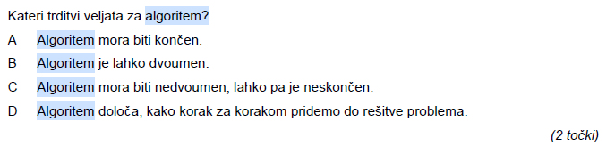
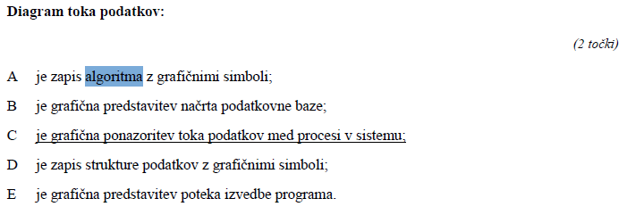
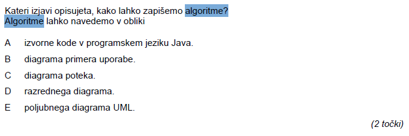
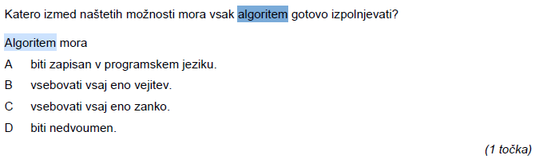
Vaje:
Risanje po navodilu
Zapis algoritma
Naloga: sledi algoritmu (delaj, to kar ti
naroči)
Odprta naloga – rešitev preveri sam ali z učiteljem.
ZAČETEK
vsota ← 0
ŠTEVILKA ← 1
PONAVLJAJ DOKLER vsota ni enaka -3:
vsota ← vsota + ŠTEVILKA
ŠTEVILKA ← ŠTEVILKA + 1
Izpiši(vsota)
KONEC
ZAČETEK
vsota ← 0
ŠTEVILKA ← 1
vsota ← vsota + ŠTEVILKA
ŠTEVILKA ← ŠTEVILKA + 1
Izpiši(vsota)
ČE vsota ni -3 se vrni na korak 4
KONEC
ZAČETEK
vsota ← 0
ŠTEVILKA ← 1
Če je vsota -3 idi na korak 9
vsota ← vsota + ŠTEVILKA
ŠTEVILKA ← ŠTEVILKA + 1
Izpiši(vsota)
Če vsota ni -3 se vrni na korak 5
KONEC
Zaključek:
Algoritem se nikoli ne konča (po navadi to ni dobro)
Algoritem ni bil najbolj jasen (nismo ga vsi razumeli, bila so
podvprašanja) – to se je pokazalo pri številki -3 (nismo vedeli ali
odštevam …)
Naloga:
Spremeni algoritem tako, da se bo končal.
Spremeni algoritem tako, da bo imel neki smisel (MAT).
Spremeni algoritem tako, da sešteje prvih 100 naravnih
števil (D.N.)
Odprta naloga – rešitev preveri sam ali z učiteljem.
ZAČETEK
vsota ← 0
ŠTEVILKA ← 1
PONAVLJAJ DOKLER vsota ni enaka 3:
vsota ← vsota + ŠTEVILKA
ŠTEVILKA ← ŠTEVILKA + 1
Izpiši(vsota)
KONEC
Def.1: Algoritem je navodilo, s katerim rešujemo
določen problem. Običajno je zapisan kot seznam
korakov, ki nas pripeljejo do rešitve
problema. [vir]
Def. 2: Algoritem je v matematiki in računalništvu končno zaporedje
natančno določenih, računalniško izvedljivih navodil, običajno
namenjenih reševanju težav ali za izvajanje izračuna. [vir]
Def. 3: Algoritem je seznam pravil, ki jih je treba upoštevati pri
reševanju problema. [vir]
Def. 4: Algoritem je zaporedje korakov, ki nas privedejo do cilja.
Algoritmi morajo biti hitri, končni in enolični. Uporabljamo jih v
vsakdanjem življenju, računalništvu in sodobni tehnologiji. [vir]
Def. 5.: An algorithm is a step-by-step procedure or formula for
solving a problem. It is a set of well-defined instructions that take an
input, process it, and produce an output. Algorithms are fundamental to
computer science and programming, as they form the basis for writing
programs to perform specific tasks. [Copilot na vprašanje – What is
algorithm?]
Algoritem je podrobna vrsta navodil za izvajanje nekega dela ali
reševanje problema. Ne-tehnično gledano uporabljamo algoritme v
vsakodnevnih nalogah, kot je recept za peko kolačkov ali priročnik v
smislu "naredi sam".
Kako podrobno razdelamo korake, je odvisno od tega, kdo izvaja
algoritem (človek, računalnik). Če algoritem izvaja računalnik, potem
govorimo o računalniškem programu. Primer algoritma iz vsakdanjega
življenja je kuharski recept. [vir]
Zapis algoritma
Kako lahko algoritem zapišemo? Obstaja več načinov.
Zapis algoritma
Primer
Naravni jezik
Sestavine:
4 beljaki
moka
sladkor (po želji)
2 čajni žlici pecilnega
praška
mleko
vanilin sladkor
Postopek:
Stepemo beljake v sneg in jim dodamo sladkor, nato spet dobro
stepemo, da dobimo lepo kremo. Nato dodamo še ostale sestavine. V ponvi
spečemo
palačinke in jih namažemo z nadevom (po želji).
Grafično – npr. diagram poteka
Programski jezik
if (stevilo > 4)
stevilo = stevilo + 1;
else
exit(0);
Psevdokod
če (število > 4)
povečaj število za 1
sicer
končaj_program
Drugi načini
??
Vprašanje: Od česa je odvisna način zapisa
algoritma?
Odprta naloga – rešitev preveri sam ali z učiteljem.
Odgovor: Odvisno od namena (za kaj ga bomo
potrebovali) in tistega, ki ga bo izvajal (računalnik, človek).
Zapisi algoritma (prednosti, slabosti)
Način zapisa
Značilnosti
Pozitivne lastnosti
Negativne lastnosti
Besedni zapis
Algoritem je zapisan v stavkih v naravnem jeziku (slovenščina ali
angleščina).
Enostaven za razumevanje.
Ni potrebno znanje programiranja.
Primeren za vsakdanjo uporabo.
Dolg in obsežen zapis za kompleksne probleme.
Lahko pride do dvoumnosti.
Težko za neposredno izvajanje s strani računalnika.
Psevdokoda
Poenostavljen zapis, ki spominja na programski jezik, a je bolj
čitljiv.
Lažje pretvorljivo v program.
Pregledno za algoritme z več koraki.
Jasna logika.
Zahteva osnovno znanje strukture algoritma.
Ni standardizirana vsakdo Lahko piše po svoje.
Diagram poteka (flowchart)
Grafični prikaz z osnovnimi simboli: oval (začetek/konec),
pravokotnik (akcija), romb (pogoj), puščice (tok).
Pregleden vizualni prikaz.
Dobro za razumevanje zapletenih postopkov. Pomaga pri odkrivanju napak v
logiki.
Dober za načrtovanje.
Težko za dolge ali zelo kompleksne
algoritme.
Potrebno veliko časa za risanje kompleksnih
algoritmov.
Programska koda
Algoritem je zapisan v pravem programskem jeziku (Python, Java, C,
…), računalnik ga lahko izvede.
Neposredno izvedljivo na računalniku. Natančno, brez dvoumnosti.
Omogoča izvajanje kompleksnih algoritmov in ponavljajočih se
operacij.
Omogoča testiranje in preverjanje rezultatov.
Zahteva znanje programiranja. Težko berljivo za začetnike brez izkušenj.
Ni vizualno pregledno kot diagram.
Lastnosti algoritma
pravilnost – algoritem mora pravilno rešiti problem. Za določene
vhodne podatke mora »izračunati« pravilne izhodne podatke.
popolnost – vedno vrne rešitev; če
obstaja.
razumljivost – izvajalec (človek, računalnik) ga mora (enoumno)
razumeti,
končnost – izvajanje se mora po določenem
številu korakov končati (ne sme biti neskončen),
enoumnost (nedvoumnost) – obstaja le en način
interpretacije ukazov - vir
determinizem – če sledimo ukazom, se bo želeni rezultat vedno
dosegel – z drugimi besedami, pri istem vhodu, moramo dobiti vedno isti
izhod. Računalnik je deterministični stroj. Računalnik se ne zna
odločati.
splošnost – algoritem mora rešiti čim širši
spekter problemov – če je to mogoče
učinkovitost (časovne kompleksnost) – algoritem
mora biti hiter
Semantične: pomenske napake –
progam dela – napačno (lahko samo v zelo redkih
primerih – TEŽAVA)
1 +1 = 2
Vprašanja iz ProGO
Odprta naloga – rešitev preveri sam ali z učiteljem.
Razloži latinski pregovor: “Kdor hitro da, dvakrat da.”
Odprta naloga – rešitev preveri sam ali z učiteljem.
ODG: Najdi na wikipediai
ODG: oba odgovra predstavljen pri pouku sta logična in pravilna
Kaj je značilnost proceduralnega znanja.
Odprta naloga – rešitev preveri sam ali z učiteljem.
Za pridobivanje je potrebna vaja.
Zanje, ki ga uporabljamo v praksi. Vožnja avtomobila.
Zanje , kako se nekaj naredi. Postopek.
Kakšna je razlika med proceduralnim in deklarativnim
znanjem?
Odprta naloga – rešitev preveri sam ali z učiteljem.
Deklarativno – KAJ, KDAJ?
Proceduralno – KAKO (nekaj narediti, rešiti problem)?
Na kakšen način lahko pridemo do dobrega proceduralnega
znanja?
Odprta naloga – rešitev preveri sam ali z učiteljem.
Z ponavljanjem vaje. Fajn je znati tudi dejstna –
deklarativno znanje. Izkušnje skozi različne situacije. Učenje iz napak.
Učenje iz tujih napak. Vaja dela mojstra . Mojster pa dela vajo. Vaja
skozi igro. Poslušanje - sprejemanje kritik.
Kako je programiranje povezano s proceduralnim znanjem?
Odprta naloga – rešitev preveri sam ali z učiteljem.
Programiranje je pisanje navodil.
Opiši pojem programiranje in
program!
Odprta naloga – rešitev preveri sam ali z učiteljem.
Program je skupek navodil, ki vodijo do cilja. Je
zaporedje ukazov. Programskih ukazov. Napisan je v programskem
jeziku. Umetni jezik. Ali je to čisto res? Preveri! Ni
čsito res, v širšem pomenu besede , je lahko program tudi kakšno drugo
navodilo (televizijski progrma).
Programiranje je proces (postopek) katerega cilj je
program.
Program lahko opišemo z navodili.
V kakšni obliki lahko izrazimo navodilo?
Odprta naloga – rešitev preveri sam ali z učiteljem.
Naravni jezik, umetni – programski, psevdokod, grafični
(diagram poteka)
Kakšne vrste stavek je navodilo? (Trditev. Vprašanje. Velitev.
Prošnja.)
Odprta naloga – rešitev preveri sam ali z učiteljem.
Velitev1
Napiši dva konkretna primera!
Odprta naloga – rešitev preveri sam ali z učiteljem.
Izpiši(»Zdravo«),
Vsota = 2 + 3
Pojdi čez vrata!
Vstani!
Zakaj programiramo v programskem jeziku in ne v naravnem jeziku
(kar bi tudi bilo možno)?
Odprta naloga – rešitev preveri sam ali z učiteljem.
Če bi želeli v naravnem jeziku program napisati, bi morali ful bolj
na dolgo in podrobna!
Navodilo mora biti enoumno!
Kaj je skupno različnim programskim jezikom in tudi nakterim
različnim naravnim jezikom?
Kako bi opisali trojco pri programiranju: vhod, osrednji del,
izhod. V razlagi uporabi besedo algoritem!
Kdaj kot rezultat dobimo izpis in kdaj izdelek? Na kakšen način
lahko rezultat izpišemo v računalniku? Je še kakšen drug način, za
predstavitev rezultata?
Ali je vrstni red izvajanja pomemben? Razloži na poljubnem
primeru!
Razloži pojem konstanta. Kaj “sestavlja” konstanto?
Odprta naloga – rešitev preveri sam ali z učiteljem.
Je vrednost, ki se med izvajanjem program ne spremeni!
Spremenjivka se spreminja, konstanta pa NE!
X = 1
V x shrani vrednost 1.
Kdaj uporabimo konstante?
Lahko pišemo programe tudi brez uporabe konstant?
Kakšna je razlika med ukazoma za izpis (spodaj b in c)
a=”test”
izpis “a”
izpis a
Kateri lik uporabimo za izpis?
Odprta naloga – rešitev preveri sam ali z učiteljem.
Diagram poteka
Kaj je diagram poteka?
Kako lahko zapišemo algoritem?
Diagram poteka, programski jezik, psevdokod, naravni jezik!
Je način, kako lahko zapišemo (opišemo) algoritem. Je grafični način.
S simboli. In znaki. In števili.
Čemu je namenjen? Za kaj ga uporabljamo?
Katere simbole lahko uporabimo?
Primer:
Naloga: Sledi algoritmu. Zapiši: spremembo
spremenljivk, izpis.
Odprta naloga – rešitev preveri sam ali z učiteljem.
Kaj pomeni V:x?
Počakaj, da uporabnik nekaj vpiše in pritisne enter. Ko vpiše se
vpisana vrednost shrani v x.
Opisali smo vse simbole in jih razložili.
Postopek pisanja algoritmov.
Za vsak problem bomo:
Natančno prebrali navodila.
Napisali dva (ali več, če je to potrebno) različnih scenarijev, s
katerima bomo prikazali, ali razumemo problem.
Napisali rešitev problema (algoritem) – diagram poteka.
Test – sledili bomo napisanemu algoritmu iz točke 3 in primerjali
našo rešitev s točko 2. Pri sledi bomo v tabeli zapisovali spremembe
vrednosti spremenljivk ter vpis in izpis.
Če se rezultati v točki 2 in 4 ujemajo, je rešitev pravilna, če
ne, moramo ponoviti korake 3 in 4. (Morda celo spremeniti točko
2.)
Odprta naloga – rešitev preveri sam ali z učiteljem.
Napiši diagram poteka za programe:
Odprta naloga – rešitev preveri sam ali z učiteljem.
Program naj sešteje števili 3 in 7, rezultat shrani v
spremenljivko n in izpiše rezultat na ekran.
Program, kjer uporabnik vpiše dve števili. Izpiše se vsota.
Napiši uporabniku prijazen program.
Program izračuna ostanek pri deljenju števil 7 in 3 in rezultat
shrani v spremenljivko x. Na ekran izpiše »Ostanek pri deljenju števil 7
in 3 je 1«. Ostanek izpišemo iz spremenljivke. (operator za računanje
ostanka je %)
Program, ki uporabnika vpraša po vnosu dveh števil. Nato program
izračuna in v spremenljivki shrani produkt in količnik števil. Najprej
izpiše produkt, po pritisku tipke enter pa še količnik. Po pritisku
tipke enter se program konča. Naredi uporabniku prijazen
program.
Program, kjer uporabnik vpiše dve celi števili. Program izpiše:
količnik in ostanek. Pazi, da izpišeš samo cela števila. Uporabi samo
standardne aritmetične operatorje (+,-,/,*,%,=).
Odprta naloga – rešitev preveri sam ali z učiteljem.
Vprašanja iz vaj:
Odprta naloga – rešitev preveri sam ali z učiteljem.
Napiši en primer vejitve z diagramom poteka, ki jo računalnik zna
razrešiti in en primer vejitve, ki jo računalnik ne zna razrešiti.
Razloži zakaj! Kateri način bo prepovedan?
Kateri simbol uporabljamo za odločitve v diagramu poteka. Kaj
napišemo znotraj simbola? Kako to preberemo? Koliko izhodov je iz
odločitve? Kako vemo, po kateri poti bomo nadaljevali program?
Odprta naloga – rešitev preveri sam ali z učiteljem.
Naloge:
Napiši diagram poteka, kjer uporabnik vpiše dve števili. Nato
števili izpiše po velikosti. Najprej manjše, doda vejico in presledek,
nato še večje. Na koncu doda piko.
Napiši diagram, kjer uporabnik vpiše starost in spol (m/ž). Nato
sledi izpis: »Si polnoleten«, »Si polnoletna«, »Nisi polnoleten«, »Nisi
polnoletna« odvisno od vnosa uporabnika.
Napiši diagram poteka, ki izpiše Janja Garnbret 3 krat na
ekran.
Napiši diagram poteka, ki izpiše Janja Garnbret 100 krat na
ekran. Razmisli, kako bi program okrajšal s ponavljanjem.
Odprta naloga – rešitev preveri sam ali z učiteljem.
Dodatno interaktivno preverjanje
POGLAVJE 03 / 21
Pisanje algoritmov – diagram poteka
Za kaj uporabljamo diagram poteka?
Kaj se zgodi ob znaku
Beri X
Navodilo: Če obstajajo odvečne vrstice, jih prečrtaj in v sive celice
zapišite izpis programa.
Ob ukazih si zapišite tabelo trenutnih vrednosti spremenljivk!
x
y
z
izpis
x=3
3
y=2
2
z=x
3
x = y
2
y=z
3
Izpis x
2
Izpis y
3
Vse vrstice so nujno potrebne.
POGLAVJE 04 / 21
Deli programov - Izrazi, stavki, trditev
Izraz (expression)
In programming, an expression is a combination of values, variables,
operators, and functions that a programming language interprets to
produce another value. Essentially, an expression is any piece
of code that can be evaluated to a value. For example, in the
expression 2 + 3, the result is 51.
Expressions can be simple, like a single variable or constant (x,
42), or more complex, involving multiple operations and function calls
((a + b) * c). They are fundamental building blocks in programming
because they allow you to perform calculations, manipulate data, and
control the flow of a program21.
Would you like to see some examples of expressions in a specific
programming language?
Izraz (statement)
The entire line x = y + 1; is an assignment statement
because it ends with a semicolon and performs an action (assigning a
value to x).
Ponovimo
Naštej in opiši elemente DP (diagrama poteka).
Kako se povezujejo elementi diagrama poteka z Von Neumannovo
arhitekturo računalnika?
Zapiši 10 možnosti za V/I operacije.
Kakšna je razlika med
prvi primer
Odprta naloga – rešitev preveri sam ali z učiteljem.
Izpis avto
drugi primer
Odprta naloga – rešitev preveri sam ali z učiteljem.
Izpis "avto"
tretji primer
Odprta naloga – rešitev preveri sam ali z učiteljem.
Beri (vnos) avto
Katere lastnosti algoritmov sledeči algoritem ne
izpolnjuje?
Odprta naloga – rešitev preveri sam ali z učiteljem.
Kakšna je prednost tolmača napram prevajalniku?
Lastno vprašanje! (Vprašanja so pomembnejša od
odgovorov😊)
Odprta naloga – rešitev preveri sam ali z učiteljem.
Vprašanja in odgovori
Odprta naloga – rešitev preveri sam ali z učiteljem.
Kaj lahko vnesemo za vhodne podatke? Naštej nekaj različnih
primerov?
Odprta naloga – rešitev preveri sam ali z učiteljem.
Števila, tekst, seznam, klik na ikono, datum, čas, sistemska ura,
naključnega (število iz okolja) (lahko natipkamo, lahko kliknemo, lahko
povemo, …)
Kakšno dodano vrednost dobimo z uvedbo vnosa podatkov uporabnika?
(Kaj pomeni, če program nima vhodnih podatkov, ki jih lahko vnese
uporabnik)?
Odprta naloga – rešitev preveri sam ali z učiteljem.
Program se odzove na naš vhod. 1, 2 , sestej-> 3
Vedno dela eno in isto.
Kako izgleda program, ki nima vhodnih podatkov?
Odprta naloga – rešitev preveri sam ali z učiteljem.
x = 3
Izpis x
Ne moreš vplivati na dogajanje (izvajanje) programa.
Ali vnos podatkov med ali na začetku izvajanja programa vpliva na
izvajanje programa? Razloži s primerom.
Odprta naloga – rešitev preveri sam ali z učiteljem.
Ja vpliva.
X = vnos števila
X = 3
Izpis x
Zakaj si moramo vnesene podatke zapomniti?
Odprta naloga – rešitev preveri sam ali z učiteljem.
Da jih lahko uporabimo. Tudi večkrat.
Vnos x
Vnos y
Vsota = x + y
Katero možnost za hranjenje vhodnih podatkov nam nudijo algoritmi
(programski jeziki)?
Odprta naloga – rešitev preveri sam ali z učiteljem.
Spremenljivke. (seznami).
Definiraj pojem izraz (expression)! Napiši primer enega
izraza.
Odprta naloga – rešitev preveri sam ali z učiteljem.
Kombinacija spremenljivk, vrednosti, funkcij, ki se obdelajo in
vrnejo vrednost.
3 + 5*2
2*z*3*x
x*y*z
3*random(10)
Opiši postopek, ki se izvede pri ukazu
vnos!
Program se ustavi
Čaka uporabnika, da vnese podatke (število, črko, niz
znakov)
Odprta naloga – rešitev preveri sam ali z učiteljem.
Kje (kdaj) uporabiti?
Kadar moramo vnesti vhodne podatke!
Če želimo da se program ustavi!
Kdaj v diagramu poteka uporabimo znak (ukaz) za vnos?
Odprta naloga – rešitev preveri sam ali z učiteljem.
Ko se v programu obdelujejo podatki, ki jih
je treba vnesti.
Ko potrebujemo podatke.
Če želimo ustaviti program.
Kakšna je razlika pri računanju izrazov na (žepnem) kalkulatorju
ter računalniku?
Kako zapišemo operatorje za:
· Seštevanje +
· Odštevanje -
· Množenje *
· Deljenje /
· Računanje ostanka pri celoštevilskem deljenju
(mod) %
Odprta naloga – rešitev preveri sam ali z učiteljem.
3+2=>5
5-3=>2
17%2=>1 17/2=8 ost 1 (2*8=16+1=17)
17%4=>1
17%5=>2
V kakšnem vrstnem redu pišemo ukaze? Kako se bodo
izvedli?
Odprta naloga – rešitev preveri sam ali z učiteljem.
V vrsticah. Izvedejo se vrstico za vrstico. Prva se izvede prva
vrstica (tista, na vrhu).
Vrstica
Vrstica
Odprta naloga – rešitev preveri sam ali z učiteljem.
Ali strojni jezik vsebuje komentarje? Zakaj!
Odprta naloga – rešitev preveri sam ali z učiteljem.
Ne. Ker komentar ni namenjen računalniku, ampak programerju.
Kako se v programskem jeziku java napiše komentar (zapiši oba
načina).
Odprta naloga – rešitev preveri sam ali z učiteljem.
// komentar
/* komentar */
Kdo uporablja komentarje (kdo jih piše, kdo jih bere)?
Odprta naloga – rešitev preveri sam ali z učiteljem.
Programerji! Samo programerji!
Kako naredimo uporabniku prijazen program?
Odprta naloga – rešitev preveri sam ali z učiteljem.
Pri vnosu napišemo kaj naj vnese!
Jasna navodila in lahek vnos podatkov (izpis primera, gumbek za
pomoč, …).
Kaj je operator prirejanja (assignment)?
Odprta naloga – rešitev preveri sam ali z učiteljem.
=
X = 2
Spremenimo vrednost spremenljivke x na 2.
Y= 2*3- 12
Najprej ovrednotimo izraz ne desni strani operatorja prirejanja, nato
shranimo dobljeno vrednost v spremenljivko na levi strani operatorja
prirejanja.
Napiši vrstni red izvajanja stavka z = 3*(2+x) =
to ni »je enako«
Odprta naloga – rešitev preveri sam ali z učiteljem.
2+x
2+x pomnožimo s 3
Shranimo rezultat v z
Napiši vrstni red izvajanja stavka z = 3*(2+z)
Odprta naloga – rešitev preveri sam ali z učiteljem.
Naloga
Sledi algoritmu. Zapiši izpis na ekran, spremembe spremenljivk.
Uporabnik naj vstavi vrednosti:1, 5, -2, 7, 0, 8.
Odprta naloga – rešitev preveri sam ali z učiteljem.
Naloga:
Izpiši števila med 1 in 100.
Odprta naloga – rešitev preveri sam ali z učiteljem.
Izpiši števila med 100 in 200.
Odprta naloga – rešitev preveri sam ali z učiteljem.
Izpiši števila med 200 in 1.
Odprta naloga – rešitev preveri sam ali z učiteljem.
Naloga: Uporabnik vpisuje števila, dokler ne vpiše
število 100.
Odprta naloga – rešitev preveri sam ali z učiteljem.
Naloga: Uporabnik vnaša števila, dokler ne vnese
števila 999. Ko vnese to število, izpiše program KONEC. Napiši diagram
poteka.
Odprta naloga – rešitev preveri sam ali z učiteljem.
Scenarij1:
1
6
9
-1
999
KONEC
Scenarij2:
999
KONEC
Komentarji:
Diagram poteka je neodvisen od programskega jezika.
Za vnos in izpis uporabimo paralelogram.
Za vnos poljubne vrednosti uporabimo spremenljivko. Ne pišemo
narekovajev.
V:x in ne V:«x«
Naloga: Uporabnik vnaša števila. Števila sproti
sešteva. Ko vnese število 0, se program konča. Izpiši vsoto vseh števil
in število vnesenih števil. Napiši diagram poteka.
Odprta naloga – rešitev preveri sam ali z učiteljem.
Scenarij1:
1
6
9
-1
0
Vsota vseh števil je 15. Vnesel si 4 števila.
Scenarij2:
1
1
1
0
Vsota vseh števil je 3. Vnesel si 3 števila.
Naloga:
Vprašanje: Kaj »naredi« algoritem?
Odprta naloga – rešitev preveri sam ali z učiteljem.
Odgovor: Program sešteva vpisana števila. Konča se,
ko vnesemo število 0. Izpiše vsoto vseh števil.
Vprašanje: Predlagaj spremembo algoritma tako, da se
konča, ko je vsota vpisanih števil 1000 ali več.
Odprta naloga – rešitev preveri sam ali z učiteljem.
D.N. : Naredi preizkus.
Opazimo: V diagramu opazimo, da se del ponavlja. Ta
ponavljajoči del imenujemo zanka (loop). V programskih jezikih se zanka
ponavlja (izvaja), ko je pogoj izpolnjen. Če imamo program narejen tako,
da se ponavlja, ko pogoj ni izpolnjen, moramo:
Zamenjati vrednosti DA in NE.
Negirati pogoj.
Odprta naloga – rešitev preveri sam ali z učiteljem.
Primerjalni operatorji nastopajo, kjer moramo
vpisati pogoj (kara).
(Primerjalni) operator
Zanikan (primerjalni) operator
==
!=
!=
==
<
>=
>
<=
<=
>
>=
<
Naloga: Nariši diagram poteka, ki uporabnika vpraša
po dveh številih. Nato izpiše vsa števila med njima. Napiši dva
scenarija (primera, kako bo izgledal program). Naredi preizkus za oba
scenarija.
Odprta naloga – rešitev preveri sam ali z učiteljem.
D.N. Reši primera ProGO na strani 73 in 74. Zapiši v zvezek,
ali če imaš natisnjeno na list.
Naloga: Nariši diagram poteka, kjer uporabnik vpiše
dve števili. Nato izpiše manjše za njim pa večje. Pred začetkom napiši
dva različna primera programa. Diagram testiraj!
Odprta naloga – rešitev preveri sam ali z učiteljem.
Naloga: Nariši diagram poteka, kjer uporabnik vpiše
dve števili. Nato izpiše manjše za njim pa večje. Diagram naredi tako,
da bo izpis vedno v istem vrstnem redu, po potrebi pa se zamenjata
vrednosti spremenljivk.
Odprta naloga – rešitev preveri sam ali z učiteljem.
Naloga: Uporabnik naj vpiše svoje ime in število x.
Program izpiše vpisano ime x-krat.
Odprta naloga – rešitev preveri sam ali z učiteljem.
Naloga: Izpiši vsaj števila na intervalu med 7 in
2011, ki so deljiva z osem. Na vsakih 40 števil ustavi program in čakaj
na uporabnikovo potrditev. Razdeli nalogo na manjše, obvladljive
dele.
Odprta naloga – rešitev preveri sam ali z učiteljem.
Primer: 8, 16,24,32,….320
328,…..
Najprej naredi zanko, ki izpisuje števila od
8,9,10,…2010.
Preden izpišeš število, preveri, če je deljivo z 8.
Ko izpišeš število, povečaj števec izpisanih za 1. Ko števec
doseže 40 ustavi program. Po pritisku na gumb, števec resetiraj na
0.
Rešitev: Nasvet. Program razdelimo na manjše ,
obvladljive dele. Kaj bi pa lahko bilo takšni manjši deli? 1) Izpiši vsa
števila med 7 in 2011. Ko imamo to, 2) dodamo, da vsako število pred
izpisom preverimo, če je deljivo z 9. Samo v tem primeru ga izpišemo. 3)
Nato dodamo še dodaten pogoj, da program po vsakih 40 izpisih ustavimo.
Hraniti moramo torej vrednost, kolikokrat smo že izpisali.
Naloga: Dijak vpisuje ocene. Vpiše lahko samo
pravilne ocene. Končamo z vpisom števila 0. Na koncu se izpiše se
število ocen in povprečna ocena.
Odprta naloga – rešitev preveri sam ali z učiteljem.
Primer:
Vpiši oceno:1
Vpiši oceno:1
Vpiši oceno:5
Vpiši oceno:6
NAPAKA
Vpiši oceno:5
Vpiši oceno:0
Vpisane ocene: 4.
Povprečje 12 / 4 = 3.
Pomoč: Najprej označite:
Z rdečo vrednosti, ki se bodo spreminjale. Vsakič, ko
bomo »diagram zagnali« bo drugačne.
Z zeleno vrednosti, ki bodo konstantne. Vsakič, ko bomo
»diagram zagnali« bodo enake.
Naloga: Napiši diagram poteka.
Odprta naloga – rešitev preveri sam ali z učiteljem.
Primer 1:
Vpiši 1. št: 23
Vpiši 2. št: 1
Vpiši operator (+,-):+
23 - 1 = 22
Primer 2:
Vpiši 1. št: 23
Vpiši 2. št: 1
Vpiši operator (+,-):*
Napačen operator!
Naloga (ACM)
Odbojkaške točke
Tvoj prijatelj Jan z obale v svojem prostem času sodi na odbojkaških
tekmah. Seveda pa bi on raje igral odbojko in na plaži ribaril, zato bi
rad razmišljajoči del sojenja preložil nate. On bo zapisal zaporedje
dogodkov, ti pa mu izračunaj, ali to točko dobi ekipa 1 ali 2.
Dogodki, ki jih bo Jan napisal, so treh vrst:
1. O1 oz. O2 pomeni odboj ekipe 1 oz. 2. Na začetku vsake točke mora
nekdo iz ene ekipe žogo servirati (ima en odboj) na drugo stran mreže.
Od takrat naprej mora vsaka ekipa žogo odbiti vsaj enkrat in največ
trikrat ter jo z zadnjim odbojem spraviti nazaj čez mrežo.
2. P1 oz. P2 pomeni, da je žoga padla v polje ekipe 1 oz. 2. Če ekipi
žoga pade v lastno polje, točko izgubi, če pa jo spravi v polje druge
ekipe, točko dobi.
3. I pomeni, da je žoga šla izven igrišča (v out) ali neveljavno
letela pod mrežo. Ekipa, ki se ji to zgodi, izgubi točko.
Napiši program (ali podprogram oz. funkcijo), ki iz
seznama dogodkov izračuna, katera ekipa dobi prvo točko. Podrobnosti
tega, v kakšni obliki je seznam dogodkov podan, določi sam in jih v
svoji rešitvi tudi opiši.
Odprta naloga – rešitev preveri sam ali z učiteljem.
Zaporedje se vedno začne z dogodkom O1 ali O2, kar nam pove, katera
ekipa je servirala žogo. Zaporedje se ne konča nujno takoj po tistem, ko
ena od ekip dobi točko.
Primer 1:
O3
Napaka. Ni te ekipe.
Primer 2:
O1
O1
Napaka. Ekipa 1 več kot trije odboji.
Primer 3:
O2
O2
Napaka. Ekipa 2 več kot trije odboji.
Primer 3:
O2
O1
O1
O1
O1
Napaka. Ekipa 2 več kot trije odboji.
Napiši diagram, ki preveri samo ti dve zadevi
Preveri, če je začetek pravilen (O1, O2).
Preveri, če je katera izmed ekip odbila več kot 3 krat – pol je
napaka (ustavi program).
Primer:
Zapiši primer s tremi pravilnimi izmenjavami in nato igralec
udari v avt
Zapiši primer, ko igralec servira v avt
Zapiši primer, ko se igralec pri skoku v blok zaplete v
mrežo
Dodatno navodilo: program v neskončni zanki bere vhod.
Naloga: Izpiši zaporedje 1/1+1/2+1/3+1/4+…. Členov
naj bo 171. Obenem izračunaj vsoto. Po vsakem (7) členu počakaj, da
uporabnik potrdi.
Odprta naloga – rešitev preveri sam ali z učiteljem.
Napiši diagram poteka. VEDNO -> Sam sledi algoritmu, da preveriš,
če si pravilno naredil.
Odprta naloga – rešitev preveri sam ali z učiteljem.
Izpis: 1/1 + 1/2 + … 1/171.
Zanka se izvede 171 krat.
Naloga: Napiši diagram poteka, kjer uporabnik vnese
dve števili. Program števili zamenja (zamenja vrednosti v
spremenljivkah) in izpiše v obratnem vrstnem redu, kot je
vpisano.
Odprta naloga – rešitev preveri sam ali z učiteljem.
Dodatno – za vse: brez uvedbe nove spremenljivke.
Scenarij 1
A:1
B:2
2
1
POGLAVJE 05 / 21
Programski jeziki
Cilji
Dijak zna razložiti, kaj je programski jezik
Dijaki
spoznajo različne vrste programskih jezikov glede na namen in
uporabo
spoznajo generacije jezikov in splošne strokovne pojme, povezane
s programskimi jeziki.
Pojmi Programski jezik,
sintaksa,
semantika,
postopkovni jeziki,
nepostopkovni jeziki,
objektni jeziki,
Def. 1: Programski jezik je umetni jezik, namenjen
reševanju problemov z računalnikom. V programskem
jeziku napišemo navodila - program, ki ga izvedemo na
računalniku. Program moramo pred izvajanjem še
prevesti v računalniku razumljiv jezik –
strojni jezik.
Def. 2: A programming language is a formal language comprising a set
of instructions that produce various kinds of output. These languages
are used to implement algorithms and control the behavior of machines,
particularly computers. [vir: Copilot na vprašanje What is programming
language?]
Def. 3: Programski jezik je (samo) jezik, ki si ga je nekdo izmislil
in naučil računalnik, da ga »razume«. [Vir]
Vprašanje: Si lahko kdorkoli izmisli svoj programski
jezik? Če da, za kaj mora (še) poskrbeti, da ga lahko uporabi?
Odprta naloga – rešitev preveri sam ali z učiteljem.
Pogramski jeziki: C++, C#, java, python, SQL,
Da, lahko. Poskrbeti mora za besede, za pravila in tudi za prevod v
strojni jezik - prevajalnik. Moramo napisati
(sprogramirati) prevajalnik.
Da bo programski jezik razumljiv tudi za računalnik,
ga moramo prevesti v strojni jezik. Postopek se imenuje
prevajanje (compiling).
Vrste programskih jezikov
Programskih jezikov je zelo veliko. Razvrstimo jih lahko v
skupine:
po namembnosti - vrstah problemov, ki jih z njimi rešujemo
(splošni, spletni, realno časovni, … )
kronološko, po času nastanka (generacije)
še kako 😊
proceduralni
objektni
funkcijski
spletni
splošni
označevalni
java
x
x
x
php
x
x
x
x
Lisp
x
HTML
x
x
Za radovedne
Programming languages can be broadly categorized
into several types based on their features and use cases. Here are some
of the main types:
Procedural Languages: These languages follow a set of
instructions in a sequential manner. Examples include C, Pascal, and
Fortran.
Object-Oriented Languages: These languages are based on the
concept of “objects,” which can contain data and code. Examples include
Java, C++, and Python.
Functional Languages: These languages focus on mathematical
functions and avoid changing-state and mutable data. Examples include
Haskell, Lisp, and Erlang.
Scripting Languages: These are often used for automating tasks
and are usually interpreted rather than compiled. Examples include
JavaScript, Python, and Ruby.
Markup Languages: These are used to define the structure and
presentation of raw text. Examples include HTML, XML, and
Markdown.
Logic Programming Languages: These languages are based on formal
logic. An example is Prolog.
Concurrent Languages: These languages are designed to handle
concurrent processes. Examples include Go and Erlang.
Database Query Languages: These are used to manage and manipulate
databases. Examples include SQL and PL/SQL.
Odprta naloga – rešitev preveri sam ali z učiteljem.
Each type of programming language has its own strengths and is suited
to different kinds of tasks. Do you have a specific type you’re
interested in learning more about?
Odprta naloga – rešitev preveri sam ali z učiteljem.
Generacija
Primer
Prednosti
Slabosti
Konnkretni Primer
1.
Strojni jezik (strojna (binarna) koda – ang. Machine language
Ne rabi prevajati
Hitreje dela, ker je narejen za vsaki procesor posebej
Lahko napišemo boljše za vsak specifični primer
procesorja
Ni razumljiv (zelo težko razumljiv – računalnik, tisti ki ga zna
– malo je takih)
Moramo pisati program za vsaki procesor posebej
Poznati moramo ukaze in načine za vsaki procesor (HW)
posebej
01000110010010101001010101010010010
2.
Zbirnik - Assembly language
3.
C++, Java, Python, C#, PHP,
Lažje razumljiv kot 1. generacija
Moramo ga prevesti ???
Ni optimiziran za določene procesorje, opravila
print("petek")
x = 7
if x == 7:
print("x je 7")
4.
SQL, MATLAB
5.
Prolog, Mercury
Generacija
Primer
Prednosti
Slabosti
Primer
1.
Strojni jezik (strojna (binarna) koda – ang. Machine language
Zelo hiter
Direkten dostop do strojne opreme
Ne potrebuje prevajalnika ali tolmača
Zelo težaven za branje in pisanje
Težave pri iskanju napak in vzdrževanju
0100101001000101010
2.
Zbirnik - Assembly language
Enostavnejši v primerjavi s strojnim
Direkten dostop do strojne opreme
Potrebujemo zbirnik za pretvorbo v strojno kodo
Nizko nivojski – zahteven za uporabo
Razlike med različno strojno opremo (machine-dependent)
mov fa,11
push 11
3.
C++, Java, Python, C#, PHP,
Človeku lažje berljiv
Angleška sintaksa
S pomočjo prevajalnikov in tolmačev prenosen med različnimi
sistemi (OS)
Podpira strukturno programiranje in modularnost
Izvajanje počasnejše (v primerjavi z nižjimi PJ)
Potrebujemo prevajalnik ali tolmač
if( age >= 18)
print »ti si polnoleten«
else
print »ti si mladoleten«
4.
SQL, MATLAB
Bližje naravnemu jeziku – lažje učenje in uporaba
Delo s podatki, poročili, matematičnimi izračuni
Manj nadzora na strojno opremo in ostalimi viri
Počasnejši
SELECT ime, priimek
FROM dijak
WHERE starost > =18
5.
Prolog, Mercury
Rešujemo probleme z podajanjem omejitev in logike namesto jasnih
(eksplicitnih) navodil
Uporaba v umetni inteligenci in ekspertnih sistemih
Zahteven za učenje
Omejen v smislu splošnosti problemov
Here are some key aspects of programming
languages:
Syntax: This refers to the set of rules that
define the combinations of symbols that are considered to be correctly
structured programs in that language.
Semantics: This refers to the meaning of the
symbols, expressions, and statements within the language.
Pragmatics: This involves the practical aspects
of using the language, including how it is used to solve problems and
how it interacts with other languages and systems.
Types: Programming languages can be categorized
into various types, such as procedural, object-oriented, functional,
scripting, and more.
Compilation and Interpretation: Some languages
are compiled, meaning the code is translated into machine language
before execution. Others are interpreted, meaning the code is executed
directly by an interpreter.
Odprta naloga – rešitev preveri sam ali z učiteljem.
Programming languages enable developers to write programs that can
perform a wide range of tasks, from simple calculations to complex data
processing and artificial intelligence.
Za radovedne
What are some common use cases for assembly
language?
Assembly language is often used in scenarios where direct hardware
manipulation, access to specialized processor instructions, or critical
performance optimization is required. Here are some common use
cases:
Device Drivers: Assembly language is used to write device drivers
that control hardware components like printers, disk drives, and
graphics cards1.
Embedded Systems: Many embedded systems, such as those in
automotive controls, medical devices, and consumer electronics, use
assembly language for efficient and precise
control1.
Real-Time Systems: Real-time systems, which require timely and
deterministic responses, often rely on assembly language to meet strict
timing constraints1.
Operating System Kernels: Parts of operating system kernels,
especially those that need to interact closely with hardware, are
written in assembly language for performance and
control2.
Performance-Critical Applications: In applications where
performance is critical, such as high-frequency trading systems or
scientific computing, assembly language can be used to optimize specific
routines1.
Bootloaders: Bootloaders, which initialize the operating system
when a computer starts, are often written in assembly language to ensure
they run efficiently and correctly2.
Reverse Engineering and Security: Assembly language is used in
reverse engineering and security research to analyze and understand the
behavior of software at a low level1.
Odprta naloga – rešitev preveri sam ali z učiteljem.
Najprej se vprašajmo, kaj je program. To je v
izbranem programskem jeziku napisan algoritem. Algoritem, zapisan v
programskem jeziku je množica ukazov, ki jih izvede računalnik z
namenom, da reši nek problem.
Kaj je programiranje oz. kako poteka programiranje.
Programiranje je proces, ki nas privede do delujočega programa.
V prvi fazi je kreativno reševanje problema;
kateri problem rešujem, kaj želim da se zgodi, kakšne so zahteve
naročnika; iskanje poti do rešitve; zapis ideje na list papirja in
pretvorba v algoritmično obliko; zapis algoritma v formalni obliki
recimo z diagramom poteka;
nato to prevedemo v ukaze programskega jezika,
ki jih razume računalnik (ne čisto zares, ker »moramo« program še
prevesti v računalniku razumljivo oblik);
nato te ukaze izvedemo oz. - še bolje - jih damo računalniku za
izvajanje. In preverimo rezultat – program
testiramo.
Rezultat ni vedno pravilen, zato se moramo pogosto vrniti v
prejšnje korake in postopek ali del postopka ponavljamo
(tudi večkrat) dokler ne dobimo pričakovanega rezultata.
Proces učenja programiranja poteka podobno kot proces učenja kakšnega
športa ali glasbenega inštrumenta, kuhanja. Najbolj pomembna je vaja.
Mnogo je uspešnih poizkusov. Še več neuspešnih poizkusov. Razmislekov.
Opazovanja boljših programerjev. Učenja od drugih - boljših
programerjev. Potrebna je vztrajnost.
Vprašanja
za algoritmi, progami, programski jeziki, programiranje:
Odprta naloga – rešitev preveri sam ali z učiteljem.
Algoritem
Napiši vsaj eno definicijo za pojem algoritem!
Odprta naloga – rešitev preveri sam ali z učiteljem.
Kako lahko zapišemo algoritem? Naštej tri primere in za vsakega
zapiše en konkreten primer.
Kdo ali kaj uporablja algoritme. Opiši tri različne primere.
Kaj so lastnosti algoritmov. Naštej vsa tri ključne in jih opiši.
Programski jezik
Kaj je programski jezik?
Naštej nekaj programskih jezikov? Razporedi programske jezike po
generacijah in za vsako navedi dve pozitivnih in dve negativni
značilnosti.
Odprta naloga – rešitev preveri sam ali z učiteljem.
Opiši, kako je potekal razvoj programskih jezikov. Kaj je bil cilj
skozi leta? V kaj se je še razvil?
Odprta naloga – rešitev preveri sam ali z učiteljem.
Čemu je namenjen programski jezik?
Kaj je vloga programskega jezika?
Kateri programski jezik razume procesor (CPU)?
Kateri programski jezik razume človek?
Obstaja programski jezik, ki ga razume tako računalnik kot tudi
programer? Kateri?
Kaj moramo narediti, da računalnik (CPE) razume naš program napisan v
programskem jeziku (C++, Java, C#, Python, …)?
Ali si lahko izmislimo svoj programski jezik? Razloži!
Kakšna je razlika med naravnimi in programskimi jeziki?
Kaj ima vsak naravni jezik? Ali obstajajo podobni elementi pri
programskih jezikih?
Zakaj so pravila jezika (naravnega, programskega) pomembna?
Zakaj so nastali višji programski jeziki?
Kako napišemo nov programski jezik? Kaj potrebuje vsak programski
jezik, da ga lahko izvaja računalnik?
Po kakšnem kriteriju ali kriterijih so razvrščeni programski jeziki v
generacije?
Program
Naštejmo nekaj programov.
Odprta naloga – rešitev preveri sam ali z učiteljem.
Kaj je program?
Kako zaženemo programe? Naštej nekaj različnih načinov zagona.
Kako je zgrajen računalnik? Naštej osnovne sestavne dela. Razporedi
jih v tri glavne kategorije (Von Neumann). Posebej opiši enoto, ki je
namenjena izvajanju ukazov.
Kje je shranjen program, ko je v izvajanju in kje ko ni v
izvajanju?
Kakšna je naloga prevajalnika?
Kakšna je naloga zbirnika?
Razloži razliko v besedah assembly in assembler.
Odprta naloga – rešitev preveri sam ali z učiteljem.
Ali so programi s končnico exe strojna koda ali ne? Kaj pomeni
končnica exe (kratica)?
Programer
Kaj dela programer? Opiši s par stavki.
Kaj je cilj vseh programerjev?
S kakšnimi izzivi se ukvarjajo programerji?
Kaj je najbolj razburljivo pri službi (delu) programerja?
Kaj so težave programiranja?
POGLAVJE 07 / 21
Zlaganje, prevajanje in tolmačenje programske kode
Da lahko program,
zapisan v izvorni kodi, zaženemo in preizkusimo,
potrebujemo ustrezno programsko orodje. Procesor neposredno
izvaja samo navodila v strojnem jeziku, ki so zapisana v
binarni obliki, torej z ničlami in enicami. Program lahko pripravimo za
izvajanje oziroma izvajamo na različne načine: z
zbirnikom, prevajalnikom ali
tolmačem.
Zbirnik, prevajalnik in tolmač so programi, vendar
ne opravljajo povsem enake naloge:
Zbirnik (ang. assembler) prevede program,
napisan v zbirnem jeziku, v strojno kodo.
Prevajalnik (ang. compiler) pred izvajanjem
prevede izvorno kodo v drugo obliko, na primer v strojno ali vmesno
kodo. Prevedeno kodo nato izvedemo z ustreznim računalnikom oziroma
izvajalnim okoljem.
Tolmač (ang. interpreter) med izvajanjem sproti
obdeluje in izvaja navodila programa. Pri tem ne izdela nujno ločenega
programa v strojni kodi. Tolmač je tudi sam program, zato procesor pri
njegovem delovanju izvaja strojna navodila tolmača.
Pri nekaterih jezikih običajno uporabljamo prevajanje, pri drugih
tolmačenje, obstaja pa tudi kombiniran oziroma hibridni
pristop. Način izvajanja je odvisen tudi od uporabljenih orodij
in izvajalnega okolja, ne samo od programskega jezika.
Razliko med prevajanjem in tolmačenjem si lahko ponazorimo s primerom
iz vsakdanjega življenja.
Prevajalec prevede knjigo, še preden jo bralec začne
brati. Prevod je shranjen in ga lahko pozneje bere veliko ljudi, ne da
bi prevajalec moral knjigo vsakič znova prevajati. Podobno prevajalnik
pripravi prevedeno kodo, ki jo lahko nato večkrat izvedemo brez
ponovnega prevajanja, dokler je ne spremenimo.
Tolmač prevaja govor sproti, medtem ko govornik
govori. Poslušalci lahko prevodu sledijo že med dogodkom, saj tolmač ne
čaka na konec celotnega govora. Pri televizijskih poročilih lahko na
primer vidimo osebo, ki govor tolmači v znakovni jezik za gluhe
in naglušne. Podobno računalniški tolmač sproti obdeluje in
izvaja navodila programa.
Ta primerjava je poenostavljena: tolmačenje ne pomeni nujno
izvajanja izvorne kode vrstico za vrstico.
Primer kombiniranega pristopa je Java. Prevajalnik
javac izvorno kodo prevede v vmesno kodo (ang.
bytecode). To izvaja navidezni stroj Java
(JVM), ki jo lahko tolmači ali med izvajanjem s prevajalnikom
JIT prevede v strojno kodo.
Zbirni jezik in zbirnik
(assembler)
Zbirni jezik (ang. assembly language) je
nizkonivojski programski jezik, tesno povezan s strojnim jezikom
določene procesorske arhitekture. Strojne ukaze zapisujemo s
simboličnimi imeni, kot so ADD, MOV in SUB, uporabljamo pa lahko tudi
oznake in simbolična imena za naslove. Program, imenovan zbirnik
(ang. assembler), prevede program iz zbirnega jezika v strojno
kodo.
Ukaz ADD r0, r1, r3 lahko na primer pomeni, da procesor sešteje
vrednosti v registrih r1 in r3 ter rezultat shrani v register r0.
Zbirnik ime ukaza in oznake registrov pretvori v ustrezen binarni zapis.
Natančen zapis in pomen ukaza sta odvisna od izbrane procesorske
arhitekture.
Prevajanje zbirnega jezika v strojno kodo. Zbirnik
(ang. assembler) pretvori simbolično zapisane ukaze in njihove operande
v ustrezne strojne ukaze za izbrano procesorsko arhitekturo.
Binarni zapis na sliki je le ponazoritev, saj se
ista bitna kombinacija ponavlja in ne predstavlja dejanskega prevoda
različnih ukazov na levi.
Za radovedne
The term “assemble” in assembly language refers to the process of
converting assembly code into machine code. This is done by a program
called an assembler. Here’s a bit more detail:
Input: High-level programming language code,
such as C, C++, Java, or Python.
Output: Machine code or sometimes intermediate
code (like bytecode in Java) that can be further processed or
executed.
Process: A compiler translates the high-level
code into machine code. This involves multiple stages,
including lexical analysis, syntax analysis, semantic analysis,
optimization, and code generation. Compilers also perform error checking
and optimization to improve the efficiency of the resulting machine
code.
Key Differences
Level of Abstraction: Assemblers work with
low-level assembly language, while compilers handle high-level
programming languages.
Complexity: Compilers are generally more complex
than assemblers because they need to understand and optimize high-level
code.
Error Handling: Compilers perform extensive
error checking and report errors in the source code, whereas assemblers
primarily check for syntax errors in the assembly code.
Prevajalnik (ang. compiler) je program, ki izvorno
kodo, napisano v določenem programskem jeziku, prevede v drugo obliko,
na primer v strojno ali vmesno kodo. Med prevajanjem
preverja pravilnost zapisa in odkrije nekatere sintaktične napake
(kršitve pravil zapisa jezika, manjkajoča podpičja, ...) . Uspešno
prevajanje pa še ne pomeni, da program deluje pravilno, saj lahko
vsebuje logične ali semantične napake.
Prevajanje poteka pred izvajanjem prevedene kode. Ko
je program preveden in pripravljen za zagon, ga lahko večkrat izvedemo
brez ponovnega prevajanja. Če izvorno kodo spremenimo, moramo
spremenjene dele znova prevesti.
Pri jeziku C lahko s prevajalnikom in povezovalnikom
izdelamo izvršljivo datoteko s strojno kodo. Pri Javi
prevajalnik javac izvorno kodo prevede v vmesno kodo
(bytecode), ki jo nato izvaja navidezni stroj Java (JVM).
Za radovedne
Process: A compiler translates the entire
high-level program into machine code before execution. This machine code
is then saved as an executable file.
Odprta naloga – rešitev preveri sam ali z učiteljem.
Postopek: Prevajalnik prevede vso programsko kodo,
napisano v višjem programskem jeziku, preden jo lahko zaženemo. Dobljen
rezultat je shranjen v datoteki in se imenuje strojna koda.
Execution: The compiled machine code is executed
directly by the computer’s CPU.
Odprta naloga – rešitev preveri sam ali z učiteljem.
Zagon: Prevedena strojna koda se izvede direktno v
procesurju (CPE).
Performance: Compiled programs generally run
faster because the translation is done ahead of time.
Odprta naloga – rešitev preveri sam ali z učiteljem.
Performance (zmogljivost): Prevedeni programi so v
primerjavi s tolmačenimi ali hibridnimi hitrejši, ker se v celoti
prevedejo pred izvajanjem.
Error Detection: Compilation catches syntax and
some semantic errors before the program runs, making debugging
easier.
Odprta naloga – rešitev preveri sam ali z učiteljem.
Detekcija napak: Prevajalnik ujame sintaktične
napake (in tudi nekatere semantične) pred izvajanjem programa.
Examples: C, C++, Rust, and Go are examples of
compiled languages
Odprta naloga – rešitev preveri sam ali z učiteljem.
Tolmač (ang. interpreter) je program, ki med
izvajanjem obdeluje in izvaja navodila programa. Za
izvajanje zato potrebujemo ustrezen tolmač oziroma izvajalno okolje.
Predhodna izdelava samostojne izvršljive datoteke s strojno kodo ni
potrebna.
Tolmačenje pogosto opisujemo kot sprotno izvajanje ukazov, vendar to
ne pomeni nujno izvajanja izvorne kode vrstico za
vrstico. Tolmač lahko izvorno kodo najprej pretvori v notranjo
predstavitev ali vmesno kodo in nato izvaja to obliko.
Primer je Python. Njegova najpogostejša izvedba,
CPython, izvorno kodo najprej prevede v vmesno kodo, ki
jo nato izvaja tolmač. To kaže, da se lahko prevajanje in tolmačenje pri
izvajanju istega programa tudi kombinirata.
Za radovedne
Process: An interpreter translates high-level
code into machine code line-by-line, executing each line
immediately.
Postopek: Prevede visoki programski jezik v strojni
vrstico po vrstico. Vsako vrstico izvede takoj
(sproti).
Execution: The source code is read and executed
by the interpreter at runtime.
Izvajanje: Izvorna koda se prebere in izvede
takoj.
Performance: Interpreted programs tend to run
slower because the translation happens during execution.
Zmogljivost: Tolmačeni programi se praviloma
izvajajo počasneje, ker se prevajajo med izvajanjem.
Error Detection: Errors are detected at runtime,
which can make debugging more challenging but allows for more
flexibility.
Detekcija napak: Napake se najdejo med
izvajanjem.
Examples: Python, JavaScript, Ruby, and PHP are
examples of interpreted languages.
Primeri: Python, JavaScript, Ruby, PHP, …
Hibridni pristop
Hibridni pristop združuje prevajanje in tolmačenje.
Izvorno kodo najprej prevedemo v vmesno kodo, ki ni
namenjena neposrednemu izvajanju na procesorju. Izvaja jo ustrezno
izvajalno okolje oziroma navidezni stroj, ki jo lahko tolmači ali med
izvajanjem prevede v strojno kodo.
Primer je Java. Prevajalnik javac izvorno kodo iz
datoteke .java prevede v vmesno kodo (ang. bytecode), shranjeno
v datotekah .class. To kodo izvaja navidezni stroj Java
(JVM). JVM jo lahko tolmači, pogosto izvajane dele pa s
prevajalnikom JIT (ang. just-in-time compiler) med
izvajanjem prevede v strojno kodo.
Tak pristop omogoča prenosljivost in učinkovito
izvajanje. Isto vmesno kodo lahko izvajamo na različnih
platformah, če imajo ustrezen JVM, prevajanje JIT pa lahko pospeši
izvajanje programa.
Razlaga razlik med prevajanjem in
izvajanjem za C++ (in podobni), C#, Java in Python
C++ – klasičen
prevedeni jezik (compiled language)
Postopek prevajanja
Kodo (.cpp) prevajalnik prevede direktno v strojno
kodo (EXE, ELF).
Rezultat je samostojen program, ki ne potrebuje
tolmača.
Postopek izvajanja
Operacijski sistem program naloži in izvaja neposredno na
procesorju.
Zelo hitro izvajanje, brez vmesne virtualne naprave.
Odlikuje ga
Največja hitrost, nizek dostop do strojne opreme.
C# – preveden + delno
tolmačen jezik (JIT)
C# deluje preko .NET CLR (Common Language Runtime),
podobno kot Java preko JVM.
Postopek prevajanja
Kodo (.cs) prevede v vmesno kodo (IL – Intermediate
Language).
Program ne teče neposredno, ampak potrebuje .NET okolje.
Postopek izvajanja
CLR vmesno kodo prevede sproti (JIT –
Just-In-Time) v strojno kodo, med izvajanjem.
Kombinacija hitrosti in fleksibilnosti.
Odlikuje ga
Podobno kot Java – varnost, stabilnost, JIT
optimizacija.
Java – preveden + tolmačen
jezik (JVM)
Postopek prevajanja
Prevajalnik javac pretvori .java v bytecode
(.class).
Bytecode ni strojna koda, teče pa na
JVM.
Postopek izvajanja
JVM bytecode tolmači ali
JIT-prevaja v strojno kodo.
Deluje na vseh OS, kjer je JVM → Write once, run
anywhere.
Odlikuje ga
Prenosljivost + varnost + stabilnost.
Python – tolmačen jezik
Python ni klasično preveden, ampak tolmačen.
Postopek prevajanja
Ko zaženeš .py datoteko, Python najprej ustvari
bytecode (.pyc) za svoj tolmač.
To ni pravi “compile”, ampak notranji korak.
Postopek izvajanja
Python interpreter (CPython) bytecode tolmači vrstico po
vrstico.
To pomeni počasnejše izvajanje.
Odlikuje ga
Izredno enostaven, primeren za skripte in hitro razvojno
delo.
Primerjava
Jezik
Kako se prevede?
Kako se izvaja?
Hitrost
Potreben runtime?
C++
neposredno v strojno kodo
OS + CPU
⭐⭐⭐⭐⭐ najhitrejši
ne
C#
v vmesno kodo (IL)
CLR JIT
⭐⭐⭐⭐
da (CLR/.NET)
Java
v bytecode
JVM + JIT
⭐⭐⭐⭐
da (JVM/JRE)
Python
v bytecode (.pyc)
tolmač
⭐⭐
da (Python interpreter)
Jeziki podobni
C++ (prevedeni, hitri, nizko-nivojski)
Najbolj podobni C++ po prevajanju in hitrem
izvajanju:
C – osnova C++ (še bolj nizkonivojski)
Rust – sodobna alternativa C++ (varen pomnilnik,
hitrost)
Go (Golang) – zelo hiter, statično
preveden
D-lang – modernejša različica C++
Ada – robusten, uporabljen v letalstvu/vojaški
industriji
Zig – nov jezik za sistemsko
programiranje
Ključna lastnost vseh:
Prevajajo se direktno v strojno kodo, brez
virtualnega stroja → zato so zelo hitri.
Povzetek, primeren za dijake
C++ → prevede se v strojno kodo → najhitrejši,
ne potrebuje virtualnega stroja.
C# → prevede se v vmesno kodo → izvaja se v .NET
okolju (JIT).
Java → prevede se v bytecode → izvaja se v JVM,
zato deluje na vseh sistemih.
Python → tolmačen jezik → izvaja se vrstico po
vrstico, zato počasnejši.
Java je objektno usmerjen, splošnonamenski programski
jezik. Izvorna koda se prevede v vmesno kodo, ki jo izvaja
navidezni stroj Java (JVM). To omogoča izvajanje istega prevedenega
programa na različnih platformah z ustreznim JVM, kar povzema načelo
»piši enkrat, zaženi povsod«. Java se uporablja za razvoj spletnih in
namiznih aplikacij, strežniških sistemov ter aplikacij za Android. Pri
Androidu se koda izvaja v okolju Android Runtime (ART).
Prenosljivost (Write Once, Run Anywhere) – NUJNO
ZNATI
Program se prevede v bytecode, ki teče na
JVM.
Isti program lahko teče na Windows, Linux, macOS …
Statično tipiziran jezik
Tip spremenljivke je znan že med prevajanjem.
Manj napak in boljša optimizacija.
Varnost
JVM deluje kot zaščitna plast med programom in operacijskim
sistemom.
Vgrajen varnostni model in upravljanje dovoljenj.
Samodejno upravljanje pomnilnika
Java ima garbage collector, ki samodejno
odstrani neuporabljene objekte.
Programerju ni treba ročno sproščati pomnilnika.
Večnitnost (multithreading)
Java ima vgrajeno podporo za delo z več niti hkrati.
Omogoča hitrejše in paralelno izvajanje programov.
Velika standardna knjižnica (Java API)
Zelo obsežen nabor že pripravljenih razredov:
zbirke podatkov (Collections)
datoteke in I/O
mrežno programiranje
grafika, datumi, čas, varnost, …
Neodvisna od platforme - NUJNO ZNATI
Bytecode se izvaja na JVM, zato Java ni vezana na strojno opremo
ali OS.
Zanesljivost in stabilnost
Strogo preverjanje kode med prevajanjem in med
izvajanjem.
Manj verjetno sesuvanje programov.
Razširljivost in dobro podprto okolje
Velika skupnost, bogata dokumentacija, dolgoročna
podpora.
Uporablja se v podjetjih, mobilnih napravah (Android),
strežnikih, IoT …
Prvi program v javi
Naloga: Napiši program v programskem jeziku java, ki
na zaslon izpiše tvoje ime in priimek. Opiši postopek priprave, pisanja,
prevajanja in zagona in testiranja programa.
Odprta naloga – rešitev preveri sam ali z učiteljem.
Primer pričakovanega izpisa:
Jaka Krajnc
Postopek reševanja:
Razumevanje naloge
Določimo, kaj mora program narediti. V našem primeru mora izpisati ime
in priimek. Vhodnih podatkov ni.
Načrtovanje rešitve – zapis algoritma
Postopek predstavimo z diagramom poteka, psevdokodo ali opisom v
slovenščini: začetek → izpis imena in priimka → konec.
Pisanje izvorne kode
Algoritem zapišemo v programskem jeziku Java in datoteko
shranimo.
Prevajanje programa
Izvorno kodo prevedemo v vmesno kodo. Če prevajalnik sporoči napake, jih
odpravimo in program znova prevedemo.
Zagon programa
Program zaženemo in opazujemo njegov izpis.
Testiranje programa
Dejanski izpis primerjamo s pričakovanim. Preverimo, ali sta ime in
priimek pravilno zapisana, v pravilnem vrstnem redu in ločena s
presledkom.
Odpravljanje napak in ponovno preverjanje
Če odkrijemo napake, popravimo kodo ali po potrebi načrt rešitve.
Program nato znova prevedemo, zaženemo in testiramo.
Pisanje programa (programske
kode)
Za pisanje programa (izvorne kode) uporabimo:
navaden urejevalnik besedila, kot je beležnica (Notepad)
napredni urejevalnik kot sta Notepad++ ali Visual Studio
Code
integrirano razvojno orodje (ang. integrated development
environment (IDE)) kot so IntelliJ IDEA, Eclipse, NetBeans.
Vsako od omenjenih ima prednosti in slabosti.
NOTEPAD (Beležnica – Windows)
Vrsta: Zelo osnovni urejevalnik besedil Najbolj primeren za: hitre zapiske, branje log datotek,
preproste .txt in .ini datoteke
Osnovne lastnosti
Privzet program v Windows.
Brez dodatnih funkcij.
Deluje zelo hitro.
Prednosti
Minimalen in izjemno lahek.
Takoj se odpre, primeren za hitre popravke konfiguracij.
Brez navlake, ne potrebuje namestitve.
Slabosti
Brez barvanja kode (syntax highlighting).
Brez vtičnikov, brez naprednih funkcij.
Neprimeren za resno programiranje.
NOTEPAD++
Vrsta: Napredni urejevalnik besedil Najbolj primeren za: spletne datoteke (HTML, CSS, PHP),
skripte, manjše projekte
Izjemno lahek, hiter in prenosljiv (.zip verzija).
Podpira makre, regex, vtičnike.
Odličen za sysadmina, spletne razvijalce in urejanje
konfiguracij.
Slabosti
Ni pravo razvojno okolje (IDE).
Nima integrirane pametne pomoči pri programiranju
(intellisense).
Ni primeren za velike projekte (Java, C#, Kotlin …).
VISUAL STUDIO CODE (VS Code)
Vrsta: Lahko, modularno IDE (kodni urejevalnik z
zmogljivimi razširitvami) Najbolj primeren za: web razvoj, Python, Node.js, C#,
C++, Java (z razširitvami)
Osnovne lastnosti
Izjemno razširljiv (tisoče extensionov).
IntelliSense podpora (predlogi, dokumentacija).
Git integracija, terminal, debugger.
Prednosti
Najbolj priljubljen urejevalnik na svetu.
Deluje hitro, a omogoča IDE funkcije.
Odličen za začetnike in napredne uporabnike.
Podpora praktično za vse jezike.
Slabosti
Za Java, C++ in večje projekte potrebuje več nastavitev.
Extensioni lahko upočasnijo delovanje.
Ni tako “globoko” IDE kot IntelliJ IDEA ali Eclipse.
NETBEANS
Vrsta: Polno IDE Najbolj primeren za: Java, PHP, C/C++; šole (zaradi
enostavnosti)
Osnovne lastnosti
Vgrajena podpora za Java SE, Java EE.
Enostavna namestitev in uporaba.
Vgrajen GUI designer (Swing, JavaFX).
Prednosti
Dober za začetnike (čist in predvidljiv).
Enostavna podpora za Maven in Gradle.
“All-in-one”, ni treba dodajati vtičnikov.
Slabosti
Počasnejši od VS Code in IntelliJ IDEA.
Manj vtičnikov kot Eclipse.
Nekoliko zastarel občutek.
ECLIPSE
Vrsta: Zelo zmogljivo, modularno IDE Najbolj primeren za: Java, enterprise projekte, razvoj
v podjetjih
Osnovne lastnosti
Bogata podpora za Java, C/C++, Python, Android (prej), web
orodja.
Možnost ogromne razširitve z vtičniki.
Globoka integracija z enterprise orodji (Maven, Jenkins, SVN
…).
Prednosti
Odličen za velike in kompleksne projekte.
Stabilno, profesionalno okolje.
Ogromno vtičnikov.
Slabosti
Težek, počasnejši start.
Pogosti konflikti med vtičniki.
Manj prijazen začetnikom.
INTELLIJ IDEA (Community
ali Ultimate)
Vrsta: Premium IDE Najbolj primeren za: Java, Kotlin, Android, Spring,
velike projekte
Osnovne lastnosti
Najbolj inteligentna pomoč pri programiranju (smart
completion).
Vgrajeni sistemi za refaktoring, testiranje, gradnjo (Gradle,
Maven).
Ultimate verzija ima še: Spring, React, SQL, Python, Docker
…
Prednosti
Najboljše Java/Kotlin IDE na trgu.
Uporabniku prijazen, pregleden.
Odličen za akademske in profesionalne projekte.
Veliko avtomatizacije: code suggestions, refactoring …
Slabosti
Težji program, potrebuje več RAM-a.
Ultimate je plačljiv.
Za zelo stare računalnike ni idealen.
Primerjalna tabela
Orodje
Tip
Hitrost
Najboljše za
Slabosti
Notepad
osn. urejevalnik
⭐⭐⭐⭐
hitre zapiske
nič za programiranje
Notepad++
nap. urejevalnik
⭐⭐⭐⭐
skripte, HTML, PHP
brez prave IDE logike
VS Code
hibrid IDE
⭐⭐⭐
web, Python, JS
zahteva nastavitve
NetBeans
IDE
⭐⭐
Java, šole
počasnejši, manj moderen
Eclipse
IDE
⭐
velike projekte
lahko kompliciran
IntelliJ IDEA
premium IDE
⭐⭐⭐
Java/Kotlin, profesionalno
težek, Ultimate plačljiv
Kateri je »najboljši« glede
na opis?
Za dijake → VS Code ali NetBeans
Za profesionalni Java razvoj → IntelliJ
IDEA
Za C++ ali enterprise Java → Eclipse
Za hitre urejevalske naloge → Notepad++
Za konfiguracijske datoteke → preprosto
Notepad
Vir: ChatGPT
Kateri
je »najboljši« glede na raziskavo na Stack Overflow (2023)?
Visual Studio Code (VS Code) je uporabljalo ≈ 73,7
% vseh razvijalcev
IntelliJ IDEA je bilo uporabljeno pri ≈ 26,8 %
vseh razvijalcev
Eclipse je bil uporabljen pri ≈ 9,9 % vseh
razvijalcev.
Prevajanje programa
Da lahko program zaženemo, ga moramo pred tem prevesti (compile).
Rezultat prevajanja je vmesna koda (bytecode).
Prevajalnik za programsko kodo je del paketa JDK (java developement
kit).
JDK (Java Development Kit) je celoten paket, ki ga potrebujemo za
razvoj programov java. Sestavljen je iz več delov. Nekateri so namenjeni
za izvajanje, drugi za pisanje in prevajanje
programov.
JDK namestimo tako, da na spletu najdemo in prenesemo eno izmed
različic:
OpenJDK (odprtokodna različica – brezplačana tudi za komercialno
delo)
Oracle JDK (brezplačna, vendar plačljiva za komercialno
uporabo.
katero drugo
Nato program namestimo:
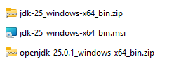
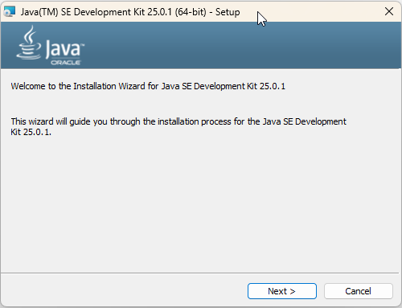
Za prevajanje izvorne kode (source code) uporabimo prevajalnik
javac. V ukazni vrstici se pomaknemo v mapo z izvorno datoteko
in vpišemo ukaz:
javac ime_programa.java
primer:
javac Naloga.java
Če prevajanje uspe, nastane ena ali več datotek s končnico .class, ki
vsebujejo vmesno kodo (ang. bytecode). Pri preprostem programu z
razredom Naloga nastane datoteka Naloga.class.
Vmesna koda je neodvisna od platforme. Isti prevedeni program lahko
zato brez ponovnega prevajanja izvajamo v različnih operacijskih
sistemih, na primer Windows, Linux in macOS, če imajo nameščen ustrezen
JVM in program ne uporablja knjižnic ali funkcij, vezanih na določeno
platformo.
Za radovedne: Zakaj Java uporablja vmesno kodo
(bytecode)?
Prenosljivost (ang. portability) – isto vmesno
kodo lahko izvajamo na različnih platformah z ustreznim JVM, brez
ponovnega prevajanja izvorne kode. Od tod načelo »piši enkrat, zaženi
povsod«.
Varnost – JVM pred izvajanjem preverja
pravilnost in skladnost vmesne kode z določenimi pravili, kar pomaga
preprečevati nekatere nevarne operacije. To še ne zagotavlja, da je
program povsem varen.
Učinkovitost – JVM lahko s prevajalnikom
JIT med izvajanjem prevede pogosto izvajane dele vmesne
kode v strojno kodo in jih optimizira.
Zagon programa
Vmesna koda (bytecode) je univerzalni strojni jezik programov java,
ki ga izvaja JVM (java virtual machine) namesto tvojega fizičnega
procesorja (CPU). JVM je del JDK paketa in se namesti avtomatsko ob
namestitvi JDK. Namen je, da so programi neodvisni od platforme (Win,
Linux, Mac).
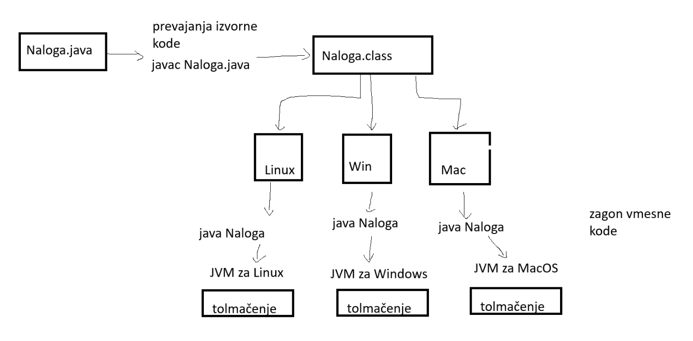
Program zaženemo z ukazom java. Končnice .class ne
napišemo:
java ime_programa
Primer:
java Naloga.java
Pri nameščanju omenjene programske opreme (JDK) moramo izbrati
različico, ki ustreza našemu operacijskemu sistemu (npr. Windows, Linux
ali macOS), saj vsaka platforma zahteva svojo prilagojeno izvedbo.
Za radovedne
Naloge JVM
naloži Java bytecode v pomnilnik,
preveri varnost in pravilnost kode,
izvede bytecode na računalniku,
upravljanje pomnilnika (garbage
collector),
omogoča, da Java programi tečejo neodvisno od
operacijskega sistema.
Kako JVM izvaja program?
JVM ima dva mehanizma za izvedbo bytecode-a:
Tolmačenje (interpreting)
JVM bere bytecode ukaz za ukaz in ga sproti izvaja.
Hitro začne delovati, a je nekoliko počasnejše kot prevajanje
vnaprej (C++).
JIT – Just-In-Time prevajanje
JVM pogosto uporabljene dele programa (t. i. “hot spots”)
prevede v strojno kodo med samim izvajanjem.
Tako postane program veliko hitrejši.
Postopek nameščanja
in nastavitve poti (PATH)
Namesti java prevajalnik in zaganjalnik (paket Java JDK) za
Windows – prenesi iz spletne strani Oracle. Prenesi 64 bitno različico
msi.
Iz poti izbriši vse vnose JDK!
Nastavi PATH – pot do java prevajalnika. Pot nastaviš nadzorna
plošča/urejanje spremenljivk okolja za svoj račun/path.
Odpreš command line (ukazni poziv). Prestaviš se v svojo mapo z
vajami. (d:\RAC\VAJA01).
Ustvariš novo datoteko naloga01.java. (notepad
naloga01.java)
Napiši prvi program v javi
Prevedi program: javac ime_programa.java. Ustvari se
datoteka class. To je vmesna koda.
Zaženi program: java ime_programa.
Kaj potrebujemo:
Urejevalnik besedila (program)
Prevajalnik za javo (program)
Zaganjalnik (program)
Napisali prvi program – tekstovna datoteka. Uporabili bomo
navadni urejevalnik besedila. Program bo napisan v PJ java.
Datoteka bo imela ime kot je ime razreda! (ali
obratno ime razreda mora biti enako kot ime datoteke)
Program (datoteko) bomo shranili v tole mapo
nekaj:\nekja\...\RAC\VAJE\VAJA06
Modri del poljuben
Rumeni del vsi enako
Ime datoteke Vaja01.java
Programi v javi imajo končnico .java
Program bomo prevedli.
Cmd (ukazna vrstica)
Postavi se v pravo mapo
Izberi pogon (Ukaz: crko_pogona:[enter])
Postavi se v korensko mapo (Ukaz: cd /[enter])
Idi v mapo (Ukaz:cd ime_mape[enter]) (mogoče boš morala ponoviti
večkrat, če imaš več pdmap)
Prevajanje poteka s programom javac (java compiler)
Ukaz: javac imeprograma.java[enter]
program se prevede v vmesno kodo (intermidiate code)
Program bomo zagnali.
Ukaz:java imeprograma (brez končnice)[enter]
Postopek za VS code
Namesti jdk na računalnik.
Najdi na spletu – JDK za windows – installer file (msi,
exe).
Shrani na ključek.
Namesti s ključka.
Napiši program v javi (VS Code)
Ime datoteke : Naloga01.java
Program naj na ekran izpiše: »Ime Priimek«. Ogrodje najdete tukaj.
Pazi na ime razreda
Prevedi program.
CMD
D: (izberi pogon)
cd / (v korensko mapo)
cd programi
cd RAC
cd vaje
cd vaja02
javac ime_programa.java (prevedi)
dir (preveri vsebino mape)
java ime_programa (zagon)
Zaženi program.
Od-namesti (uninstall jdk)
Od-inštaliraj jdk!
Najdi JRE na spletu.
Namesti JRE.
Zaženi program ponovno.
Prevedi program ponovno.
POGLAVJE 09 / 21
Sestavni deli programa java
Program v javi je sestavljen iz sledečih elementov:
ključne besede,
identifikatorji,
literali,
operatorji,
ločila,
komentarji,
izjave,
bloki kode,
razredi, metode, bloki.
1) Ključne besede (keywords)
To so rezervirane besede, ki imajo v javi poseben pomen. Ne smeš jih
uporabiti kot ime spremenljivke ali metode.
To so konstantne vrednosti, zapisane neposredno v
kodi:
številski: 10, 3.14, -5
znakovni: 'a', '\n'
nizovni: "Dober dan"
logični: true, false
null literal: null
4) Operatorji
Simboli, ki izvajajo operacije nad vrednostmi.
Matematični:
+ - * / %
Prireditveni:
=, +=, -=, *=, /=, %=
Primerjalni:
==, !=, <, >, <=, >=
Logični:
&&, ||, !
Povezovanje nizov:
+
5) Ločila (punctuation / separators)
Simboli, ki ločujejo dele kode.
Najpogostejša:
podpičje ; – konča stavek
vejice , – ločuje elemente
pika . – dostop do članov
(objekt.metoda)
oklepaji:
() za metode, pogoje
{} za bloke kode (razredi, metode, if, while)
[] za tabele
dvojni dvopičji :: – reference na
metode
dve poševnici // – komentar
6) Komentarji
Del kode, ki se ne izvede. Za razlago.
Enovrstični:
// to je komentar
Večvrstični:
/* komentar ... */
Dokumentacijski (Javadoc):
/** razlaga razreda ali metode */
7) Izjave (statements) – tudi stavki
Posamezni ukazi, ki jih Java izvede.
Primeri:
prireditev: x = 5;
pogoj: if (x > 10) {...}
zanka: for (int i=0; i<10; i++) {...}
return: return x;
8) Bloki kode
Koda v { }.
Primer:
if (a > b) {
System.out.println("A je večji");
}
9) Razredi, metode in paketi
Temeljne strukture:
paketi organizirajo datoteke (npr. package
moj.program;)
razredi so osnovni gradniki Jave
metode izvajajo funkcionalnost
Naloga: Za spodnji program zapiši osnovne elemente
programa java.
Odprta naloga – rešitev preveri sam ali z učiteljem.
import java.util.Scanner; // vključevanje razreda
class Main {
public static void main(String[] args) {
Scanner myObj = new Scanner(System.in); // izdelava objekta z imenom
myObj
System.out.print("Vpiši svoje ime:");
String ime = myObj.nextLine(); // uporaba metode
System.out.print("Vpiši svojo starost:");
byte starost = myObj.nextByte(); // uporaba metode
System.out.print("Vpiši svojo težo na eno decimalko:");
float teza = myObj.nextFloat(); // uporaba metode
myObj.nextLine();
System.out.print("Vpiši svoj spol (m/z):");
char spol = myObj.nextLine().charAt(0); // char nima svoje metode -
moramo pretvoriti String v char - 0 prvi znak v nizu
System.out.println("Ime ti je: " + ime);
if( spol == 'm')
{
System.out.println("Star si: " + starost);
System.out.println("Težek si: " + teza);
}
else
{
System.out.println("Stara si: " + starost);
System.out.println("Težka si: " + teza + "kg");
}
System.out.print("KONEC PROGRAMA!");
}
}
Rešitev:
1) Ključne besede (keywords)
Ključne besede v tem programu:
import
class
public
static
void
new
tipi: byte, float, char, String (tip je poseben primer – String
je razred, ne keyword, ampak za dijake ga navadno obravnavamo skupaj z
ostalimi tipi)
if, else
2) Identifikatorji (imena)
To so imena, ki si jih izberemo sami (ali jih je izbral nekdo v
knjižnici):
Imena razredov:
Main (tvoj razred)
Scanner (razred iz knjižnice)
Imena spremenljivk:
myObj
ime
starost
teza
spol
args (parameter metode main)
Imena metod:
main
println
print
nextLine
nextByte
nextFloat
charAt
Imena paketov (v importu):
java
util
Scanner (zadnji del importa je razred v paketu)
3) Literali
To so vrednosti, zapisane “na trdo” v kodi:
Nizovni literali (String):
"Vpiši svoje ime:"
"Vpiši svojo starost:"
"Vpiši svojo težo na eno decimalko:"
"Vpiši svoj spol (m/z):"
"Ime ti je: "
"Star si: "
"Težek si: "
"Stara si: "
"Težka si: "
"kg"
"KONEC PROGRAMA!"
Znakovni literali (char):
'm'
0 v charAt(0) je dejansko številski literal tipa
int, uporablja se kot indeks.
V tem programu ni logičnih literalov (true,
false) in ni null.
4) Operatorji
V tvojem programu nastopajo:
Prireditveni:
=
Scanner myObj = new Scanner(System.in);
String ime = myObj.nextLine();
byte starost = myObj.nextByte();
float teza = myObj.nextFloat();
char spol = myObj.nextLine().charAt(0);
Primerjalni:
==
if (spol == 'm')
Povezovanje nizov:
+
System.out.println("Ime ti je: " + ime);
System.out.println("Star si: " + starost);
System.out.println("Težka si: " + teza + "kg");
Aritmetičnih (+ - * / %) tukaj ne uporabljamo za računanje,
samo za lepljenje nizov.
5) Ločila (separators / punctuation)
Nekaj primerov iz programa:
Podpičje ; – konča izjavo:
import java.util.Scanner;
Scanner myObj = new Scanner(System.in);
Vejice , – ločujejo elemente v seznamu
parametrov:
v tem programu je nimaš, a bi jo recimo imel v metodi z več
parametri.
Pika . – dostop do članov:
System.out.println(...)
myObj.nextLine()
System.in
Oklepaji ():
pri klicu metod: main(String[] args), nextLine(), nextByte(),
charAt(0), println("...")
pri pogoju: if (spol == 'm')
Zaviti oklepaji { } – bloki:
telo razreda Main { ... }
telo metode main { ... }
telesi if { ... } in else { ... }
Oglati oklepaji []:
pri parametru String[] args – polje nizov.
Dvojni dvopičji :: in // v tem programu ne nastopata.
6) Komentarji
V tem konkretnem programu nimaš komentarjev, ampak
bi jih lahko imel, npr.:
// Uvozimo razred Scanner
import java.util.Scanner;
ali
/* Večvrstični komentar
o delovanju programa */
7) Izjave (statements)
Vsak “ukaz”, ki se izvede:
Import (na vrhu datoteke):
import java.util.Scanner;
Ustvarjanje objekta:
Scanner myObj = new Scanner(System.in);
Izpis in branje:
System.out.print("Vpiši svoje ime:");
String ime = myObj.nextLine();
System.out.print("Vpiši svojo starost:");
byte starost = myObj.nextByte();
System.out.print("Vpiši svojo težo na eno decimalko:");
float teza = myObj.nextFloat();
myObj.nextLine();
System.out.print("Vpiši svoj spol (m/z):");
char spol = myObj.nextLine().charAt(0);
Izpis:
System.out.println("Ime ti je: " + ime);
Pogojna izjava if z else:
if (spol == 'm') {
System.out.println("Star si: " + starost);
System.out.println("Težek si: " + teza);
} else {
System.out.println("Stara si: " + starost);
System.out.println("Težka si: " + teza + "kg");
}
Zadnji izpis:
System.out.print("KONEC PROGRAMA!");
Vsaka vrstica, ki se konča s ;, je izjava. if (...)
{ ... } else { ... } je sestavljena izjava s
pod-bloki.
8) Bloki kode
Blok = koda med { in }:
Blok razreda:
class Main {
// vse to je blok razreda Main
}
Blok metode main:
public static void main(String[] args) {
// celoten program tukaj
}
Blok if:
if (spol == 'm') {
System.out.println("Star si: " + starost);
System.out.println("Težek si: " + teza);
}
Blok else:
else
{
System.out.println("Stara si: " + starost);
System.out.println("Težka si: " + teza + "kg");
}
9) Razredi, metode, paketi
Paket / knjižnica:
import java.util.Scanner;
java.util je paket, kjer se nahaja razred Scanner.
Razred:
class Main {
...
}
To je tvoj glavni razred.
Metoda main:
public static void main(String[] args) {
...
}
Vhodna točka programa.
Ključne besede: public static void
Parametri: String[] args
Metode, ki jih uporabljaš:
new Scanner(System.in) – konstruktor razreda Scanner
myObj.nextLine(), myObj.nextByte(), myObj.nextFloat() – metode za
branje
myObj.nextLine().charAt(0) – najprej metoda nextLine(), nato metoda
charAt(0) na vrnjenem nizu
System.out.print(...), System.out.println(...) – metode za izpis na
zaslon
Naloga: V programu označi sestavne dele programa in
jih poimenuj.
Odprta naloga – rešitev preveri sam ali z učiteljem.
public class Main {
public static void main(String[] args) {
System.out.println("Pozdravljen!");
System.out.println("Dobrodošel v Javi.");
int a = 10;
int b = 5;
int vsota = a + b;
System.out.println("Vsota je: " + vsota);
System.out.println("Lep dan!");
}
}
POGLAVJE 10 / 21
Sintaksa in semantika in osnovna pravila
Sintaksa (syntax)
Sintaksa pomeni pravila, po katerih mora biti
koda pravilno zapisana, da jo Java lahko prevede.
Primeri pravil sintakse:
stavek mora imeti podpičje:
int x = 5;
oklepaji morajo biti pravilno zaprti:
if (x > 0) { ... }
spremenljivke se morajo deklarirati pred
uporabo:
int starost;
ime razreda mora ustrezati imenu datoteke, če je razred
public.
Kaj se zgodi, če sintaksa NI pravilna?
Java izpiše napako pri prevajanju (compile-time error), npr.:
';' expected
Sintaktične napake preprečijo, da bi izdelali vmesno kodo in da bi
program lahko zagnali.
Semantika
Semantika pomeni pomen kode – kaj program dejansko naredi, ko se
izvaja.
Gre za logiko in smisel, podobno kot pomen stavkov v naravnem
jeziku.
Primer: sintaktično pravilno, semantično napačno
int x = 10 / 0;
Sintaksa je OK (vse je pravilno zapisano).
Semantika je napačna, ker deljenje z 0 nima
smisla → med izvajanjem dobimo napako:
ArithmeticException: / by zero
Drug primer:
int starost = -5;
Sintaksa OK.
Semantično pa starost −5 nima smisla → logična napaka,
program sicer teče, a napačno.
Pri semantičnih napakah torej pride do dveh možnosti:
Program se prevede vendar ne deluje pravilno. Če nismo pazljivi,
tega sploh ne opazimo.
Program se prevede. Med izvajanjem se zaustavi in javi napako
vrste RunTimeError.
Povzetek - najkrajša razlaga
Sintaksa = “Ali je pravilno zapisano?”
Semantika = “Ali dela to, kar mora?”
Zgradba programa
Vsaka koda v Javi je zapisana znotraj razreda (ang.
class).
Če je razred public, mora imeti datoteka enako ime kot ta razred.
(Dokler ne spoznamo podrobnosti določila puiblic, bodo vsi razredi
public)
Datoteke s kodo v Javi imajo končnico .java.
Datoteka lahko vsebuje več razredov, vendar je lahko največ en
označen kot public.
Tisti public razred določa ime datoteke.
Imena razredov pišemo z veliko začetnico. ostala
pravila so enaka kot za imena spremenljivk.
public class Main {
public static void main(String[] args) {
// začetek izvajanje izvajanja programa – začetekmetodemain
System.out.println("Hello World");
// konec izvajanja programa – konecmetodemain
}
}
ime datoteke: Main.java
Osnovna pravila
izvajanja programa v javi
Program se začne izvajati v metodi main
Odprta naloga – rešitev preveri sam ali z učiteljem.
Java program se vedno začne izvajati pri tej metodi:
public static void main(String[] args)
Brez te metode se program ne zažene (razen pri posebnih primerih,
npr. JavaFX).
Izvajanje poteka od zgoraj navzdol
Odprta naloga – rešitev preveri sam ali z učiteljem.
Java izvršuje vrstice po vrsti, tako kot so
zapisane v metodi main.
Obstajajo izjeme:
pogojni stavki (if, else) lahko kakšno kodo
preskočijo,
zanke (for, while, do-while) lahko del kode
ponavljajo večkrat,
return lahko predčasno zaključi metodo.
break (prekine zanko, prekine stavek
switch)
Stavek se zaključi s podpičjem ;
Odprta naloga – rešitev preveri sam ali z učiteljem.
V Javi večina izjav (statements) konča vrstico z
;
int x = 5;
System.out.println(x);
Izjema so kontrolne strukture in bloki, ki
nimajo podpičja:
if (...) { ... }
for (...) { ... }
while (...) { ... }
definicija metode
definicija razreda
Osnovna pravila oblikovanja kode (indentacija)
Po vsakem odpiralnem zavitem oklepaju { naredimo
zamikanje v desno
Odprta naloga – rešitev preveri sam ali z učiteljem.
Primer:
if (x > 0) {
System.out.println("Pozitivno");
}
Vse vrstice znotraj bloka so zamaknjene
obvezno zamaknemo s tipko TAB (ki vstavi nevidni znak TAB ali
včasih štiri (lahko tudi dva) presledka
to izboljša berljivost in
razumevanje kode
Ko uporabimo zaključni oklepaj }, gremo z zamikom eno
stopnjo nazaj
Primer:
for (int i = 0; i < 5; i++) {
System.out.println(i);
}
System.out.println();// ← tukaj ni več zamika
POGLAVJE 11 / 21
Spremenljivke
Definicija
Spremenljivka je imenovan prostor v računalniškem pomnilniku (RAM), v
katerega program začasno shranjuje podatke (npr. števila, besede,
rezultate izračunov). Vrednost spremenljivke se lahko med izvajanjem
programa spreminja, zato ji pravimo spremenljivka.
Spremenljivke uporabimo za hranjenje vrednosti, ki jih bomo kasneje v
programu še potrebovali.
Lastnosti spremenljivke
ima ime (npr. starost, ime, vsota)
ima vrednost (npr. 15, "Ana")
ima tip podatka (npr. število, znak, besedilo
…)
vrednost se lahko spremeni
ko se vrednost spremeni, nova vrednost nadomesti staro (stara več
ni dostopna)
Zakaj uporabljamo spremenljivke?
da shranjujemo podatke med izvajanjem programa za
kasnejšo uporabo
da lahko računamo, preverjamo pogoje, prikazujemo
rezultate
da lahko program dela z različnimi podatki (vnos uporabnika,
števila, besedila)
Preprosta razlaga
Predstavljaj si spremenljivko kot škatlo z
nalepko:
nalepka = ime spremenljivke
kar je v škatli = trenutna vrednost
lahko zamenjaš vsebino, ime pa ostane isto
Deklaracija
Deklaracija spremenljivke je napoved, da bomo spremenljivko
uporabljali. Spremenljivke ne moremo uporabljati, če je
prej ne deklariramo. Spremenljivko z istim imenom lahko
deklariramo samo enkrat.
podatkovni_tip ime_spremenljivke;
primer:
int x;
String y;
byte z;
char znak1, znak2;
Naloga:
Ustvari spremenljivko za hranjenje spola (m ali ž). Spremenljivko
poimenuj spol. V spremenljivko shrani vrednost m. Izpiši vrednost
spremenljivke v tej obliki (spol=m). Enako naredi za ime razreda (3.ag)
in starost (18).
Podatkovni tip
Podatkovni tip v javi določa:
vrsto podatka (npr. celo število, realno
število, znak, besedilo ali logično vrednost), ki ga lahko shranjuje
spremenljivka
koliko pomnilnika (velikost) bo zasedel v
primarnem pomnilniku (RAM) (npr. 1B, 2B, 4B ali 8B, pri čemer je 1B = 8
bitov)
kakšne operacije lahko izvajamo nad podatki in
kaj te operacije pomenijo
Ker je java strogo tipiziran jezik (tudi »type
safety« ali »strictly typed« ), moramo ob deklaraciji vedno navesti tip
spremenljivke (npr. byte, int, char, long, float, double, boolean). Pri
nekaterih drugi programskih jezikih, to ni potrebno (PHP, python,
...)
Podatkovni tip določa tudi, kakšne operacije lahko izvajamo nad
podatki.
Primeri:
Dve celi števili: 1 + 1 = 2 (+ seštevanje)
Niz in celo število: "1" + 1 = 11 (+ dodajanje, združevanje,
concatenation)
Dve celi števili: 1/2 = 0 (/ celoštevilsko deljenje)
Realno število in celo število: 1.0/2 = 0.5 (/ realno številsko
deljenje)
Prav tako opisuje način fizičnega shranjevanja
podatkov v pomnilniku, kar omogoča optimizirano porabo pomnilnika ter
učinkovito delovanje programa.
Zakaj so podatkovni tipi pomembni?
java preveri pravilnost programiranja že ob prevajanju
program je bolj varen, hitrejši
in pregleden
varuje pred napakami, kot je seštevanje besedil (napaka)
Skupine podatkovnih tipov
Podatkovne tipe v Javi lahko razdelimo v dve glavni skupini, ki se
razlikujeta po načinu shranjevanja, delovanju in uporabi:
primitivni (primitive data type)
referenčni (reference or non-primitive data
tpye)
Primitivni podatkovni tipi
To so osnovni, vnaprej določeni tipi, ki jih pozna
java.
Lastnosti:
imena se začnejo z malo črko (int, char, ...)
shranjujejo enostavne vrednosti
velikost v pomnilniku je fiksna
ne vsebujejo metod
vrednosti se shranjujejo direktno v pomnilnik
(ne kot objekti)
so hitrejši
Tip
Velikost v pomnilniku (byte)
Pomen
Primer
byte
1
celo število (-128 do 127)
byte a = 10;
short
2
manjše celo število
short s = 300;
int
4
standardno celo število
int x = 1000;
long
8
veliko celo število
long velik = 100000L;
float
4
decimalno število (manj natančno)
float f = 3.14f;
double
8
decimalno število (bolj natančno)
double d = 3.141592;
char
2
en znak
char c = 'A';
boolean
1bit
logična vrednost (true/false)
boolean b = true;
Naloga: Izračunaj, katere vrednosti lahko shrani
short. Koliko je teh vrednosti in kater so? Prikaži postopek
računanja!
Odprta naloga – rešitev preveri sam ali z učiteljem.
Razlaga:
Short 2 B = 16b -> 1bit za predznak, 15 bitov za število
2na 15 = 32678
-32678 …0 … 32677
Naloga: Izračunaj, katere vrednosti lahko shrani
byte. Koliko je teh vrednosti in kater so? Prikaži postopek
računanja!
Odprta naloga – rešitev preveri sam ali z učiteljem.
Razlaga: 1B = 8bit
1bit predznak
7bit stevilo
2na7 = 128 na pozitini in negatvni strani + nula (0)
-128 ...0 ... 127
Za radovedne
Naloga: Kaj pa float - realnoštevilski podatkovni
tipi
V enem stavku, lahko deklariramo in/ali inicializiramo več
spremenljivk naenkrat. Ločimo jih z vejico.
int x = 5, y, z = 50;
Pravila poimenovanje spremenljivk:
Imena lahko vsebujejo: črke, številke, podčrtaj, dolar.
Ime se mora začeti s črko ali podčrtajem ali dolarjem.
Ime ne sem vsebovati presledka.
Imena so »case sensitive«. Stevilo, stevilo, STEVILO so različne
spremenljivke.
Ime ne sme biti rezervirana beseda (int, byte, for, while, if,
…).
Imena spremenljivk morajo biti unikatna. Dve
spremenljivki ne smeta imeti istega imena.
Primeri pravilnega poimenovanja:
Person
AccountDetails
_$Order (though $ as a starting character is not
recommended)
Customer_123
Primeri NE-pravilnega poimenovanja:
1Person (zečne se s števko)
class (rezervirana beseda java)
Customer-Info (vsebuje pomišljaj)
Uporabimo stil »camelCase«:
firstName
totalPrice
studentAge
Izogibamo se okrajšavam ali nerazumljivim imenom, da je koda bolj
berljiva in vzdrževana.
Konstantna spremenljivka
Konstantna spremenljivka je primitivna spremenljivka, katere vrednost
programer ali uporabnik ne more spremeniti, ko je enkrat določena.
final int PI = 3.14;
PI = 5; // ne gre – konstante spremenljivke ne moremo spreminjati, ko
enkrat ime vrednost,
Imena konstantnih spremenljivk navadno pišemo s samimi velikimi
črkami.
Literali
Literali v javi so neposredno zapisane
vrednosti v programu. To so stalne, fiksne vrednosti, ki jih
zapišemo kar v kodo, brez izračuna ali spremenljivk.
Vprašanje: Zakaj je pri char lahko '\n'? To
NI-sta dva znaka!
Odprta naloga – rešitev preveri sam ali z učiteljem.
Odg: Obstajajo posebni znaki.
Zapis
Pomen
'\n'
Nova vrstica
'\t'
Tabulator (presledek)
'\b'
Brisanje znaka (backspace)
'\r'
Vrnitev na začetek vrstice
'\''
Enojni narekovaj '
'\"'
Dvojni narekovaj "
'\\'
Poševnica nazaj \
Doseg spremenljivke(scope)
Doseg spremenljivke (tudi veljavnost ali ang. scope) pomeni, v
katerem delu programa je spremenljivka dosegljiva (vidna) in jo lahko
uporabljamo.
Spremenljivka je dosegljiva samo v območju, kjer jo deklariramo.
Območje ali programski blok (ang. block of code) je območje med zavitimi
oklepaji { }.
Blok kode lahko stoji samostojno ali pa je del stavka
if, else, while,
do while, for, switch.
Primer1:
public class Main
{ // ZAČETEK BLOKA 1
public static void main(String[] args)
{ // ZAČETEK BLOKA 2
int x = 100;
x = x + 10;
System.out.println(x);
} // KONEC BLOKA 2
} // KONEC BLOKA 1
Primer 2:
public class Main
{
public static void main(String[] args)
{
// Tukaj NE moremo uporabljati spremenljivke x
{ // Začetek bloka 3
// Tukaj NE moremo uporabljati spremenljivke x
int x = 100; // deklaracija spremenljivke
// Tukaj LAHKO uporabljamo spremenljivko x
System.out.println(x);
} // Konec bloka 3
// Tukaj NE moremo uporabljati spremenljivke x
}
}
Komentar: Spremenljivke, ki so deklarirane znotraj bloka kode, so
dostopne samo v kodi med zavitimi oklepaji in šele po vrstici, v kateri
je bila spremenljivka deklarirana.
Primer 3:
import java.util.Scanner;
public class zankaDo
{
public static void main(String[] args)
{
Scanner scn = new Scanner(System.in);
int vsota = 0;
do
{
System.out.print("Vnesi število:");
int vnos = scn.nextInt();
vsota = vsota + vnos;
}
while( vnos != 0); // spremenljivka vnos tukaj NE moremo uporabljati
System.out.println("Vsota števil je " + vsota + ".");
}
}
Komentar: Spremenljivka vnos je veljavna samo do konca
bloka, v katerem je deklarirana. Pogoj zanke do while se preverja izven
bloka, zato spremenljivka ni dosegljiva in program javi napako: cannot
find symbol (ali podobno).
Kje se hranijo vrednosti, ki jih shranimo v spremenljivke?
v primarnem pomnilniku (RAM)
na trajni pomnilniški enoti (SSD, HDD)
na tračni enoti
predpomnilniku (Cache)
Koliko vrednosti lahko naenkrat shranimo v primitivno spremenljivko
(npr.: int)?
0
1
2
več (odvisno od prostora v RAMu)
Kaj predstavlja pojem deklaracija?
Določanje začetne vrednosti spremenljivke
Brisanje spremenljivke
Ustvarjanje spremenljivke
Spreminjanje vrednosti spremenljivke
Kako se pravilno deklarira spremenljivka za cela števila?
int c;
c int;
int = c;
c = int;
V spremenljivko podatkovne tipa int lahko shranimo.
vsa cela števila
samo določena cela pozitivna števila
samo določena cela negativna in pozitivna števila
samo določena realna negativna in pozitivna števila
Uredi po podatkovne tipe po velikosti, ki jo zasede v pomnilniku.
Najprej tiste z najmanj.
byte, int, short, long
long, short, byte, int
byte, short, int, long
short, byte, int, long
Katera vrstica prevede program nal.java?
compile nal.java
java nal.java
comp nala.java
javac nal.java
javac nal
Označi napake za program, ki je shranjen v datoteki Naloga.java!
public class Vaja {
System.out.println("Hello World!")
public static void main(String[] args) {
system.out.println("I am learning Java.");
x int;
x = 3
char x;
x = c;
}
}
Pretvarjanje med tipi (type casting)
Pretvorba tipa (angl. Type casting) je
postopek, pri katerem vrednost enega primitivnega podatkovnega tipa
dodeliš drugemu tipu.
Kaj?
Primer:
int x1 = 9; //
byte y1 = x1; // dela? (DA/NE) ZAKAJ?
x1 -> y1 TA – x1 je večja »vedro«, y1 pa je manjše »vedro«, lahko
prek teče? DA
Y1 -> x1
byte x2 = 9;
int y2 = x2 // dela? ZAKAJ? X2 (manjša) -> y2 (večja) - OK
Širjenje - Widening Casting
Widening Casting (automatically) - converting a
smaller type to a larger type size (pretvarjanje manjšega tipa v
večjega
byte -> short -> char -> int -> long -> float ->
double
Ožanje - Narrowing Casting (manually) - converting a
larger type to a smaller size type (pretvajanje večjega v
manjšega)
double -> float -> long -> int -> char -> short ->
byte
Naloga: Kaj vse lahko napišemo na mesto vprašaja?
Odprta naloga – rešitev preveri sam ali z učiteljem.
double x = 9.1;
int y = ( ? )x; // lossy conversion
Odg: int, byte, short, char
Casting
Casting in Java is the process of converting one data type
into another.
public static void main(String[] args) {
int x = 1;
int y = 2;
// kolicnik_i = x / y; // 1/2=0.5
float kolicnik_f = x / (float)y ;
//System.out.println(kolicnik_i);
System.out.println(kolicnik_f);
// operator / ima več različic (isto je z nekaterimi drugimi
operatorji)
// vsak / ni /
// / = /
// 1. / operator za celoštevisko deljenje (ko sta obe št. int)
// 2. / operator za realnoštevilsko deljenje (ko je vsaj en operand
(število) float)
// kako naredimo operand iz int v float
// a) množimo z float primer: x *1.0f
// b) eksplicitna pretvorba tipa (casting) (novi tip)ime_spremenljike
primer: (float)x
String prvi = "Danes";
String drugi = "Jurti";
System.out.println(prvi + drugi + 1 + 2 ); // Error??
System.out.println( 1 + 2 + prvi + drugi );
char c = 'a';
// kateri je najmanjši celoštevilski podatkovni tip?
byte i_b = 123;
short i_s = 312;
int i_i = 312;
long i_l = 312;
i_b = (byte)i_s; // eksplicitno pretvorimo v prmeren tip - PAZI -
lahko so nepričakovni rezultati
//i_b = i_s; // napak, ker je i_s "večji" podatkovni tip
//i_s = i_b; // nič ne izgubimo, nikoli, v nobenem primeru in
GRE!
//System.out.println(i_b);
char ch = 'a';
char ch_1 = 91;
ch++;
//ch_1++;
System.out.println(ch);
}
Dodatno interaktivno preverjanje
POGLAVJE 12 / 21
Operatorji
Aritmetični: +, -, *, /, %, ++, --
Primerjalni <, >, <=,>=, !=, ==
Logični: &&, ||, ! (|| - altGr W)
Prirejanje: =, +=, -=, *=, /=, %=
Prirejanje
Operatorji prirejanje v javi so (=; +=, -=, /=, *=, %= - »hitri«
operatorji prirejanja)
Navadno prirejanje (assignment) =.
Kako deluje? Izraz na desni strani operatorja se izračuna (ovrednoti;
izvede). Dobljena vrednost se shrani v spremenljivko na levi strani
operatorja.
Primer 1:
x = 1;
Postopek:
Celo število 1 se shrani v spremenljivko x.
Primer 2:
x = 4 + y*(3 + z);
Postopek:
Izračuna se 4 + y*(3 + z);
rezultat se shrani v spremenljivko x
Primer 3:
x = scn.nextInt();
Postopek:
Program se ustavi (ukaz scn.nextInt()). Uporabnik preko
tipkovnice vpiše poljubno vrednost in pritisne enter.
Če je vpisana vrednost celo število, se to število shrani v
spremenljivko x.
Če vpisana vrednost ni celo število, program javi napako in se
zaustavi.
Več o ostalih operatorjih prirejanja kasneje.
Aritmetični
Aritmetični operatorji v Javi so:
+ - * / % ++ --
Njihova uporaba je odvisna od podatkovnega tipa, nad
katerim jih izvajamo.
1) Celoštevilski tipi
byte, short, int, long
Kako delujejo?
Vse operacije se izvedejo kot celoštevilske.
Pri deljenju / rezultat nikoli ni decimalen,
ampak se decimalni del odreže (truncation).
Presežki (overflow) se ne javijo kot napaka, ampak se vrednost
“prelije”.
Primeri
int a = 7 / 2; // 3
int b = 10 % 3; // 1
int c = 2147483647;
System.out.println(b); // 2147483647
b++;
System.out.println(b); // -2147483648
2) Decimalni tipi
float, double
Kako delujejo?
Operacije se izvedejo kot realna
(floating-point) aritmetika.
/ vrne decimalno vrednost.
% je dovoljen in vrne preostanek pri deljenju z
decimalkami.
Zaradi IEEE 754 standarda lahko pride do majhnih
zaokrožitvenih napak.
Primeri
double x = 7.0 / 2; // 3.5
float y = 5.5f % 2; // 1.5
3) Znakovni tip
char
Kako delujejo?
char se pri aritmetiki pretvori v svoj Unicode številčni
zapis.
Operacije vrnejo int, razen če rezultat pretvorimo
nazaj.
Primeri
char a = 'A'; // 65 v Unicode
char b = 'C'; // 67
int razlika = b - a; // 2
char naslednji = (char) ('A' + 1); // 'B'
// (char) - eksplicitna pretvorba – kasneje bolj natančno
4) Logični tip
boolean
Aritmetični operatorji se NE smejo uporabljati nad
boolean!
+ - * / % ++ -- → niso dovoljeni, povzročijo napako
pri prevajanju.
Nizi znakov
String
Posebnost
Operator + deluje kot združevanje
(konkatenacija).
Pri operaciji String + karkoli se drugi operand pretvori v
niz.
TABELA: Vloga aritmetičnih operatorjev po podatkovnih
tipih
Podatkovni tip
+
-
*
/
%
++ / --
Posebnosti
byte
✔️
✔️
✔️
✔️ celoštevilsko
✔️
✔️
Pretvori se v int
short
✔️
✔️
✔️
✔️
✔️
✔️
Pretvori se v int
int
✔️
✔️
✔️
✔️
✔️
✔️
Standardna celoštevilska aritmetika
long
✔️
✔️
✔️
✔️
✔️
✔️
Možen overflow
float
✔️
✔️
✔️
✔️ decimalno
✔️
✔️
Zaokrožitvene napake
double
✔️
✔️
✔️
✔️
✔️
✔️
Največja natančnost (a še vedno floating-point)
char
✔️ (kot int)
✔️
✔️
✔️
✔️
✔️
Pretvorba v Unicode številko
boolean
❌
❌
❌
❌
❌
❌
Aritmetika ni dovoljena
String
✔️ konkatenacija
❌
❌
❌
❌
❌
Samo + je dovoljen
Hitri operatorji prirejanja
x 😁= y ~ ( x = x 😁 y)
😁 predstavlja poljubni operator (+,-,/,*,%)
primera:
x += y ~ x = x + y
x /= z–5*(w+1) ~ x = x /(z-5*(w+1))
Operator inkrement in dekrement (++,--)
Namenjena krajšemu zapisu. Poveča vrednost spremenljivke za 1.
++x (poveča x za 1) – prefixni – najprej poveča x in nato izvede
stavek (npr. izpiše)
x++ (poveča x za 1) – postfixni – najprej izvede stavek (npr. izpiše)
in nato poveča
Primer:
int x = 1; //
System.out.print(x+1); // izpiše 2, spr. x se ne spremeni
System.out.print(x); // izpiše 1
x++; // x se poveča za 1 -> v x je shr. 2
x=x+1; // x se poveča za 1 -> v x je shr. 3
System.out.print(x++); // izpiše 3, nato se x poveča za 1, x je 4
System.out.print(++x); // x se poveča za 1, x je 5, izpiše se 5
System.out.print(x); // izpiše se 5
Opozorilo:
Podobno kot x = x + 1, vendar pri nekaterih tipih ni treba uporabiti
širjenja (ožanja) – casting. Več o tem kasneje.
Primerjalni
(==, !=, <, <=, >, >=)
V programiranju se primerjalni operatorji
uporabljajo za primerjavo dveh vrednosti ali dveh spremenljivk.
Rezultat primerjalne operacije je vedno logična
vrednost (true ali false).
Uporablja se v krmiljenju programov (pogojni stavki,
zanke).
»Obnašanje« teh operatorjev se lahko razlikuje glede na
podatkovne tipe, ki jih primerjamo.
Tukaj je podrobna razlaga za različne podatkovne
tipe:
Cela števila
Operator
Primer
==
5 == 5 → true
'r' == 'f' -> false
!=
5 != 10 → true
<
3 < 5 → true
>
10 > 7 → true
<=
4 <= 4 → true
>=
8 >=6 → true
Realna števila
Primerjava med realnimi števili (float in double) lahko povzroči
nepričakovane rezultate zaradi »težav« z natančnostjo (npr. 0.1 + 0.2 ==
0.3 => false).
Operatorja == in != ima drugačen pomen. Ne primerjata stringov temveč
reference (String ni primitivni podatkovni tip)!
Stringe bolj pogosto primerjamo z metodami
equals in podobnimi.
Primer:
System.out.println("test" == "test"); // true
System.out.println("Test" == "test"); // false
String a = "test";
String b = "test";
Uporablja se za združevanje dveh ali več logičnih izrazov ali
vrednosti.
Vrnejo logično vrednosti (true ali false).
Večinoma se uporabljajo v pogojnih stavkih in zankah.
Primer:
Če je vpisana ocena večja ali enaka 1 in manjša ali
enaka 5, vpiši v redovalnico.
if( ocena >= 1 && ocena <= 5)
vpisiVRedovalnico(ocena)
Logični AND (&&) se uporablja, kadar morajo
biti vsi pogoji izpolnjeni.
Opis: Vrednost je true samo, če sta oba
operanda true.
Uporaba: Pogosto uporabljen, kadar morajo biti
izpolnjeni vsi pogoji.
Primer: Geslo mora imeti vsaj 5 znakov
in vsaj dve črki in vsaj eno ne črko
in eno številko
Operand 1
Operand 2
Rezultat (op1&& op2)
true
true
true
true
false
false
false
true
false
false
false
false
public class LogicalAndExample {
public static void main(String[] args) {
int a = 5;
int b = 10;
if (a > 0 && b > 0) {
System.out.println("Obe števili sta pozitivni.");
}
}
}
// Izhod: Obe števili sta pozitivni.
Logični OR (||)
Opis: Vrednost je true, če je vsaj en
operand true.
Uporaba: Pogosto uporabljen, kadar je dovolj, da
je izpolnjen le en pogoj.
op1
op2
Rezultat (op1|| op2)
true
true
true
true
false
true
false
true
true
false
false
false
public class LogicalOrExample {
public static void main(String[] args) {
int a = -5;
int b = 10;
if (a > 0 || b > 0) {
System.out.println("Vsaj eno število je pozitivno.");
}
}
}
// Izhod: Vsaj eno število je pozitivno.
Logični NOT (!)
Opis: Negira logično vrednost. Če je vrednost
true, vrne false in obratno.
Uporaba: Pogosto uporabljen za obrat
pogojev.
Operand
Rezultat (!operand)
true
false
false
true
public class LogicalNotExample {
public static void main(String[] args) {
boolean isActive = false;
if (!isActive) {
System.out.println("Sistem ni aktiven.");
}
}
}
// Izhod: Sistem ni aktiven.
Kratko stikanje (Short-Circuiting)
Logična operatorja && in || v Javi sta kratkostična
operatorja, kar pomeni:
Za &&: Če je prvi pogoj false, se drugi pogoj ne
preverja, ker rezultat ne more biti true.
Za ||: Če je prvi pogoj true, se drugi pogoj ne
preverja, ker rezultat ne more biti false.
public class ShortCircuitingExample {
public static void main(String[] args) {
int x = 5;
if (x > 0 || ++x > 5) { // Drugi pogoj se ne preverja
System.out.println("Prišlo je do kratkega stikanja.");
}
System.out.println(x); // Izhod: 5 (x se ne poveča)
}
}
De Morganova zakona
De Morganov zakon v pogojnih stavkih se uporablja za preoblikovanje
logičnih izrazov. V bistvu gre za pravilo, ki olajša delo z negacijami
kompleksnih logičnih izrazov. Ta zakon pravi, da lahko negacijo
kombinacije izrazov preoblikujemo z uporabo nasprotnih operatorjev in
negacije posameznih izrazov.
De Morganova zakona
Negacija logičnega AND (&&):
Negacija kombinacije z AND je enaka logični OR negacij posameznih
pogojev.
Pravilo: !(A && B) je logično enak zapis
kot (!A) || (!B)
Primer v Javi:
if (!(x > 0 && y > 0)) ...
// Enako kot:
if (!(x > 0) || !(y > 0)) ...
// Enako kot
if ( x <= 0 || y <= 0 ) ...
Negacija logičnega OR (||):
Negacija kombinacije z OR (!(A || B)) je enaka logičnemu AND
negacij posameznih pogojev.
Pravilo: !(A || B) ) je logično enak zapis kot
(!A) && (!B)
if (!(x > 0 || y > 0)) ...
// Enako kot:
if (!(x > 0) && !(y > 0 ) ...
// Enako kot:
if (x <= 0 && y <= 0) ...
Pomen De Morganovih zakonov
Poenostavljanje pogojev: Z uporabo De Morganovih
zakonov lahko kompleksne pogoje preoblikujemo v lažje razumljive
izraze.
Izogibanje napakam: V kombinaciji z logičnimi
negacijami so preoblikovani pogoji pogosto jasnejši in manj nagnjeni k
napakam.
Izboljšana berljivost kode: Čeprav sta oba
izraza funkcionalno enaka, je pogosto eden lažje razumljiv kot
drugi.
Primer praktične uporabe
Pred preoblikovanjem:
if (!(age > 18 || hasLicense)) {
System.out.println("Ne sme voziti.");
}
Po preoblikovanju z De Morganovim zakonom:
if (age <= 18 && !hasLicense) {
System.out.println("Ne sme voziti.");
}
Tabela: Zanikanje primerjalnih operatorjev
Izraz
Pomen
Zanikan izraz
Pomen
x > y
x je večji od y
x <= y
x ni večji od y
x >= y
x je večji ali enak y
x < y
x je strogo manjši od y
x < y
x je manjši od y
x >= y
x ni manjši od y
x <= y
x je manjši ali enak y
x > y
x je strogo večji od y
x == y
x je enak y
x != y
x ni enak y
x != y
x ni enak y
x == y
x je enak y
Prioriteta
operatorjev (prednost operatorjev v Javi )
V programskem jeziku Java imajo operatorji
različno prednost izvajanja. To pomeni, da se nekateri
deli izraza izvedejo prej kot drugi.
Operatorji, ki imajo višjo prednost, se izvedejo
najprej. Operatorji, ki so v tabeli (spodaj) zapisani
višje, imajo večjo prednost kot tisti spodaj. Če sta
operatorja v isti vrstici, imata enako
prednost.
Kadar ima več operatorjev enako prednost, velja
pravilo:
večina operatorjev se izvaja z leve proti
desni,
operatorji prirejanja (npr. =) pa se izvajajo
z desne proti levi.
Zato je pomembno, da pri zapletenih izrazih:
poznamo prednost operatorjev,
po potrebi uporabimo oklepaje, da jasno določimo
vrstni red izvajanja.
Operators
Precedence
Associativity
[]() .
left to right
postfix
expr++ expr--
right to left
unary
++expr --expr +expr -expr ~ !
right to left
(type cast), new
right to left
multiplicative
* / %
left to right
additive
+ -
left to right
shift
<< >> >>>
left to right
relational
< > <= >= instanceof
left to right
equality
== !=
left to right
bitwise AND
&
left to right
bitwise exclusive OR
^
left to right
bitwise inclusive OR
|
left to right
logical AND
&&
left to right
logical OR
||
left to right
ternary
? :
right to left
assignment
= += -= *= /= %= &= ^= |= <<= >>= >>>=
right to left
Kratek primer
int x = 2 + 3 * 4;
Rezultat bo:
x = 14
Ker ima * višjo prednost kot +. (* je višje v tabeli kot + ; glej
tabelo)
Če dodamo oklepaje:
int x = (2 + 3) * 4;
Dobimo:
x = 20
Ker ima ( prednost pred *. ( ( Je višje v tabeli kot *; glej
tabelo);
Dodatno interaktivno preverjanje
POGLAVJE 13 / 21
Izpis na ekran
Za izpis na ekran uporabljamo ukaze:
System.out.print(nekaj)
System.out.println()
System.out.println(nekaj)
V javi lahko z metodama print in
println izpišemo veliko več kot samo spremenljivke ali
literale. Izpisujemo lahko vse, kar se lahko pretvori v
besedilni niz (String).
System.out.println("Star si " + starost + " let.");
Formatiran izpis (printf)(druga
metoda)
System.out.printf("%.2f", 3.14159);
Razlika: print vs println
Metoda
Kaj naredi
print()
izpiše brez preskoka vrstice
println()
izpiše in gre v novo vrstico
Primer:
System.out.print("A");
System.out.print("B");
System.out.println("C");
System.out.print("D");
Izpis:
ABC
D
Posebni znaki (escape sequences)
Z print/println lahko izpišemo tudi posebne znake:
Zapis
Izpiše
\n
nova vrstica
\t
tabulator
\"
narekovaj
\\
poševnica
Primer:
System.out.println("Ime:\t\"Ana\"");
POGLAVJE 14 / 21
Branje vrednosti iz tipkovnice (user input)
Razred Scanner je namenjen branju uporabniškega vnosa.
Nahaja se v paketu z imenom java.util. Ta paket moramo vključiti na
začetku programa. Še pred definicijo razreda. Za vključevanje uporabimo
ključno besedo import.
Če želimo uporabiti razred Scanner, moramo najprej ustvariti objekt
in nato uporabimo primerno metodo odvisno, ali bomo brali cela števila,
realna števila, niz, ... Če bomo brali cela števila, bomo uporabili
metodo nextInt, če realna števila nextFloat, če besedilo nextLine …
Metode, ki jih lahko uporabimo:
Ime metode
Opis
nextBoolean()
Prebere vrednost boolean
nextByte()
Prebere vrednost byte
nextDouble()
Prebere vrednost double
nextFloat()
Prebere vrednost float
nextInt()
Prebere vrednost int
nextLine()
Prebere vrednost String
nextLong()
Prebere vrednost a long
nextShort()
Prebere vrednost a short
Naloga:
Napiši program, kjer uporabnik vnese svoje podatke )ime, starost,
teža, spol. Nato sledi izpis glede na spol.
Odprta naloga – rešitev preveri sam ali z učiteljem.
import java.util.Scanner; // vključevanje razreda
class Main {
public static void main(String[] args) {
Scanner myObj = new Scanner(System.in); // izdelava objekta z imenom
myObj
System.out.print("Vpiši svoje ime:");
String ime = myObj.nextLine(); // uporaba metode
System.out.print("Vpiši svojo starost:");
byte starost = myObj.nextByte(); // uporaba metode
System.out.print("Vpiši svojo težo na eno decimalko:");
float teza = myObj.nextFloat(); // uporaba metode
myObj.nextLine(); // počisti ENTER (\n) iz bufferja
System.out.print("Vpiši svoj spol (m/z):");
char spol = myObj.nextLine().charAt(0); // char nima svoje metode -
moramo pretvoriti String v char - 0 prvi znak v nizu
System.out.println("Ime ti je: " + ime);
if( spol == 'm')
{
System.out.println("Star si: " + starost);
System.out.println("Težek si: " + teza);
}
else
{
System.out.println("Stara si: " + starost);
System.out.println("Težka si: " + teza + "kg");
}
System.out.print("KONEC PROGRAMA!");
}
}
D.N.: Doma dokončaj in preizkusi!
POZOR:
Če stavkom next() ali nextNEKAJ() sledi stavek nextLine(), moramo
pred nextLine dodati še (prazen) stavek nextLine(). (glej primer
zgoraj)
Za radovedne
Ko uporabiš nextByte() ali nextFloat(), v bufferju ostane
znak za ENTER (\n).
Ko nato pokličeš nextLine(), ta takoj prebere ta preostanek, zato
preskoči vnos spola in prikaže napako.
POGLAVJE 15 / 21
Krmilni stavki
Krmilni stavki (ang. control statements) so stavki v programskem
jeziku java, s katerimi nadzorujemo potek izvajanja programa. Omogočajo
nam, da program ne teče samo od zgoraj navzdol, temveč lahko določene
stavke:
ponavljamo ali
preskočimo.
Ponavljanje in/ali preskakovanje je odvisno od pogojev, ki so
del krmilnih stavkov in jih programer zapiše v programsko kodo
v za to predviden prostor.
Stavkom, ki izvedejo samo določen del kode, pravimo pogojni
stavki.
Stavkom, ki ponavljajo določen del kode pravimo
zanke.
Pogojni stavki
If
If – else
switch case
Stavek if
Stavki1
if( pogoj )
{
Stavki2
}
Stavki3
Stavki1
if( pogoj )
Stavek
Stavki3
int starost = 7;
System.out.print("ZAČETEK");
if( starost >= 18)
{
System.out.println("Polnoleten dijak");
}
System.out.print("KONEC");
int starost = 7;
System.out.print("ZAČETEK");
if( starost >= 18)
System.out.print("Polnoleten");
System.out.print("KONEC");
int starost = 7;
System.out.print("ZAČETEK");
if( starost >= 18) System.out.print("Polnoleten");
System.out.print("KONEC");
[nariši diagram poteka]
Stavki1 in stavki3 se izvedejo vedno, stavki 2 pa samo takrat, ko
je pogoj resničen (true).
Če je v stavki2 samo en stavek, oklepajev ne rabimo
pisati.
Stavek if-else
Stavki1
if( pogoj )
{
Stavki2
}
else
{
Stavki3
}
Stavki4
Stavki1
if( pogoj )
Stavek2
else
Stavek3
Stavki4
ali
if(pogoj) Stavek2
else Stavek3
int starost = 7;
System.out.print("ZAČETEK");
if( starost >= 18)
{
System.out.println("Polnoleten dijak");
}
else
{
System.out.print("Ne-polnoleten ");
System.out.println("dijak ");
}
System.out.print("KONEC");
int starost = 7;
System.out.print("ZAČETEK");
if( starost >= 18)
System.out.print("Polnoleten");
else
{
System.out.print("Ne-polnoleten ");
System.out.println("dijak ");
}
System.out.print("KONEC");
[nariši diagram poteka]
Stavka else ne more biti brez stavka if.
Primer:
if (ocena == 1)
System.out.println("nzd");
else if (ocena == 2)
System.out.println("zd");
else if (ocena == 3)
System.out.println("db");
else if (ocena == 4)
System.out.println("pd");
else if (ocena == 5)
System.out.println("odl");
else
System.out.println("napaka");
// NAROBE – ZAKAJ???
if (ocena == 1)
System.out.println("nzd");
if (ocena == 2)
System.out.println("zd");
if (ocena == 3)
System.out.println("db");
if (ocena == 4)
System.out.println("pd");
if (ocena == 5)
System.out.println("odl");
else
System.out.println("napaka");
if (ocena == 1)
System.out.println("nzd");
else
{
if (ocena == 2)
System.out.println("zd");
else
{
if (ocena == 3)
System.out.println("db");
else
{
if (ocena == 4)
System.out.println("pd");
else
{
if (ocena == 5)
System.out.println("odl");
else
System.out.println("napaka");
}
}
}
}
Stavek switch
Namesto pisanja številnih stavkov if..else lahko v nekaterih primerih
uporabimo stavek switch.
Predstavljamo si ga lahko kot naročanje hrane v restavraciji:
Če izbereš številko 1, dobiš pico.
Če izbereš 2, dobiš burger.
Če izbereš 3, dobiš testenine.
V nasprotnem primeru ne dobiš ničesar.
Stavek switch lahko nadomesti if-else takrat, ko v pogojnem stavku
uporabljamo operator je enako (==). Ne moremo pa gu uporabiti v
primerih, ko bi želeli nadomestiti ostale primerjalne ali logične
operatorje (<, >, ||, ...).
Stavek switch izbere enega izmed več blokov kode, ki se nato
izvede.
Sintaksa stavka switch:
switch(izraz)
{
case x:
// stavki 1 (blok kode)
break;
case y:
// stavki 2 (blok kode)
break;
...
default:
// stavki 3
break;
}
Tako deluje:
Izraz v switch se ovrednoti samo enkrat. (izraz je lahko
računska
Rezultat se primerja z vsako vrednostjo case. (primerjava je
lahko samo ==, ne pa tudi <, >, <=, >=, !=)
Če se katera ujema, se izvede ustrezni blok kode.
break zaustavi izvajanje switch po izvedenem ujemajočem se
primeru.
če stavkom ne sledi break, se izvede naslednji primer (case),
brez primerjave
default se izvede, če ni nobenega ujemanja
primer switch:
import java.util.Scanner;
public class Restavracija
{
public static void main(String[] args)
{
Scanner sc = new Scanner(System.in);
System.out.print("Izberi številko (1–3): ");
int izbira = sc.nextInt();
switch (izbira)
{
case 1:
System.out.println("Dobiš pico.");
break;
case 2:
System.out.println("Dobiš burger.");
break;
case 3:
System.out.println("Dobiš testenine.");
break;
default:
System.out.println("Ne dobiš ničesar.");
break;
}
sc.close();
}
}
enak primer s if-else:
import java.util.Scanner;
public class Restavracija
{
public static void main(String[] args)
{
Scanner sc = new Scanner(System.in);
System.out.print("Izberi številko (1–3): ");
int izbira = sc.nextInt();
if(izbira == 1)
{
System.out.println("Dobiš pico.");
}
else if(izbira == 2)
{
System.out.println("Dobiš burger.");
}
else if(izbira == 3)
{
System.out.println("Dobiš testenine.");
}
else
{
System.out.println("Ne dobiš ničesar.");
}
sc.close();
}
}
public static void main(String[] args)
{
Scanner sc = new Scanner(System.in);
System.out.print("Izberi spol (m/ž):");
// preberemo besedilo in ga pretvorimo v znak
char izbira = sc.nextLine().charAt(0);
switch(izbira)
{
case 'm':
System.out.println("Vaš spol je moški.");
break;
case 'ž':
System.out.println("Vaš spol je ženski");
break;
default:
System.out.println("Napačen vnos");
break;
}
sc.close();
}
public static void main(String[] args)
{
Scanner sc = new Scanner(System.in);
switch(izbira)
{
case 'm':
System.out.println("Vaš spol je moški.");
break;
case 'M':
System.out.println("Vaš spol je moški.");
break;
case 'ž':
System.out.println("Vaš spol je ženski");
break;
case 'Ž':
System.out.println("Vaš spol je ženski");
break;
default:
System.out.println("Napačen vnos");
break;
}
sc.close();
}
public static void main(String[] args)
{
Scanner sc = new Scanner(System.in);
switch(izbira)
{
case 'm':
case 'M':
System.out.println("Vaš spol je moški.");
break;
case 'ž':
case 'Ž':
System.out.println("Vaš spol je ženski");
break;
default:
System.out.println("Napačen vnos");
break;
}
sc.close();
}
Komentar:
Spremenljivka izbira se primerja z vrednostmi m ali ž. Težava
nastopi, če uporabnik vpiše veliko črko M. TO lahko rešimo na različne
načine. Lahko bi vpisano črko pretvorili v malo črko, mi pa bomo v
naslednjem primeru naredili primerjavo z malo in veliko črko.
Komentar:
Komentar:
Naloga:
Starost = 5
18
60
90
1
import java.util.Scanner;
2
3
public class StarostniPreverjanje {
4
public static void main(String[] args) {
5
Scanner sc = new Scanner(System.in);
X
x
x
X
6
7
System.out.print("Vnesite svojo starost: ");
X
x
x
X
8
int starost = sc.nextInt();
x
x
x
X
9
10
if (starost < 18) {
x
x
x
x
11
System.out.println("Oseba je mlajša od 18 let.");
12
}
13
else {
X
X
X
14
if (starost >= 65) {
X
X
X
15
System.out.println("Oseba je upokojenec.");
X
16
}
X
17
else {
X
X
18
System.out.println("Oseba je odrasla oseba.");
X
X
19
}
X
X
20
}
X
X
X
21
}
X
X
X
22
}
x
X
X
Preštej, koliko blokov kode je v programu.
Označi začetke in konce posameznih blokov, ki pripadajo pogojnim
stavkom.
Zapiši številke vrstic, ki se izvedejo, če uporabnik vpiše 5, 18,
60, 90. Pri vsaki možnosti tudi zabeleži izpis in vrednosti
spremenljivk.
Koliko stavkov vsebuje prvi in drugi else stavek?
Okrajšaj (izbriši oklepaj {}) vse pogojne stavke, ki vsebujejo
samo en stavek.
Odprta naloga – rešitev preveri sam ali z učiteljem.
Komentarji:
Program se začne izvajati v metodi main
Programski stavki se izvajajo en za drugim (navzdol)
Pri pogojnem stavku if, se izvedejo vsi stavki v bloku, ki sledi,
ampak samo, če je pogoj resničen.
Če pogoj v stavku ni resničen, se izvedejo stavki v bloku, ki
sledi delu else.
Dodatno interaktivno preverjanje
POGLAVJE 16 / 21
Zanke
Zanka je programska struktura, ki omogoča večkratno izvajanje istega
dela kode. Izvajanje zanke je odvisno od pogoja, ki je del zanke.
Navadno se koda v zanki izvaja, ko je pogoj resničen (true).
Zanke uporabljamo vedno, ko želimo, da se del programa ponovi
večkrat, brez da bi morali isti ukaz pisati znova in znova. Gre za eno
najpomembnejših orodij v programiranju.
Ker je število ponovitev neke programske kode pogosto odvisno od
zunanjih dejavnikov (uporabnik, naključne, izračun, ...), je nemogoče
pisati programe brez uporabe zank.
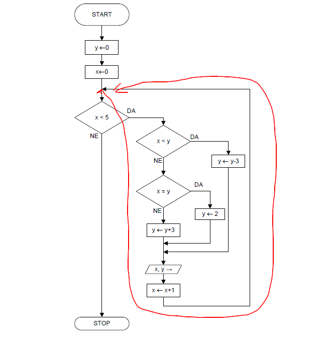
Slika 1: Zanka. Program se lahko vrne v točko, kjer je že bil.
Vrste zank
Spoznali bomo tri ključne besede v javi, ki omogočajo, da izbrane
ukaze izvajamo večkrat zaporedoma. Tem stavkom pravimo zanke. Stavki
so:
while
do – while
for
Omenjene zanke so si zelo podobne v tem, da ponavljajo kodo v
telesu zanke, dokler je pogoj resničen
(true). Ko pogoj postane neresničen, se izvajanje kode nadaljuje
po telesu zanke.
Stavka while in for pogoj preverita
preden se izvede telo. Tako da je mogoče, da se telo
zanke sploh ne izvede.
Staevek do-while pa najprej izvede telo
zanke (vsaj enkrat) in šele nato preveri pogoj. Na sliki zgoraj imamo
primer zanke, ki bi ga lahko implementirali (zapišemo) z zanko for ali
while. Primer spodaj prikazuje zanko, ki jo lahko implementiramo z zanko
do—while.
Slika 2: Zanka. Implementiramo jo lahko s stavkom do - while
Zanka while
Sintaksa
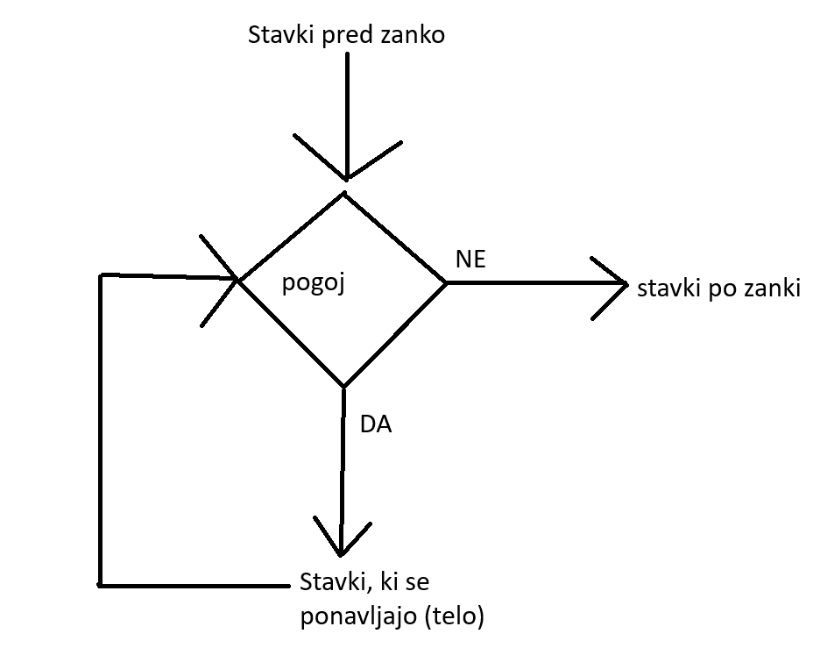
primer:
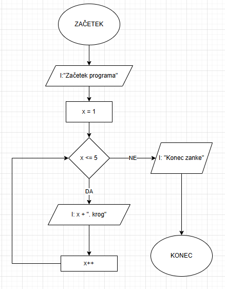
stavki pred zanko
while(pogoj)
{
telo zanke (stavki v zanki)
}
stavki po zanki
stavki pred zanko
while(pogoj)
telo zanke (stavek v zanki)
stavki po zanki
Primer programa, ki je prikazan z diagramom poteka desno
zgoraj:
public class Oper
{
public static void main(String[] args)
{
System.out.println("Začetek programa!");
int x = 1;
while( x <= 5)
{
System.out.println(x + ". krog");
x++;
}
System.out.println("Konec zanke");
}
}
Primera:
System.out.println("Začetek programa!");
int y= 1;
while( y <= 5)
System.out.println(y++ + ". krog");
System.out.println("Konec zanke.");
ali
System.out.println("Začetek programa!");
int y= 1;
while( y <= 5) System.out.println(y++ + ". krog");
System.out.println("Konec zanke.");
Izpis:
Začetek programa!
1. krog
2. krog
3. krog
4. krog
5. krog
Konec zanke.
Izpis:
Začetek programa!
1. krog
2. krog
3. krog
4. krog
5. krog
Konec zanke.
Pri vseh treh vrstah zank običajno uporabljamo
števec (pomožno spremenljivko), ki nam omogoča, da se
ukazi v telesu zanke izvedejo natanko tolikokrat, kot želimo.
Števcu pred začetkom zanke določimo začetno vrednost.
Zanko oblikujemo tako, da se v pogoju sklicujemo na ta isti
števec.
V telesu zanke števec spreminjamo (najpogosteje povečujemo ali
zmanjšujemo), da pogoj čez čas postane neveljaven (false) – s tem se
zanka pravilno zaključi in program nadaljuje izvajanje izven
zanke.
Komentar diagrama poteka (zgoraj):
z zeleno barvo je prikazan števec
z rdečo barno je prikazan stavek, ki želimo da se
ponavlja
z vijolično barvo je prikazano, da mora biti pogoj izpolnjen
(true), da se zanka izvaja
Pogoste napake:
Neskončna zanka. Pogoj se nikoli ne spremeni
int i = 1;
while (i <= 5)
{
System.out.println(i);
// i++; manjka sprememba spremenljivke
}
Pogoj se nikoli ne izpolni. Telo se nikoli ne izvede.
int i = 10;
while (i < 5)
{
...
}
Pogoj se napačno spremeni.
int i = 1;
while (i <= 5)
{
System.out.println(i);
i -= 1; // spremenljivka gre v napačno smer
}
Napačno postavljeno podpičje. Telo zanke je prazno.
int i = 1;
while (i <= 5);
{
System.out.println(i);
i -= 1; // spremenljivka gre v napačno smer
}
Negacija pogoja pri zankah
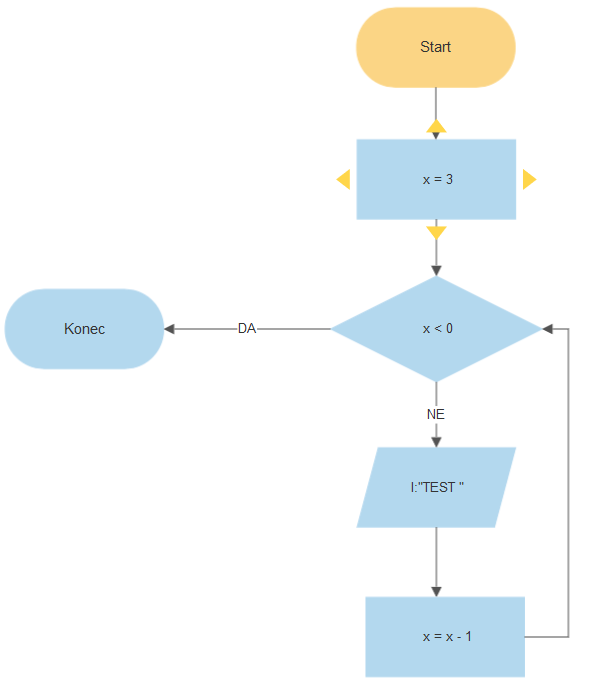
Kolikokrat se izvede zanka (kolikokrat se izpiše
TEST in kolikokrat se spremeni spremenljivka x)?
Napišimo sled programa!
x
3
2
1
0
-1
pogoj
NE
NE
NE
NE
DA
izpis
TEST
TEST
TEST
TEST
Zanka se izvede 4 krat! (4 x se izpiše TEST in 4 x se spremeni
spremenljivka x - PAZI 4 x se spremeni vrednost spremenljivke, prva
sprememba v vrednost 3ni narejena v zanki, ampak pred njo!).
Sedaj pretvorimo diagram poteka v programski jezik
java!
Začnimo:
class Program {
public static void main (String avgs[]) {
int x = 3;
// TUKAJ PA NASTANE TEŽAVA
}
Zanke v javi se izvajajo, ko je pogoj izpolnjen (true - DA), va našem
diagramu pa se zanka izvaja, ko ni izpolnjen (false - NE). Če želimo
napisati program v javi, moramo diagram poteka spremeniti tako, da
zamenjamo DA in NE. Ko to naredimo, moramo spemeniti tudi pogoj. To
naredimo tako, da ga negiramo. To pomeni, da damo pred izraz negacijo
(!).
V primeru zgoraj bi to izgledalo tako:
original pogoj: x < 0
negiran pogoj: !(x<0) - glej
In to je to :).
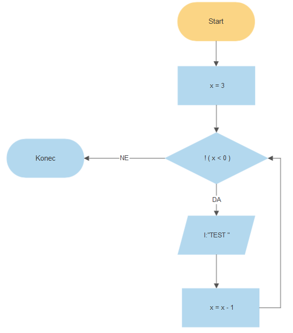
Napišemo torej ta program:
public static void main(String[] args) {
int x = 3;
while( ! ( x < 0 ) )
{
System.out.print("TEST ");
x = x - 1;
}
}
Napišimo sled programa sedaj!
x
3
2
1
0
-1
pogoj
DA
DA
DA
DA
NE
izpis
TEST
TEST
TEST
TEST
Ugotovimo, da je pogoj ravno nasproten od prejšnjega. Temu se reče
negacija.
Res. Program je identičen. Zanka se izvede 4 x.
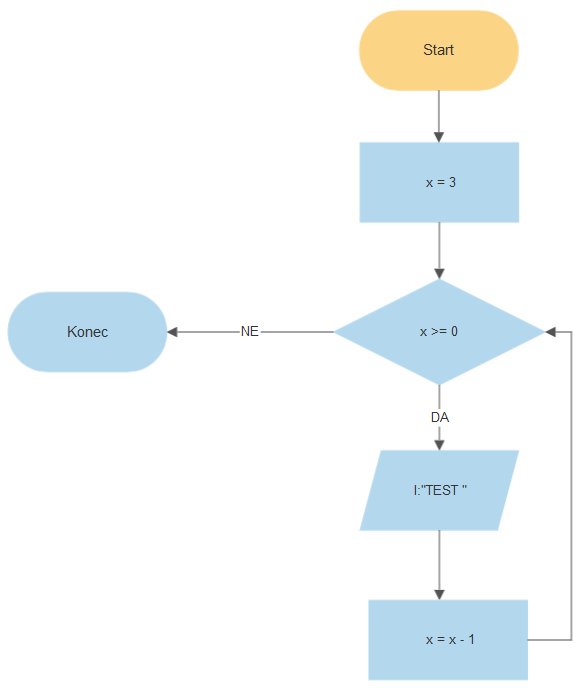
Pogoji, ki imajo na začetku negacijo, lahko zapišemo
drugače, v bolj razumljivi obliki.
V našem primeru to pomeni:
! ( x < 0 ) -> razmišljamo tako: če x ni manjši od
0 potem je x večji ali enak 0
Odprta naloga – rešitev preveri sam ali z učiteljem.
Zanka do - while
Sintaksa
stavki pred zanko
do
{
telo zanke (stavki v zanki)
}
while(pogoj);
stavki po zanki
stavki pred zanko
do
telo zanke (stavek v zanki)
while(pogoj);
stavki po zanki
Primer:
public class Oper
{
public static void main(String[] args)
{
System.out.println("Začetek programa!");
int i = 0;
do {
System.out.println( i + 1 + ". D");
i++;
}
while( i < 10);
System.out.println("Konec zanke");
}
}
Primera:
System.out.println("Začetek programa!");
int y= 1;
while( y <= 5)
System.out.println(y++ + ". krog");
System.out.println("Konec zanke.");
ali
System.out.println("Začetek programa!");
int i = 0;
do
System.out.println(++i + ". D");
while( i < 10);
System.out.println("Konec zanke.");
Izpis:
ZAČETEK
1. D
2. D
3. D
4. D
5. D
Konec zanke
Izpis:
ZAČETEK
1. D
2. D
3. D
4. D
5. D
Konec zanke
Telo zanke do – while se vedno izvede vsaj enkrat, ne glede
na to, ali je pogoj izpolnjen ali ne. Paziti moramo, da naredimo
podpičje po stavku while. Pri zanki while tega nismo
smeli napisati!
Kdaj uporabljamo do-while?
1. Ko mora uporabnik nekaj vnesti vsaj enkrat.
Primer: vedno najprej pokažemo meni, potem preverimo, ali želi
uporabnik nadaljevati.
2. Ko želimo, da se neko dejanje izvede vsaj enkrat, nato pa se po
potrebi ponavlja.
Primer: izpis besedila, nato vprašanje "Ali želiš ponoviti?"
3. Ko preverjamo pogoj, ki je lahko izpolnjen šele po prvem izvajanju
zanke
Primer: program ne more vedeti, ali je vnos pravilen, dokler ga ne
prebere vsaj enkrat.
Naloga: Napiši program, kjer uporabnik vnaša cela
števila tako dolgo, dokler ne vnese števila 0. Program izpiše, koliko
števil si vpisal.
Odprta naloga – rešitev preveri sam ali z učiteljem.
Naloga: Napiši program, ki prebere število med 1 in
10. Če št. ni med mejama, uporabnik vpiše ponovno. Najprej diagram
poteka, nato program v javi.
Odprta naloga – rešitev preveri sam ali z učiteljem.
Primer:
Vpiši št: -5
Število ni med 1 in 10.
Vpiši št: 15
Število ni med 1 in 10.
Vpiši št.: 7
Število je med 1 in 10. Hvala.
Naloga:
Napiši program, ki z uporabo zanke while izpiše številke od 1 do 10
na zaslon.
Odprta naloga – rešitev preveri sam ali z učiteljem.
1, 2, 3, 4, 5, 6, 7, 8, 9, 10.
byte i = 1;
while( true )
{
System.out.print(i);
if( i == 10)
{
break;
}
System.out.print(", ");
i++;
}
System.out.print(".");
for( byte i = 1 ; true ; i++)
{
sout(i);
if( i == 10)
{
break;
}
sout(", ");
}
sout(".");
Stavek break
Stavek break takoj prekine izvajanje najbližje zanke (while, do
while, for) ali switch bloka. Program nadaljuje z naslednjo vrstico
izven te strukture.
Kdaj uporabimo?
Ko želimo predčasno ustaviti zanko. Na primer ko najdemo iskano
vrednost.
Preprečimo fall-through v stavku switch.
Izboljšati učinkovitost, da ne izvajaš nepotrebnih iteracij
(prehodov čez zanko), ko veš da so nepotrebni.
Stavek continue
Zanka for
UČNA URA: ZANKA for (vir: chatGPT - vprašanje:
Napiši učno uro o zanki for. Zakaj jo uporabiti, če pa že poznamo whie
in do-while. Kaj je pomembno. Kako se uporabi. Nekaj pogostih
napak.)
UČNA URA: ZANKA for
1. Kaj je zanka for
Zanka for je programska struktura, ki omogoča
večkratno ponavljanje kode, kadar
vemo, kolikokrat se mora koda izvesti.
Uporablja se predvsem takrat, ko:
štejemo ponovitve,
delamo z zaporedji števil,
prehajamo po poljih, seznamih, tabelah,
izvajamo enak postopek n-krat.
2. Zakaj for, če že poznamo while in do-while?
Vse tri zanke so funkcionalno enakovredne, vendar
imajo različno vlogo:
Zanka
Kdaj jo uporabimo
while
Ko ne vemo, kolikokrat se bo zanka izvedla
do-while
Ko se mora koda izvesti vsaj enkrat
for
Ko vemo, kolikokrat se bo zanka izvedla
Zakaj je for boljša izbira v določenih primerih?
bolj pregledna
vse, kar je povezano s ponavljanjem, je na enem
mestu
manj možnosti za napake (npr. pozabljeno povečanje
števca)
Primer:
for (int i = 1; i <= 10; i++) {
System.out.println(i);
}
Enostavno je razvidno:
kje se začne,
do kam gre,
kako se spreminja števec.
3. Zgradba zanke for
for (inicializacija; pogoj; korak) {
// telo zanke
}
Pomen posameznih delov:
Inicializacija
izvede se enkrat na začetku
običajno deklaracija števca
int i = 0;
Pogoj
preveri se pred vsako ponovitvijo
če je pogoj false, se zanka konča
Korak
izvede se po vsaki ponovitvi
spreminja števec (i++, i--, i += 2 …)
4. Kako se zanka for izvaja (korak za korakom)
Primer:
for (int i = 1; i <= 3; i++) {
System.out.println(i);
}
Potek:
i = 1
preveri: i <= 3 → true
izvede telo → izpiše 1
i++ → i = 2
preveri: i <= 3 → true
izvede telo → izpiše 2
i++ → i = 3
preveri: i <= 3 → true
izvede telo → izpiše 3
i++ → i = 4
preveri: i <= 3 → false → konec
5. Primeri uporabe
Izpis 10 zvezdic
for (int i = 0; i < 10; i++) {
System.out.print("*");
}
Izpis sodih števil od 2 do 20
for (int i = 2; i <= 20; i += 2) {
System.out.println(i);
}
Štetje nazaj
for (int i = 10; i >= 1; i--) {
System.out.println(i);
}
6. Pomembne lastnosti zanke for
števec (i) običajno velja samo znotraj
zanke
lahko imamo tudi več spremenljivk
for (int i = 0, j = 10; i < j; i++, j--) {
System.out.println(i + " " + j);
}
deli zanke so opcijski, vendar morajo biti
podpičja
for (;;) {
// neskončna zanka
}
7. Pogoste napake pri zanki for
Napačen pogoj (off-by-one napaka)
for (int i = 0; i <= 10; i++) // 11 ponovitev
Namesto:
for (int i = 0; i < 10; i++) // 10 ponovitev
Pozabljen korak → neskončna zanka
for (int i = 0; i < 10; ) {
System.out.println(i);
}
Napačna smer štetja
for (int i = 10; i < 1; i--) {
// nikoli se ne izvede
}
Spreminjanje števca znotraj telesa
for (int i = 0; i < 10; i++) {
i++; // zmeda, preskakovanje vrednosti
}
poraba = namesto ==
for (int i = 0; i = 10; i++) // napaka
8.Kdaj izbrati for, kdaj while?
Uporabi for, kadar:
veš število ponovitev
uporabljaš števec
prehajaš po zaporedju
Uporabi while, kadar:
ponavljanje temelji na dogodku ali vnosu
število ponovitev ni znano
9.Povzetek
for je najbolj pregledna zanka za znano število
ponovitev
vsebuje inicializacijo, pogoj in korak
zmanjša možnost napak
zelo pogosta v praksi (polja, seznami, algoritmi)
Naloga: Naredi isto z zanko for.
Odprta naloga – rešitev preveri sam ali z učiteljem.
Vprašanje: Kolikokrat najmanj je izvede zanka for
(while)?
Odprta naloga – rešitev preveri sam ali z učiteljem.
Lahko se tudi ne izvede . 0 - krat.
Naloga: Napiši program, ki izpiše vse številke od 1
do 100, ki so deljive s 3, 5 ali obema. Program naj izpiše te številke
na zaslon, vsako v novi vrstici.
Odprta naloga – rešitev preveri sam ali z učiteljem.
for( int i = 0 ; i < 100 ; i++ )
if( i % 3 == 0 ||i % 5 == 0)
System.out.print(i);
Domača naloga. Prepiši tekst iz W3schools o zanki for. Odsek za
sintakso.
Naloga: Izpiši števila 1000, 998, …, 2, 0.
Odprta naloga – rešitev preveri sam ali z učiteljem.
for( int i = 1000 ; i >= 0 ; i-= 2 )
// napačno : i - 2
System.out.print(i);
Naloga: Spremeni stavek for iz prejšnje naloge v
while.
Odprta naloga – rešitev preveri sam ali z učiteljem.
for( int i = 1000 ; i >= 0 ; i-= 2 )
System.out.print(i);
Da ne pozabimo. Dosegljivost spremenljivke.
Spremenljivka obstaja (je dosegljiva) samo znotraj bloka, kjer je
deklarirana. Izven pa ne. Blok je del kode, ovit z zavitim oklepajem. {}
. Izjema je stavek for brez oklepajev – kjer se ponavlja samo en
stavek.
{
for( int i = 1000 ; i >= 0 ; i-= 2 )
{
System.out.print(i);
}
sout(i); // NAPAKA: i ni dosegljiv – ne obstaja
}
{
int i;
for( i = 1000 ; i >= 0 ; i-= 2 )
{
System.out.print(i);
}
sout(i); // NI več napake: i JE dosegljiv – ne obstaja
}
Naloga: Uporabnik vpiše število. Izpiše se toliko
zvezdic. V eni vrstici.
Odprta naloga – rešitev preveri sam ali z učiteljem.
Primer:
Vpiši število: 5
*****
Rešitev:
Scanner my_obj = new Scanner(System.in);
//System.out.print("Vpiši št.:");
int i = 6; // my_obj.nextInt();
for( ; i > 0 ; i-- )
{
System.out.print("*");
}
Naloga: Uporabnik vpiše dve števili. Izpiše se
pravokotnik iz zvezdic.
Odprta naloga – rešitev preveri sam ali z učiteljem.
Vpiši št. 1:5
Vpiši št. 2:3
*****
*****
*****
int x = 3;
int y = 2;
int a = 0;
for(int z = 0 ; z < y ; a++)
{
if( a == x)
{
a = 0;
System.out.println();
z++;
}
System.out.print("*");
}
// Šta.: POPRAVI
// Vsi ostali: slabo!!!!
D.N.: Doma sledi algoritmu.
Naloga: Spremeni program tako, da dobimo vedno
kvadrat.
Odprta naloga – rešitev preveri sam ali z učiteljem.
Naloga: Uporabnik vpše eno število, izpišeta se dva
trikotnika.
Odprta naloga – rešitev preveri sam ali z učiteljem.
Primer:
Vp. št. : 3
*
**
***
*
**
***
D.N.: Spremeni zanke for v while.
Naloga: Izpiši 17 naključnih števil med -6 in 4.
Uporabi zanko for.
Odprta naloga – rešitev preveri sam ali z učiteljem.
Pomoč:
import java.util.Random;
Random a = new Random();
a.nextInt(10); // vrne naklj. št. Med 0 in 9 (zgornje meje ni
zraven)
Random a = new Random();
a.nextInt(10); // vrne naklj. št. Med 0 in 9
min -6
max 4
Formula:
Min (od): 1
Max (do): 5
a.nextInt(max – min + 1) + min
preizkus: a.nextInt(5-1+1) + 1
import java.util.Random;
public class Main
{
public static void main(String[] args) {
Random a = new Random();
for( int x = 0 ; x < 17; x++ )
{
System.out.println( a.nextInt(11) - 6 );
}
}
}
Naloga: Prejšnjo nalogo dopolni tako, da boš izpisal
najmanjše število. Obenem vsako število izpiši, da lahko preverimo
pravilnost programa.
Odprta naloga – rešitev preveri sam ali z učiteljem.
4
1
3
-2
5
Min : -2
Kako to naredimo. Zapiši algoritem. Brez programiranja! Zamisli si,
da imaš 124121422 števil.
Maramo pogledati vsako število? Ko pogledamo (če je večje, si ga ne
zapomnimo, če pa je manjše, pa si ga zapomnimo. Zapomnimo si samo eno
število. Kje začnemo? Kaj bo v tem »zapomnjenjem« številu na
začetku?
Naključna števila
Min
3
3 (ko si prvo število izmislimo, je to najmanjše, preverjamo pa ne s
prejšnjim)
4
6
-2
-2
3
public static void main(String[] args) {
Random a = new Random();
int stevilo;
int min = a.nextInt(11) - 6;
System.out.println(min); // samo prvo
for( int x = 1 ; x < 5; x++ )
{
stevilo = a.nextInt(11) - 6; // 2
if( stevilo < min )
min = stevilo;
System.out.println(stevilo );
}
System.out.println("najmanjše je :" + min );
}
D.N. : Napiši in preizkusi program, ki izpiše števila od 1, 2, 3.. do
10. Uporabi zank do - while.
Zanka v zanki (ugnezdena
zanka)
Cilji
Dijaki:
razumejo, kaj pomeni zanka v zanki,
znajo razložiti potek izvajanja,
znajo napisati enostaven program z ugnezdeno
zanko,
znajo narisati izpis programa.
Izziv
Napiši program, kjer uporabnik vpiše obe stranici pravokotnika (a,b).
Nato nariši pravokotnik iz zvezdic.
Primer 1:
Primer 2:
Primer 3:
Primer 4:
Vnesi a: 5
Vnesi b: 2
*****
*****
Vnesi a: 3
Vnesi b: 7
***
***
***
***
***
Vnesi a: 8
Vnesi b: 1
********
Vnesi a: 0
Vnesi b: 1
Razdelili bomo nalogo na podprobleme in nato podprobleme sestavili v
celoto (princip deli in vladaj).
Najprej bomo narisali črto iz zvezdic (a).
Izpis sporočila za vnos
Branje a
Izpis zvezdice (a - krat) – Razmisli, katera zanka bi bila
primerna?
Nato bomo naredili novo vrstico.
Nato bomo zgornji del kode večkrat ponovili (b).
Zgornji program ponovimo b krat
import java.util.Scanner;
public class BranjeTipkovnica {
public static void main(String[] args)
{
Scanner scn = new Scanner(System.in);
System.out.print("Vnesi a: ");
int a = scn.nextInt();
int i = 0;
while(i < a)
{
System.out.print("*");
i++;
}
}
}
System.out.print();
int j = 0;
while(j < a)
{
// SEM pride celotna zgoraj napisan koda
j++;
}
System.out.print("Vnesi a: ");
int a = scn.nextInt();
System.out.print("Vnesi b: ");
int b = scn.nextInt();
int j = 0; // ZAČETEK ZUNANJE ZANKE
while(j < b)
{
// ZAČETEK notranje zanke
int i = 0;
while(i < a)
{
System.out.print("*");
i++;
}
System.out.println();
// KONEC NOTRANJE ZANKE
j++;
} // KONEC ZUNANJE ZANKE
Razlaga
Zanka v zanki je sestavljena iz zunanje zanke in
notranje zanke.
Zunanja zanka določa, kolikokrat se bo izvedla notranja
zanka.
Vsaka zanka mora imeti svoje spremenljivke za
štetje ponovitev zanke (npr.: zunanja x , notranja pa y).
Spremenljivke notranje in zunanje so lahko tudi soodvisne
(primer: izris trikotnika iz zvezdic)
Za notranjo in zunanjo zanko lahko uporabimo poljubno zanko
(while, do-while, for).
Vzorec zanke v zanki z zanko while
int j = 0;
while( j < ? )
{
int i = 0;
while(i < ? )
{
// Stavki ki se ponavljajo
i++;
}
j++;
}
import java.util.Scanner;
public class BranjeTipkovnica {
public static void main(String[] args)
{
Scanner scn = new Scanner(System.in);
System.out.print("Vnesi a: ");
int a = scn.nextInt();
System.out.print("Vnesi b: ");
int b = scn.nextInt();
int i = 0;
while(i < a)
{
System.out.print("*");
i++;
}
int j = 0;
while( j < b)
{
// Kaj bomo ponavljali
j++;
}
}
}
Kdaj uporabljamo zanko v zanki?
Če ima naloga “vrstice in stolpce” ali “vsak z vsakim”, potrebuješ
zanko v zanki.
Zanko v zanki (ugnezdeno zanko) uporabljamo:
Ko imamo opravilo, ki se ponavlja v dveh (ali več) dimenzijah –
torej ponavljanje znotraj ponavljanja
Ko ena naloga vsebuje več pod-nalog (Primer: teden → dnevi,
razredi → učenci, testi → vprašanj)
Ko primerjamo vsak element z vsakim
Če moramo narisati tabelo,
šahovnico, zvezdice v vrsticah, ali
urnik.
Če moramo izračunati poštevanko.
Tipične napake
notranja in zunanja zanka uporabljata iste spremenljivke
Če je prvi izpis pričakovan, je drugi nenavaden. V drugem primeru
izpišemo naslov (ang. reference) v pomnilniku. Pri vseh referenčnih
tipih se v spremenljivki hrani naslov v pomnilniku (RAM), kjer so
dejansko shranjeni podatki.
"primitivni" podatkovni tip (ang. primitivne)
referenčni podatkovni tipi (ang. reference)
byte
short
int
long
float
double
char
boolean
String
Array
Random
Scanner
Object
Če želimo dostopati do elementa polja, moramo do njega dostopati
drugače. Dodati moramo številko indeksa.
Indeks je zaporedna številka, ki pove, na katerem mestu v polju
se nahaja element polja.
Indeks napišemo v oglati oklepaj.
Prvi indeks je 0.
Primer:
System.out.println(ocene[0]); // 1. mesto v
polju
System.out.println(ocene[3]); // 4. mesto v
polju
System.out.println(ocene[5]); // 5. mesto v
polju (tega elementa NI)
Izpis:
4
2
Exception in thread "main"
java.lang.ArrayIndexOutOfBoundsException: Index 5 out of bounds for
length 5
Skica polja ocene kot tabela:
indeks
0
1
2
3
4
vrednost
4
5
4
2
3
Ključne lastnosti polj
Fiksna dolžina: Velikost polja je določena ob
njegovi inicializaciji in se med izvajanjem programa ne more
spreminjati.
Homogenost: Vsi elementi v polju so istega
podatkovnega tipa.
Indeksiranje: Do elementov polja lahko dostopamo
z uporabo indeksov, ki začnejo pri 0.
Privzete vrednosti: Če začetne vrednosti ne
določimo, so privzete vrednosti 0 in null pri Stringu.
Deklaracija in
inicializacija polj
Deklaracija
podatkovni_tip [] ime_spremenljivke;
ali
podatkovni_tip ime_spremenljivke[];
Primer:
float [] temperature; // deklaracija polja realnih vrednosti z imenom
temperature - velikost še ni določena
Inicializacija
ime_spremenljivke = new podatkovni_tip[velikost_polja];
Velikost polja mora biti celo število;
Primer:
temperature = new float[30]; // polje za 30 realno številskih
vrednosti. Vrednosti v polju so 0,0.
Lahko napišemo tudi v enem stavku
float [] nekaj = new float[30];
Še ena deklaracija (če poznamo vrednosti pri
deklaraciji)
int a = ocene.length; // zapišemo ime polja, piko in besedo length (v
primeru vrednost 5)
Pogoste napake
int [] a = new int[10];
a[1]; // ni prvi element
int b[];
b[0] = 10; // pozabljena inicializacija
String [] c = {"ena","dva",3,'4'}; // mešanje podatkovnih
tipov
Delo s polji
Za sprehod skozi polje uporabimo zanko. Najbolj pogosto for. Začetno
vrednost nastavimo na 0, zadnja vrednost je vedno za ena manj kot
velikost polja. Števec povečujemo za ena.
int a [] = {10,9,5,7};
int i = 0;
while(i < a.length)
{
System.out.println(a[i] + " ");
i++;
}
int a [] = {10,9,5,7};
for (int i = 0; i < a.length; i++)
{
System.out.println(a[i] + " ");
}
Izpis
10 9 5 7
Ideja: Vse ostane isto razen indeksa. Indeks pa
a[0]
a[1]
a[2]
a[3]
a[4]
Ponovimo:
Inicializacija polja
public static void main(String[] args) {
// 1
char [] a = new char[5];
A) Spremenljivko, ki hrani en podatek
B) Spremenljivko, ki hrani več vrednosti različnih tipov
C) Spremenljivko, ki hrani več vrednosti istega tipa
D) Primitivno spremenljivko
2 Kako pravilno deklariramo in inicializiramo tabelo celih
števil v Javi?
A) int t;
B) int t[] = new int;
C) int[] t = new int[5];
D) int t = new int[5];
E) int t[] = new int[5];
2a Kako zaradi lažje predstave in dela narišemo
polje?
A) z valjem
B) s kvadrom
C) s tabelo
D) s krogom
E) s škatlo
3 Kakšen je indeks prvega elementa v tabeli?
A) 1
B) 0
C) -1
D) Odvisno od velikosti tabele
4 Kaj vrne izraz t.length?
A) Zadnji indeks tabele t
B) Število elementov v tabeli t
C) Največjo vrednost v tabeli t
D) Velikost tabele t v bajtih
5 Kaj se zgodi, če dostopamo do elementa izven meja
tabele?
A) Program se normalno izvede
B) Java vrne vrednost 0
C) Pojavi se napaka med prevajanjem
D) Pojavi se ArrayIndexOutOfBoundsException
6 Kaj pomeni, da ima tabela v Javi fiksno
velikost?
_______________________________________
7 Kako dostopamo do tretjega elementa v tabeli int[]
a?
_______________________________________
8 Kakšna je privzeta vrednost elementov v tabeli tipa
int?
_______________________________________
9 Napiši en razlog, zakaj so tabele uporabne v
programiranju.
_______________________________________
10 Katero zanko najpogosteje uporabljamo za pregled vseh
elementov tabele?
_______________________________________
11 Napiši sled programa. Beleži vrednost spremenljivk in
izpis!
public class Polja3 {
public static void main(String[] args) {
float pol [] = new float[7];
pol[1]=7;
pol[2]=-1;
pol[4]=1.2f;
pol[6]=-10f;
12 Polje z imenom kocke velikosti 1000 napolni z naključnimi
števili med 1 in 6. Izpiši celotno polje.
Naloge:
Ustvari polje 5 celih števil. Polje imenuj p1. Vstavi števila
1,6,5,3,2. V tem vrstnem redu.
Odprta naloga – rešitev preveri sam ali z učiteljem.
p1
0
1
2
3
4
1
6
5
3
2
Prva možnost
int [] p1 = new int[5];
p1[0] = 1;
p1[1] = 6;
p1[2] = 5;
p1[3] = 3;
p1[4] = 2;
Druga možnost
int [] p1 = {1,6,5,3,2};
Ustvari polje za 3 imena sošolcev. Polje imenuj p2. V novi
vrstici jih shrani v polje. Enega po enega.
Odprta naloga – rešitev preveri sam ali z učiteljem.
p2
0
1
2
"Peter"
"Pia"
"Maja"
Izpiši na ekran vse vrednosti iz polja p2. Ne uporabi zanke.
Uporabi samo en stavek.
Izpiši na ekran vse vrednosti iz polja p1. Uporabi zanko
for.
Iz polja p1 izpiši samo števila deljiva s 3. Uporabi zank
while.
Ustvari polje p3 za 200 števil. V polje vstavi naključna števila
med -50 in -40.
Odprta naloga – rešitev preveri sam ali z učiteljem.
Dvodimenzionalna polja
(tabele, matrike)
Izgled dvodimenzionalnega
polja
Dvodimenzionalno tabelo si lahko predstavljamo kot tabelo s stolpci
in vrsticami. Spodnja tabele velikosti 3x3 hrani cela števila.
Predstavlja stanje v igri križec - krožec (tic-tac-toe), kjer igrata dva
igralca. Vrednost 0 predstavlja, da v celici še ni vpisano nič. Število
1 predstavlja krožec, število 2 križec.
0
0
0
0
0
0
0
0
0
0
1
0
0
0
0
0
0
0
0
1
0
2
0
0
0
0
0
0
1
1
2
2
2
0
0
1
začetno stanje
igralec 1 začel
igralec 2 nadaljeval
igralca 2 zmaga
Uporaba
Deklaracija
a)
podatkovni_tip [][] ime_spremenljivke = new
podatkovni_tip[vel1][vel2];
b)
podatkovni_tip [][] ime_spremenljivke =
ime_spremenljivke = new podatkovni_tip[vel1][vel2];
podatkovni_tip ime_spremenljivke[][] = new
podatkovni_tip[vel1][vel2];
Razlaga:
število zaprtih oklepajev pomeni število dimenzij
[]pomeni eno dimenzijo
[][] pomeni dve dimenziji
[][][] pomeni tri dimenzije
vel1...velikost prve dimenzije
vel2...velikost druge dimenzije
Opomba:
Število dimenzij pri PJ java ni teoretično omejeno, je pa
praktično na 255.
več kot dve dimenziji težko narišemo
več kot tri dimenzije si težko predstavljamo (tudi narišemo
težko)
a)
int [][] polje1 = new int[4][3];
0
0
0
0
0
0
0
0
0
0
0
0
b)
float [][] polje2;
polje2 = new float[2][2];
0.0f
0.0f
0.0f
0.0f
c)
double [][] polje3 = {{6,1,2},{-2,8,4}};
6
1
2
-2
8
4
d)
String polje4 [][] = new String[3][2];
null
null
null
null
null
null
Risba
int [][] p2D_1 = new int[2][3];
skica polja p2D_1 (polje se inicializira z vrednostmi 0)
0
1
2
0
0
0
0
1
0
0
0
Opomba: S poudarjeni številkami so označeni indeksi.
Sprememba vrednosti v polju
p2D_1[0][0]=1;
p2D_1[0][1]=2;
p2D_1[0][2]=3;
p2D_1[1][0]=3;
p2D_1[1][1]=4;
p2D_1[1][2]=5;
skica polja p2D_1 po spremembah celic
0
1
2
0
1
2
3
1
4
5
6
Lastnosti
V polju so vse vrednosti istega tipa (samo int, samo String,
...)
Velikosti polja ne moremo spreminjati, ko jo enkrat
določimo.
Polje lahko uporabljamo samo tako, da dostopamo do ene same
celice naenkrat.
Vrednost v celicah lahko poljubno spreminjamo.
Pogoste napake s polji (semantične, med
izvajanjem programa)
dostopanje do elementov polja brez indeksa ( polje = 1 namesto
polje[2][1] = 1)
dostop do elementa, ki ne obstaja. Prevelik ali premajhen
indeks.
java.lang.ArrayIndexOutOfBoundsException: Index 3 out of bounds
for length 3 at Main.main(Main.java:25)
Kaj izvemo iz tega sporočila o napaki?
Napaka med izvajanjem.
Semantična napaka.
Datoteka Main.java
Vrstica 25
napačna raba indeksa
napaka pri indeksu 3 (v oglatem oklepaju)
Izsek kode v vrstici 25: p2D_1[0][3]=1;
Velikost polja
Za pridobitev velikosti polja uporabimo lastnost length.
int x = 2;
int y = 3;
int [][] p2D_1 = new int[2][3];
x = p2D_1.length; // 2 - koliko je vrstic
y = p2D_1[0].length; // 3 - koliko je stolpcev v prvi vrstici
y = p2D_1[1].length; // 3 - koliko je stolpcev v drugi
vrstici
Delo z 2D polji
Uporabimo zanko v zanki. Najbolj pogosto zanko for. Najprej bomo
imeli eno zanko za izpis vrstic. Nato še eno zanko za vsako vrstico
(stolpce).
int [][] p2D_4 = {{1,2},{3,4},{5,6}};
for ( i = 0; i < myNumbers.length; ++i) {
for ( i = 0; i < myNumbers.length; ++i) {
System.out.print(myNumbers[i][j]);
}
System.out.println();
}
Izpis:
1 2
3 4
5 6
Primer:
public class Main
{
public static void main(String[] args) {
int [][] p2D_1 = new int[2][3];
int [][] p2D_2;
p2D_2 = new int[2][3];
int [][] p2D_3 = {{1,2,3},{4,5,6}}; // velikost polja se določi
avtomatsko (2x3)
int [][] p2D_4 = {{1,2},{3,4},{5,6}}; // velikost polja se določi
avtomatsko (3x2)
int [][] p2D_3_1 = {{1,2},{4,5,6},{1}};
int p2D_4[][] = new int[2][3];
p2D_1[0][0]=1;
p2D_1[0][1]=2;
p2D_1[0][2]=3;
p2D_1[1][0]=3;
p2D_1[1][1]=4;
p2D_1[1][2]=5;
}
}
Naloge:
1. Kaj predstavlja dvodimenzionalno polje?
a) Zaporedje znakov
b) Samo eno vrstico podatkov
c) Tabelo z vrsticami in stolpci
d) Spremenljivko za besedilo
2. Koliko elementov ima polje velikosti 3 ×
4?
a) 12
b) 7
c) 34
d) 3
3. Kako dostopamo do elementa v dvodimenzionalnem polju v
Javi?
a) polje(i,j)
b) polje[i][j]
c) polje<i,j>
d) polje{i}{j}
4. Kaj pomeni vrednost 0 v prikazu igre križec-krožec iz
primera?
a) Zmaga igralca 1
b) Križec
c) Neveljavna celica
d) Prazna celica (to je bil dogovor – to ni nujno tak v
»ameriki«)
5. Koliko vrstic ima polje int[][] a = new
int[5][3];?
a) 3
b) 15
c) 8
d) 5
6. Kaj izpiše a.length za polje int[][] a = new
int[4][6];?
a) Napako
b) 6
c) 24
d) 4
7. Kaj izpiše a[0].length za polje int[][] a = new
int[4][6];?
a) 4
b) 0
c) 6
d) 24
8. Kateri indeks je NEVELJAVEN za polje int[][] b = new
int[3][3];?
a) b[3][0]
b) b[2][2]
c) b[0][1]
d) b[1][2]
9. Kaj naredi naslednja koda?
for (int i = 0; i < a.length; i++)
for (int j = 0; j < a[i].length; j++)
a[i][j] = 0;
a) Nastavi vse elemente na 0
b) Izpiše elemente
c) Obrne vrstni red
d) Sešteje elemente
Tudi če tega ne napišemo, so vrednosti po deklaraciji
0.
10. Kolikšna je vrednost spremenljivke vsota po
izvedbi?
int[][] a = {
{1, 2},
{3, 4}
};
int vsota = 0;
for (int i = 0; i < 2; i++)
for (int j = 0; j < 2; j++)
vsota += a[i][j];
a) 4
b) 10
c) 6
d) 8
Naloga 1:
V polje shrani števila
5
7
2
6
1
3
izpiši drugo vrstico (z zanko)
izpiši tretji stolpec (z zanko)
izpiši vse vrednosti (z zanko)
Naloga 2:
V polje števil 2 x 7 shrani naključna števila med 5 in 10.
Naloga 3:
Imamo polje a celih števil 10x10. Izpiši vrednosti po diagonali od
desne spodaj proti levi zgoraj.
Naloga 4:
Imamo polje višin 2D (relief). Katera je lokacija največje relativne
višine.
Naloge:
Imamo polje, ki smo ga deklarirali tako:
Odprta naloga – rešitev preveri sam ali z učiteljem.
int[][] myNumbers = { {1, 2, 3, 4}, {5, 6, 7} };
Kaj izpišejo sledeči stavki:
Odprta naloga – rešitev preveri sam ali z učiteljem.
System.out.print(myNumbers[1][1]);
System.out.print(myNumbers[2][3]);
System.out.print(myNumbers.length);
System.out.print(myNumbers[1].length);
Popravi program, ki bi naj izpisal vse elemente iz polja
myNumbers ločene s presledkom. Vsako dimenzijo v svojo vrstico.
Zraven vsake zanke napiši komentar, kaj je namen te zanke.
Odprta naloga – rešitev preveri sam ali z učiteljem.
int[][] myNumbers = { {1, 2, 3, 4}, {5, 6, 7} };
int i;
for ( i = 0; i < myNumbers.length; ++i) {
for ( i = 0; i < myNumbers.length; ++i) {
System.out.println(myNumbers[i][j]);
}
}
V polje z imenom p1 velikost 3 x 3 vnesi naključne vrednosti med
100 in 200 (v vsako celico v polju), razen števila 171 in 199.
Odprta naloga – rešitev preveri sam ali z učiteljem.
Najprej polje deklariraj, nato vnesi naključne
vrednosti.
Deklariraj še eno tabelo z imenom p2 velikost 1 x 3. V to polje
prepiši tretji stolpec iz polja p1.
Deklariraj še eno tabelo z imenom p3 velikost 1 x 3. V to polje
prepiši vrednosti iz diagonale polja p1.
Odprta naloga – rešitev preveri sam ali z učiteljem.
Pri vseh nalogah najprej naredi načrt. Nariši tabelo z indeksi (kaj
pride kam). Nato napiši program.
Napiši program, ki poljubno tabelo dimenzij n x n prekucne v
desno. Vrednosti se spremenijo.
Odprta naloga – rešitev preveri sam ali z učiteljem.
1
2
3
4
5
6
7
8
9
Naloga:
V 2D polju velikost 9x9 imamo shranjena števila med 1 in 9. Drugih
števil ni. Naloga je preveriti, ali števila rešijo SUDOKU problem. V
vrsticah, stolpcih in manjših 3x3 kvadratih se ne sme ponoviti isto
število.
Mi bomo problem razdelili na manjše kose. Za začetek bomo preverili,
če je »pravilna« ena vrstica. Imamo sledečo vrstico kode:
int [] p = {1,2,4,3,7,9,6,5,8};
Najprej z besedami napiši, kako bi rešil problem. Upoštevaj, da
lahko uporabiš samo znane ukaze (primer: poglej, če je
v vrstici število 9 ne obstaja, lahko pa preveriš,
katero število se nahaja na prvem mestu v polju; lahko tudi primerjaš
števila, jih povečuješ, ponoviš določeno akcijo, narediš nekaj samo, če
je pogoj izpolnjen, ITD).
1. poizkus (Val):
Preveri če se katerokoli število v polju ponvi -. NAROBE – ni
tkšnega ukaza
Odprta naloga – rešitev preveri sam ali z učiteljem.
2.poizkus (Jure)
Vsakič ko se število pojavi! - NAROBE
Odprta naloga – rešitev preveri sam ali z učiteljem.
3.poizkus (Tara)
V slovenščini.
Najprej pogledam prvo število v polju.
Odprta naloga – rešitev preveri sam ali z učiteljem.
------
4.poizkus(??)
Števec nastavi na 0
Število 1 primerjaj z vsakim številom po vrsti v polju.
Če je enak števec povečaj za 1 in nadaljuj za naslednjim številom
Če ne najdeš, lahko končaš s programom. Polje ni pravilno.
Število 2 primerjaj z vsakim številom po vrsti v polju.
Če najdeš števec povečaj za 1 in nadaljuj za naslednjim številom
Če ne najdeš, lahko končaš s programom. Polje ni pravilno.
Število 3 primerjaj z vsakim številom po vrsti v polju.
Če najdeš števec povečaj za 1 in nadaljuj za naslednjim številom
Če ne najdeš, lahko končaš s programom. Polje ni pravilno.
Nadaljuj do števila 9 (vključno)
Če je števec enako 9, je vrstica v polju pravilna.
Primer rešitve, ki ne upošteva pogoja (Če ne najdeš, lahko končaš
s programom. Polje ni pravilno.)
int [] p = {1,2,4,3,7,9,6,5,8};
int sp = 0;
for( int i = 1 ; i <= 9 ; i++)
{
int j = 0;
for( ; j < 9 ; j++)
{
if( i == p[j])
{
sp++;
break;
}
}
}
if( sp == 9 ) sout("polje je ok")
else sout("polje ni OK")
Primer:
public class Naloga01 {
/// TUKAJ PIŠEM DEFINICJO METODE
/// METODE NIKOLI NIČ NE IZPIŠEJO
/// v metodah nimamo stavka sout!!!!!!
/// OPOMBICA: razen v primeru, ko izrecno tako piše
static int sestej2 (int ppok , int t4jioghi)
{
int vsota;
vsota = ppok + t4jioghi;
return (vsota);
}
public static void main(String[] args) {
System.out.println("-----ZACETEK-----");
int x = sestej2(3,4); //tukaj uporabim - kličem metodo
// Kaj lahko naredim z vrednostjo, ki jo metoda vrne?
// 1. shrani v spremenljivko
// 2. izpiše
// 3. nič
// 4. uporabim drugje
System.out.println( sestej2(3,4) );
System.out.println(x);
sestej2(8,-1); //tukaj uporabim - kličem metodo
sestej2(sestej2(8,sestej2(8,-1)),sestej2(8,-1)); //tukaj uporabim -
kličem metodo
int ppok = scn.nextInt();
int drugo = scn.nextInt();
sestej2(ppok,drugo);
System.out.println("-----KONEC-----");
}
}
Naloga polja:
Imamo 2 dimenzionalno polje celih števil z imenom
stevila. Velikosti polja in števil v polju ne
poznamo, (vemo pa, da polje ni žagasto - se pravi , da je pravilnih
oblik ali 3x4, ali 2x2, ali 4x10, ...).
Nariši primer, kako bi lahko takšno polje izgledalo. (označi
indekse, vpiši izmišljena števila, tabela naj bo večja kot 3 x 3 in
manjša kot 5 x 5, )
V spremenljivko m shrani, koliko vrstic ima polje
stevila.
V spremenljivko n shrani, koliko stolpcev ima polje
stevila.
Zamenjaj vrednosti prve in druge celice v polju. V prvi
vrstici.
Izpiši celotno drugo vrstico (med števili presledki), če ta
obstaja.
Izpiši celoten peti stolpec, če ta obstaja. Vsako število v svojo
vrstico.
V spremenljivko r shrani naključno število med 2 in 20.
Iz polja stevila izpiši število na koordinatah [r,r].
Predpostavljaj (ne preverjaj), da je to je to mogoče.
Seštej vsa števila v tretji vrstici.
Spremeni vsa liha števila v celotnem polju na vrednost
0.
Izdelaj novo enodimenzionalno polje, ki je tako veliko kot je
število stolpcev v tabeli stevila. V to polje prepiši vse
vrednosti iz 7. vrstice, če obstaja.
Poišči najmanjši element v prvi vrstici.
Uredi števila v drugi vrstici po velikosti. Najprej napiši (v
slovenščini), kako bi števila uredil. Nato ta postopek
implementiraj.
Odprta naloga – rešitev preveri sam ali z učiteljem.
Metode
(procedure, funkcije, podprogram - sopomenki)
Cilji
Dijaki spoznajo:
pojem metode,
zgradbo metode,
parametre metode.
Naučijo se:
pisati lastne metode in
jih uporabiti v programih.
Natančneje se spoznajo s posebno metodo main().
Pojmi
Deklaracija metode,
podpis metode,
parametri metode (formalni, dejanski, po vrednost, po
referenci),
klic metode,
metoda main().
Minimalni standardi znanj
Dijak pozna zgradbo metode,
pozna vrste parametrov,
zna napisati enostavno metodo.
Uvod
Pri programiranju pogosto naletimo na situacijo, ko moramo
isti del kode uporabiti večkrat. Tudi po 5 krat, 100
krat, 1000 krat.
char znak = '-';
for(int i = 0; i < 14; i++) {
System.out.print(znak);
}
System.out.println();
System.out.println("MENI");
char znak = '-';
for(int i = 0; i < 14; i++) {
System.out.print(znak);
}
System.out.println();
Naloga:
Kaj naredi program? Napiši rezultat kode.
Kateri del kode se ponovi? Označi čim večji del!
Kako bi spremenil program, da bo črta dolga 20 znakov?
Koliko sprememb je bilo potrebno narediti? Napiši formulo v
katero vključiš število sprememb (n) in število pojavitev istega dela
programa (x).
Program večkrat izriše črto. Enaka koda je
podvojena.
To ima več slabosti:
program je daljši
težje ga beremo
če želimo nekaj spremeniti, moramo popraviti več mest
Predlagajmo rešitev
Ponavljajoči del kod zapišimo samo enkrat. Ko bomo ta del kode
potrebovali, ga bomo poklicali. Po imenu.
public class Primer {
public static void main(String[] args)
{
crta(14,'-');
System.out.println("MENI");
crta(14,'-');
}
static void crta(int stevilo_ponovitev, char kaj)
{
char znak = kaj;
for(int i = 0; i < 14; i++)
{
System.out.print(znak);
}
System.out.println();
}
}
Kaj je metoda?
Metoda je del programa, ki opravi določeno nalogo.
Metoda je torej majhen program znotraj
programa.
Kako uporabimo metodo?
Metodo lahko pokličemo večkrat.
Metoda se zažene, ko jo pokličemo.
Primer iz vsakdanjega življenja:
kuhanje → recept
matematika → funkcija
programiranje → metoda
Če želimo metodo uporabiti, jo moramo prej definirati! Definiramo jo
znotraj razreda, vendar ne v drugi metodi ( main() je metoda).
Imena metod
Za imenovanje metod veljajo enaka pravila kot za imena
spremenljivk.
Priporočila (konvencije - dogovorjena pravila) za poimenovanje:
Preden začnemo delati metodo, moramo imeti sledeče podatke:
kaj bo metoda delala
katere podatke bo potrebovala (število in vrsto)
kaj bo metoda vrnila
ostale podatke (vidnost, vrsto, …)
Primer: naredi metodo, ki izračuna količnik dveh celih števil.
Primer metode, ki izpiše pozdrav.
public class Primer {
static void crta()
{
for(int i = 0; i < 14; i++)
{
System.out.print("-");
}
}
public static void main(String[] args)
{
crta();
System.out.println("MENI");
crta();
}
}
del
pomen
static
vrsta metode - objektna ali statična
void
rezultat metode - kaj metoda vrne
pozdrav
ime metode
()
parametri metode
{ }
telo metode
Rezultat:
--------------
MENI
--------------
Program je krajši in bolj pregleden.
Klic metode
Metodo pokličemo z njenim imenom.
pozdrav();
Pomembno:
Metoda se mora nahajati znotraj razreda, vendar
izven metode main.
Metoda s parametri
Metoda lahko prejme vhodne podatke. Vhodni podatki
so pomembni za izvedbo metode. Vhodnih podatki niso nujni, lahko jih je
več, lahko so različnega tipa ali tudi vrste (polje, objekt, ...).
Ko izdelujemo metodo, mormo imeti v mislih splošne vrednosti (npr.:
celo število med 1 in 5 in ne konkretnih vrednosti npr.: 5).
Primer:
public class Primer {
static void izpisiVsoto(int a, int b) {
System.out.println(a + b);
}
public static void main(String[] args) {
izpisiVsoto(3, 5);
izpisiVsoto(10, 7);
}
}
Rezultat:
8
17
a in b sta formalnaparametra
metode.
Pri klicu metode, se morajo parametri ujemati po:
številu,
tipu in
vrsti.
Prenos parametrov v metodo (po vrednosti)
V Javi se pri klicu metode vsi parametri prenašajo v metode po
vrednosti (pass by value). To pomeni, da metoda dobi kopijo
vrednosti, ne pa originalne spremenljivke.
Zato spremembe v metodi ne vplivajo na originalno spremenljivko.
public class Test {
static void spremeni(int a) {
a = a + 10;
}
public static void main(String[] args) {
int a = 5;
System.out.println(a);
spremeni(a);
System.out.println(a);
}
}
Komentar: imena spremenljivk so poljubna. Imena sp. V metodi niso
povezana s spr. pri klicu.
Naloga (učitelj): Pokaži prenos po vrednosti. Sledi
programu. Skiciraj pomnilnik.
Odprta naloga – rešitev preveri sam ali z učiteljem.
public class Test {
static void spremeniPolje(int [] polje) {
polje [0] = polje [0] + 10;
}
static void izpisPolja( int []polje)
{
for( int i = 0 ; i < polje.length ; i++)
System.out.print( polje[i] + " ");
}
public static void main(String[] args) {
int []a = {1,4,4,9};
izpisPolja(a); // izpiše: 1 4 4 9
spremeniPolje(a);
izpisPolja(a); // ?
}
}
Pri objektih Java še vedno prenaša po vrednosti,
vendar je ta vrednost referenca (naslov) objekta.
To pomeni:
metoda dobi kopijo reference
obe referenci kažeta na isti objekt
Naloga: Pretvori v zanko for
Odprta naloga – rešitev preveri sam ali z učiteljem.
int i = 0; //
while(i < 10)
{
i++;
sout(i);
}
sout("KONEC");
for( i = 0 ; i <10; i++)
{
sout(i);
}
sout("KONEC");
for(int i = 0; i < 10 ; )
{
i++;
sout(i);
}
Komentar: stavki se morajo pri obeh primerih
izvajati v istem vrstnem redu!
Metoda, ki vrne rezultat
Metoda lahko tudi vrne vrednost. Lahko vrne samo eno
vrednost.
public class Primer {
static int vsota(int a, int b) {
return a + b;
}
public static void main(String[] args) {
int rezultat = vsota(4, 6);
System.out.println(rezultat);
}
}
Tukaj metoda:
izračuna vsoto
rezultat vrne
Kaj lahko naredimo z vrednostjo, ki jo metoda vrne?
Izpišemo
nič
Shranimo v spremenljivko
Uporabimo (v drugi metodi)
Zakaj so metode pomembne
Metode omogočajo:
bolj pregleden program
ponovno uporabo kode
lažje testiranje
razdelitev programa na manjše dele
Veliki programi so sestavljeni iz veliko metod.
Primer z zanko
Ker dijaki že poznajo zanke:
public class Primer {
static void izpisiCrto() {
for (int i = 0; i < 20; i++) {
System.out.print("-");
}
System.out.println();
}
public static void main(String[] args) {
izpisiCrto();
System.out.println("NASLOV");
izpisiCrto();
}
}
Naloge za dijake (za konec ure)
Odprta naloga – rešitev preveri sam ali z učiteljem.
Naloga 1
Napiši metodo:
Odprta naloga – rešitev preveri sam ali z učiteljem.
static void pozdrav()
ki izpiše:
Dobrodošli v programu
Metodo pokliči 3x.
Naloga 2
Napiši metodo:
Odprta naloga – rešitev preveri sam ali z učiteljem.
static void kvadrat(int x)
ki izpiše kvadrat števila.
Primer:
kvadrat(4)
izpiše
16
Naloga 3
Napiši metodo:
Odprta naloga – rešitev preveri sam ali z učiteljem.
static int vsota(int a, int b)
ki vrne vsoto dveh števil.
Naloga 4 (težja)
Odprta naloga – rešitev preveri sam ali z učiteljem.
Napiši metodo:
Odprta naloga – rešitev preveri sam ali z učiteljem.
static int max(int a, int b)
ki vrne večje število.
Naloga 5 (s poljem)
Odprta naloga – rešitev preveri sam ali z učiteljem.
Napiši metodo:
Odprta naloga – rešitev preveri sam ali z učiteljem.
static void izpisiPolje(int[] polje)
ki izpiše vse elemente polja.
✅ Cilj prve ure:
Dijaki razumejo:
kaj je metoda
kako jo napišemo
kako jo pokličemo
parametre
vračanje vrednosti
Naloge za dijake - metode
Odprta naloga – rešitev preveri sam ali z učiteljem.
public class Metode
{
static float sestej(float a, float b, float c)
{
float vsota;
vsota = a + b+ c;
return vsota;
}
public static void main(String a[])
{
sestej(1,2,3);
float rez = sestej(1,2.0f,4);
a(1);
System.out.print(rez);
}
static void a(int b)
{
System.out.print(sestej(b,b,b));
}
}
V programski kodi podčrtaj in s črko označi:
definicija metode (A)
glava definicija metode (B)
ime metode (C)
tip metode (D)
formalni parametri (E)
telo definicije metode (F)
vračanje vrednosti (G)
klic metode (H)
dejanski argumenti(I)
Kaj izpiše metoda?
Kako v kodi prepoznamo definicijo metode in kako klic?
Odgovori na vprašanja z DA ali NE!
Št.
Vprašanje
Odgovori
1
Metoda v Javi je blok kode, ki se lahko večkrat pokliče.
DA / NE
2
Vsaka metoda mora imeti vsaj en parameter.
DA / NE
3
Metoda lahko vrne vrednost z ukazom return.
DA / NE
4
Metoda lahko obstaja brez parametrov.
DA / NE
5
Metoda mora biti vedno zapisana znotraj razreda (class).
DA / NE
6
Metoda lahko vrne več vrednosti hkrati.
DA / NE
7
Metoda tipa void ne vrača nobene vrednosti.
DA / NE
8
Metodo lahko pokličemo večkrat iz različnih delov programa.
DA / NE
9
Ime metode mora biti enako imenu razreda.
DA / NE
10
Parametri metode so podatki, ki jih posredujemo metodi ob
klicu.
DA / NE
Št.
Vprašanje
Odgovori
1
Kaj pomeni ključna beseda void pri metodi?
a) Metoda ima več parametrov
b) Metoda vrne celo število
c) Metoda ne vrača vrednosti
d) Metoda ima napako
2
Katera deklaracija metode je pravilna?
a) public metoda int()
b) int metoda()
c) metoda int()
d) int = metoda()
3
Kako pokličemo metodo z imenom izpis brez parametrov?
a) call izpis
b) izpis;
c) run izpis()
d) izpis()
4
Katera vrstica pravilno vrne vrednost iz metode?
a) back x;
b) return x;
c) send x;
d) output x;
5
Kaj so parametri metode?
a) Lokalni razredi
b) Podatki, ki jih metoda prejme
c) Spremenljivke, ki jih metoda vedno vrne
d) Komentarji v metodi
6
Katera metoda pravilno sprejme parameter tipa int?
a) void izpis(x int)
b) void izpis(int x)
c) void int izpis(x)
d) izpis(int) void
7
Kaj naredi naslednji klic metode vsota(5, 3);?
a) Deklarira metodo
b) Briše metodo
c) Pokliče metodo z dvema argumentoma
d) Ustvari razred
8
Kje lahko deklariramo metodo v Javi?
a) Znotraj razreda
b) Znotraj komentarja
c) Znotraj druge metode brez omejitev
d) Znotraj paketa brez razreda
9
Kaj pomeni tip pred imenom metode v deklaraciji int vsota(int a, int
b)?
a) Število parametrov
b) Tip vrednosti, ki jo metoda vrne
c) Ime razreda
d) Tip prvega parametra
10
Kaj naredi naslednja metoda void pozdrav(){
System.out.println("Pozdrav"); }?
a) Vrne niz
b) Izpiše besedo Pozdrav
c) Ustvari spremenljivko
d) Vrne vrednost
Za vsako metodo napiši vsaj dva različna pravilna klica te
metode.
public class Main
{
static int sestej(int a, int b)
{
int vsota;
vsota = a + b;
return vsota;
}
static double sestej(double a, double b)
{
double vsota;
vsota = a + b;
return vsota;
}
static double sestej(float a, double b)
{
double vsota;
vsota = a + b;
return vsota;
}
static void sestej_izpis(int a, int b)
{
int vsota;
vsota = a + b;
System.out.println("4 + 3 = " + vsota);
}
static void spremeni(int kaj, int na_kaj)
{
kaj = na_kaj;
}
public static void main(String[] args) {
//?????
}
static int polje_sestej(int [] polje)
{
int vsota = 0;
for(int i = 0 ; i < polje.length ; i++)
{
vsota = vsota + polje[i];
}
return(vsota);
}
static void polje_izpis(int [] polje)
{
for(int i = 0 ; i < polje.length ; i++)
{
System.out.print(polje[i] + " ");
}
}
static void polje_spremeni(int [] polje, int index, int vrednost)
{
polje[index] = vrednost;
}
static int [] C(int [] polje)
{
int j = 0;
int n[] = new int[polje.length];
for(int i = 0 ; i < polje.length ; i++)
{
if(polje[i] < 0)
{
n[j++]=polje[i];
}
}
return n;
}
}
Rešitve:
Št.
Vprašanje
Odgovori
1
Metoda v Javi je blok kode, ki se lahko večkrat pokliče.
DA / NE
DA
2
Vsaka metoda mora imeti vsaj en parameter.
DA / NE
NE
3
Metoda lahko vrne vrednost z ukazom return.
DA / NE
DA
4
Metoda lahko obstaja brez parametrov.
DA / NE
DA
5
Metoda mora biti vedno zapisana znotraj razreda (class).
DA / NE
DA
6
Metoda lahko vrne več vrednosti hkrati.
DA / NE
NE
7
Metoda tipa void ne vrača nobene vrednosti.
DA / NE
DA
8
Metodo lahko pokličemo večkrat iz različnih delov programa.
DA / NE
DA
9
Ime metode mora biti enako imenu razreda.
DA / NE
NE
10
Parametri metode so podatki, ki jih posredujemo metodi ob
klicu.
DA / NE
DA
Kaj program izpiše?
public class Main
{
public static void main(String[] args) {
int a = 7;
int p []= {1,2,3};
System.out.println(a);
A(a);
System.out.println(a);
polje_izpis(p);
A(p);
System.out.println();
polje_izpis(p);
}
static void A(int polje)
{
polje = 99;
}
static void A(int [] polje)
{
polje[polje.length - 1] = 99;
}
static void polje_izpis(int [] polje)
{
for(int i = 0 ; i < polje.length ; i++)
{
System.out.print(polje[i] + " ");
}
}
}
Komentar
public static void main(String[] args) {
int a = 7;
int p []= {1,2,3};
System.out.println(a);
A(a);
System.out.println(a);
// če v funkcijo prenesemo primitivno spremenljivko, v našem primeru
a - int
// vrednost spremenljivke po izhodu iz f. ostane enaka!
polje_izpis(p);
A(p);
System.out.println();
polje_izpis(p);
// če v funkcijo prenesemo objekt (polje, String, razred, ...) -v
našem primeru polje p, in polje spremenimo
// vrednost polja po izhodu iz f. ostane spremenjena!
}
Dodatno interaktivno preverjanje
POGLAVJE 18 / 21
Pomnilnik v javi
JVM (virtualni stroj java, ang.: java virtual machine, sklad
(ang.: Stack) in kopica (ang.: Heap)
Ko zaženemo Java program, ga izvaja JVM (Java Virtual
Machine).
JVM upravlja pomnilnik in skrbi, kje se shranjujejo podatki
programa.
JVM
JVM je program, ki poganja Java programe.
Njene naloge so:
izvajanje Java kode
upravljanje pomnilnika
nalaganje razredov
samodejno brisanje neuporabljenih objektov (garbage
collector)
Stack (sklad)
Stack je del pomnilnika, kjer se shranjujejo:
lokalne spremenljivke
parametri metod
klici metod
Vsakič ko pokličemo metodo, se na stack doda nov okvir metode
(stack frame).
Primer:
void metoda(int x)
Parameter x se shrani na stack.
Ko metoda konča izvajanje, se njen okvir odstrani.
Heap (kopica)
Heap je del pomnilnika, kjer se shranjujejo:
objekti
polja
večje strukture podatkov
Primer:
Oseba o = new Oseba();
Objekt Oseba se ustvari na heapu.
Spremenljivka o pa vsebuje referenco (naslov) do
tega objekta.
Povezava s prenosom parametrov
Prenos vrednosti (primitive)
void spremeni(int x)
x je kopija vrednosti
sprememba v metodi ne vpliva na originalno
spremenljivko
Ker se vrednost kopira na stack.
Prenos reference (objekti)
void spremeni(Oseba o)
kopira se referenca do objekta
metoda lahko spremeni objekt na heapu
Zato spremembe vidimo tudi izven metode.
Preprost povzetek
Del pomnilnika
Kaj vsebuje
JVM
poganja Java program
Stack
parametri metod in lokalne spremenljivke
Heap
objekti in polja
Vrednosti se kopirajo na stack, objekti pa živijo na heapu in
metode dobijo referenco do njih.
POGLAVJE 19 / 21
Prenos vrednosti parametrov v metodo
Pri klicu metode se izvajanje programa prenese na mesto, kjer je
metoda definirana. Metoda za svoje delovanje pogosto potrebuje
parametre, zato se ob klicu v metodo prenesejo tudi vrednosti teh
parametrov.
Za izvajanje programa skrbi JVM, ki za delo
uporablja delovni pomnilnik (RAM). Pomnilnik pri tem logično razdeli na
sklad (stack) in kopico (heap).
Sklad (stack) je del pomnilnika, kjer se shranjujejo
klici metod in njihove lokalne spremenljivke. Upravljanje sklada je
samodejno in zelo hitro, podatki pa se odstranijo takoj, ko se metoda
konča.
Kopica (heap) je del pomnilnika, kjer se ustvarjajo
objekti (npr. polja in objekti razredov). Do teh objektov dostopamo
preko referenc, ki so shranjene v spremenljivkah.
Spremenljivke na skladu lahko vsebujejo vrednosti
primitivnih tipov ali reference na objekte, ki se
nahajajo na kopici. Objekti na kopici ostanejo v pomnilniku, dokler jih
ne odstrani garbage collector.
Odprta naloga – rešitev preveri sam ali z učiteljem.
1
public class Primer {
2
public static void spremeni(int x) {
3
x = 10;
4
}
5
6
public static void main(String[] args) {
7
int x = 5;
8
spremeni(x);
9
System.out.println(x); // Izpiše 5, ker je kopija spremenjena
10
}
11
}
Naloga: Skiciraj, kaj se dogaja v pomnilniku.
Odprta naloga – rešitev preveri sam ali z učiteljem.
1
public class Primer {
2
public static void spremeni(int [] x) {
3
if( x.length > 1)
4
x[1] = 10;
5
}
6
7
public static void main(String[] args) {
8
int []a = new int[4];
9
int []y = {1,6,3,4}; // to je objekt (NI primitivna
spremenljivka)
10
System.out.print(y[1]);
11
spremeni(y);
12
System.out.print(y[1]);
13
}
14
}
Opis:
številka vrstice v programu
kaj se zgodi v tej vrstici
7
main je vstopna točka v program,
tukaj se začne izvajati program.
na skladu kreiramo novo spremenljivko z imenom args
za hranjenje naslova (v kopici).
8
desna stran izraza (na desni strani od enačaja)
kreiramo nov objekt na kipci
objekt je polje celih števil in ima štiri mesta, vanj se vpišejo
privzete vrednosti 0
obenem se vrne naslov prvega elementa tega polja
leva stran enačaja
na skladu se ustvari nova spremenljivka z imenom a
za hranjenje naslova
v spremenljivko se vpiše naslov, ki ga je vrnila desna stran
izraza
9
desna stran izraza (na desni strani od enačaja)
kreiramo nov objekt na kipci
objekt je polje celih števil in ima štiri mesta, vanj se vpišejo
vrednosti, ki so zapisane v zavitem oklepaju: 1,6,3,4
obenem se vrne naslov prvega elementa tega polja
leva stran enačaja
na skladu se ustvari nova spremenljivka z imenom y
za hranjenje naslova
v spremenljivko se vpiše naslov, ki ga je vrnila desna stran
izraza
10
izpišemo drugo vrednost iz polja, ki se nahaja na naslovu, ki je
shranjen v spremenljivki y
11
v metodo spremeni se prenese vrednost spremenljivke y (to je naslov
objekta v kopici)
2
izvajanja programa se nadaljuje v tej vrstici; primerja se podpis
metode
ustvari se nov
na skladu se ustvari nova spremenljivka z imenom x
za hranjenje naslova
v spremenljivko x se prenese (shrani) vrednost iz
spremenljivke y iz vrstice 11
3
preveri, če ima spremenljivka lastnost od objekt (polje) na
naslovu, ki je shranjen v spremenljivki x, večjo vrednost kot 1
če da, se program nadaljuje v vrstici 4
če ne, se program nadaljuje v vrstici 5
4
ker je bil pogoj v vrstici 3 ovrednoten kot true nadaljujemo v
tej vrstici
na naslovu x poiščemo polje in na drugo mesto v tem polju shranimo
vrednost 10
5
konec metode
uniči se spremenljivka x
program se nadaljuje tam, kjer je bil pred klicem metode
11
metoda nič ne vrne, zato se program nadaljuje v naslednji
vrstici
12
izpišemo drugo vrednost iz polja, ki se nahaja na naslovu, ki je
shranjen v spremenljivki y
13
konec metode
uniči se spremenljivka a
uniči se spremenljivka y
uniči se spremenljivka args
14
konča se program
garbagge collector uniči objekte v kopici (dve polji celih
števil
Zaključek:
Pri klicu metod, ko je argument objekt, se v metodo prenese
referenca. Posledično se spremembe, ki jih nad parametrom metode
(objektom) delamo v metodi izven metode poznajo.
Pri klicu metod, ko je argument primitivna spremenljivka, se v metodo
prenese vrednosti. Posledično se spremembe, ki jih nad parametrom metode
delamo v metodi izven metode ne poznajo.
public class Primer {
public static void spremeni(int x) {
x = 10; // vrednost spremenljivke x se nastavi na 10
}
public static void spremeni(int [] x) {
x[1] = 10;
}
public static void main(String[] args) {
int x = 5; // x je primitivna spremenljivka
System.out.println(x); // Izpiše 5
spremeni(x);
System.out.println(x); // Izpiše 5 (sprememba v metodi
ne vpliva)
int []y = {1,6,3}; // to je objekt (NI primitivna spremenljivka)
System.out.print(y[1]); // 6
spremeni(y);
System.out.print(y[1]); // 10
}
}
public void izpis(int[] y)
{
for( int i = 0 ; i < y.length ; i++)
System.out.print(y[i] + " ");
}
public static int spremeni(int[] y) {
int st = 0;
for( int i = 0 ; i < y.length ; i++)
if( y[i] < 0){
st++;
y[i] = y[i]*-1;
}
return st;
}
public static void main(String[] args) {
int[] y = {2,-1,4,3,3};
izpis(y);
System.out.println(spremeni(y));
izpis(y);
}
Sledi algoritmu. Skiciraj pomnilnik. Posebej označi sklad in kopico.
Vsako vrstico v kodi opiši z besedami.
1
public void izpis(int[] y)
4
Začne se metoda izpis. Y bo imel vrednost
2
{
5
3
for( int i = 0 ; i < y.length ; i++)
6
Ustvari se spremenljivka i. Na skladu. Dobi vrednost 0.
4
System.out.print(y[i] + " ");
7.
Izpiše se 2, -1, ..
5
}
8
6
7
public static int spremeni(int[] y) {
10
Na skladu se ustvari se nova spremenljivka y.
8
int st = 0;
9
for( int i = 0 ; i < y.length ; i++)
10
if( y[i] < 0){
11
st++;
12
y[i] = y[i]*-1;
13
}
14
return st;
Na meto klica metode se prenese vrendost spremenljivke st.
15
}
16
17
public static void main(String[] args) {
1
ZAČETEK izvajanja programa.
Na skladu ustvarimo novo spremenljivko z imenom args.
V to spremenljivko bo (najbrž) shranjen naslov (referrenca).
18
int[] y = {2,-1,4,3,3};
2
Na kopici se ustvari »polje«. V polje se shranijo vrednosti:
2,-1,4,3,3, Ta izraz na desni vrne naslov. Ta naslov se
shrani na sklad v spremenljivko y.
19
izpis(y);
3
Izvede se klic metode izpis. Vrednost spremenljivke y se prenese v
metodo. Ta y predstavlja naslov, kjer se nahaja polje.
20
System.out.println(spremeni(y));
9
Klice se metoda spremeni. V metodo se prenese vrednost y (to je
naslov)… na koncu se izpiše vrednost, ki jo metoda vrne.
21
izpis(y);
22
}
Zaključki o metodah:
v metodi ni branja (System.in) in izpisa (System.out), razen če
ni posebej zahtevano v nalogi oz. če je to namen naloge
metoda lahko vrne eno vrednost
če želimo vrniti več vrednosti uporabimo polje
vrednost, ki jo metoda vrne, lahko shranimo, izpišemo, drugače
uporabimo
metoda naj opravljajo samo delo, ki ga morajo.
Napiši metodo, ki izračuna vsoto dveh c. števil.
public static int nevem(int a, int b)
{
return a + b;
}
public static void nevem(int a, int b)
{
System.out.print(a + b);
}
main()
{
int x = scn.nextInt(); // izven meotde
int y = scn.nextInt(); // izven metode
nevem(x,y);
}
Napiši metodo, ki izračuna vsoto dveh c. števil in rezultat
izpiše.
public static void nevem(int a, int b)
{
System.out.print(a + b);
}
Napiši metodo, ki vrne maximalno in minamalno
vrednost polja. Metoda se imenuje test. Za
iskanje min in max ze imamo metodi z imeni: min(int [] p) in max(int []
p). Uporabi ju.
Klic metode: test(p);
Ime: test
Vhodni podatek: več celih števil (polje celih
števil)
Int [] x
Izhodni podatek: dve števili (polje celih števil)
Definicija:
static int [] test( int [] x)
{
int mi = min(x);
int ma = max(x);
int []rez ={mi,ma};
return rez;
}
Podpis metode (Method
signature)
Podpis metode je ime metode skupaj s seznamom parametrov (njihovo
število, tip in vrstni red). Podpis metode ne vključuje povratnega tipa,
prav tako ne vključuje imena parametrov.
Naloga: Napiši primere podpisov metod:
Odprta naloga – rešitev preveri sam ali z učiteljem.
Static void metoda1(int a, int b)
Static void metoda1(int a, float b)
static void metoda(int x, int y)
sestej(3,4)
metoda(int , int )
metoda1(int, int)
metoda2(float, float)
nekaj(float, int)
luka(String, int)
marko()
konec(int[])
metoda2(float,float)
To pomeni, da Java metode razlikuje glede na:
ime metode
tipe parametrov
število parametrov
vrstni red parametrov
Java uporablja podpis metode, da ugotovi, katero metodo mora
poklicati.
Definiciji:
static void izpis(int a) {
System.out.println(a);
}
static void izpis(float a) {
System.out.println(a);
}
Podpisa:
izpis(int)
izpis(float)
public class Primer {
static void izpis(int a) { // metoda 1
System.out.println("Prva metoda");
}
static void izpis(int b) { // metoda 2 (isti podpis kot zgoraj →
napaka)
System.out.println("Druga metoda");
}
static double izpis(int c) { // metoda 3 (isti podpis kot zgoraj →
napaka)
System.out.println("Tretja metoda");
return true;
}
static void izpis(int b) { // metoda 4 (isto ime, drugačen parameter
→ OK)
System.out.println("Tretja metoda");
}
static void izpis(double a) { // metoda 5 (isto ime, drugačen
parameter → OK)
System.out.println("Peta metoda");
}
static void izpis(int a, int b) { // metoda 6 (isto ime, drugačno
število parametrov → OK)
System.out.println("Šesta metoda");
}
static void prikaz(int a) { // metoda 7 (drugačno ime → OK)
System.out.println("Sedma metoda");
}
}
Podpisi metod:
izpis(int)
izpis(int)
izpis(int)
izpis(int,int)
izpis(int[])
izpis(double)
prikaz(int)
Naloga: Zapiši podpise metod in označi metode, ki
jih je treba prilagoditi, da program ne bo imel sintaktičnih napak.
Odprta naloga – rešitev preveri sam ali z učiteljem.
Definicije:
static void izpis(int a) {
}
static void izpis(double a) {
}
static void izpis(int a, int b) {
}
static int izpis(int a, int b) {
return 1;
}
static void prikaz() {
}
static void prikaz(String beseda) {
}
static void prikaz(String beseda, int stevilo) {
}
static void racunaj(int a, double b) {
}
static String racunaj(double a, int b) {
return "Zakaj?";
}
static void racunaj(int a, double b) {
}
Podpisi:
Naloga: Napiši definicije metod (brez telesa) za
sledeče podpise.
Odprta naloga – rešitev preveri sam ali z učiteljem.
Podpisi:
Preoblaganje
metod - method overloading (function overloading)
Cilji učne ure
Povzetek
razumeti pojem preoblaganja metod
razumeti, kaj je podpis metode
znati napisati več metod z enakim imenom in različnimi
parametri
razumeti, katero metodo Java izbere
Po koncu ure dijaki razumejo, da ima lahko razred več metod z istim
imenom, če se razlikujejo po parametrih.
Uvod (motivacija)
Predstavljajmo si kalkulator.
Kalkulator zna:
sešteti dve števili
sešteti tri števila
sešteti decimalna števila
Operacija je vedno seštevanje, zato bi bilo
nelogično imeti metode:
sestejDveStevili()
sestejTriStevila()
sestejDecimalna()
Veliko bolj logično je:
sestej()
in Java sama ugotovi, katero metodo mora uporabiti.
Temu rečemo preoblaganje metod.
Razlaga pojma
Preoblaganje metod pomeni, da ima lahko razred več metod z istim
imenom, vendar z različnimi parametri - torej z različnim podpisom.
Naloga: Zapiši dve metodi za seštevanje števil s
sledečima podpisomo:
Odprta naloga – rešitev preveri sam ali z učiteljem.
sestej(float,float,float)
sestej(float[])
Metoda main
POGLAVJE 20 / 21
Objektno programiranje
vir: https://www.youtube.com/watch?v=pTB0EiLXUC8
Uvod
Pri proceduralnem programiranju je program sestavljen iz funkcij in
podatkov, ki so pogosto ločeni. Tak pristop je primeren za manjše
programe, vendar pri večjih sistemih hitro postane nepregleden. Podatki
se prenašajo med funkcijami, kar povečuje možnost napak.
Z razvojem večjih informacijskih sistemov (programov) se je pojavila
potreba po bolj strukturiranem pristopu. Objektno programiranje (OOP –
object oriented programming) rešuje ta problem tako, da združi podatke
in funkcije v eno celoto – objekt.
Zgodovinsko gledano se je OOP začel razvijati v 80. letih z jeziki
kot so Smalltalk, kasneje C++ in Java. (Programski jezik C na primer ni
OO-PJ)
Osnovni pojmi objektnega programiranja
Razred (class) je načrt (ang. template ali
blueprint) za ustvarjanje objektov. Objekt (object) je konkretna
instanca (primerek) razreda. Atributi so lastnosti
objekta, metode pa funkcije, ki delujejo nad podatki objekta.
Primer: preriši iz table.
razred: Dijak - vsak dijak ima lastnosti: ime, priimek, starost.
objekti: Tjaš, Alen, Hana, Daniela, … Vsi objekti imajo iste
lastnosti, vendar druge vrednosti. Tjaš (ime: Tjaš, priimek: Neuvirt,
starost:18). Alen (ime: Alen, priimek: Sužnik, starost: 18)...
Primerjava proceduralnega in objektnega načina
programiranja
Primer brez objektnega programiranja
Primer z objektno usmerjenim pristopom
public class Main {
public static void main(String[] args) {
String ime = "Miha";
int starost = 17;
izpis(ime, starost);
}
public static void izpis(String ime, int starost) {
System.out.println(ime + " je star " + starost);
}
}
public class Main {
public static void main(String[] args) {
Dijak d1 = new Dijak();
d1.ime = "Miha";
d1.starost = 17;
d1.izpis();
}
}
class Dijak {
String ime;
int starost;
void izpis() {
System.out.println(ime + " je star " + starost);
}
}
V tem primeru podatki niso povezani v celoto. Vsakič jih moramo
prenašati kot parametre.
V tem primeru so podatki in funkcije združeni v objektu. Program je
bolj pregleden in lažje razširljiv.
Ključna ideja objektnega programiranja
Objektno programiranje združuje podatke in funkcionalnost v eno
enoto. Tako dobimo bolj modularen, razumljiv in razširljiv program.
Rešujemo torej enake probleme vendar na drug način.
Naloga: Napiši sintaktično pravilno programsko kodo
(brez definicije razreda) za
Odprta naloga – rešitev preveri sam ali z učiteljem.
ustvarjanje dveh točk (dva nova objekta)
Tocka t1 = new Tocka();
Tocka t2 = new Tocka();
prva naj ima koordinate T1(1,2), druga pa T2(-1,6)
t1.x = 1;
t1.y = 2;
t2.x = -1;
t2.y = 6;
izpis koordinat prve in druge točke
t1.izpis(); // x=1, y=2
t2.izpis(); //x=-1, y=6
izračun razdalje točk do izhodišča in
t1.razdalja(0,0); // ok, ni pa najboljša rešitev
Tocka t3 = new Tocka();
t3.x=0;
t3.y=0;
t1.razdalja();
t2.razdalja(); // ne bo ok !!!!
t2.razdalja(t3); // odl !!!!
t1.rdi();
t1.razdaljaDoIzhodisa(); // najboljše
razdaljo med točko T1 in točko T2
t1.razdaljaMedTocko(t2);
Pravila:
Ustvarjanje novega objekta:
Odprta naloga – rešitev preveri sam ali z učiteljem.
new Ime_razreda()
KVIZ: Osnove objektnega programiranja (Java)
Kaj je razred (class)?
a) Objekt v programu
b) Funkcija za izpis podatkov
c) Načrt za ustvarjanje objektov
d) Spremenljivka
Kaj je objekt (object)?
a) Načrt za program
b) Konkretna instanca razreda
c) Tip podatka
d) Funkcija
Katera ključna beseda se uporablja za ustvarjanje
objekta?
a) class
b) static
c) new
d) void
Kateri zapis pravilno ustvari objekt razreda Avto?
a) Avto a;
b) Avto = new a();
c) Avto a = new Avto();
d) new Avto a();
Kaj predstavlja naslednji zapis?
Avto a = new Avto();
a) Deklaracijo metode
b) Ustvarjanje objekta
c) Klic funkcije
d) Definicijo razreda
Katera trditev je pravilna?
a) Razred nastane iz objekta
b) Objekt je načrt za razred
c) Razred opisuje lastnosti in metode objektov
d) Objekt ne vsebuje podatkov
Kaj pomeni, da ima objekt lastnosti
(atribute)?
a) Ima funkcije
b) Ima podatke
c) Ima razrede
d) Ima zanke
Kako bi pravilno nastavili lastnost objekta?
a) Avto.ime = "Fiat";
b) a = "Fiat";
c) a.ime = "Fiat";
d) ime.a = "Fiat";
Kateri zapis je pravilen za ustvarjanje objekta in nastavitev
podatkov?
a)
Avto a;
a.znamka = "Fiat";
b)
new Avto a;
c)
Avto a = new Avto();
a.znamka = "Fiat";
d)
Avto = "Fiat";
Kako bi zapisali ustvarjanje objekta avto in nastavili
podatke:
Dijaki spoznajo pojem niza, zgradbo niza in operacije nad
nizi.
Spoznajo vgrajeni razred in metode za delo z nizi.
Spoznajo parametre metode main().
Pojmi
Zgradba niza,
kreiranje niza,
dolžina niza,
združevanje nizov,
podnizi,
primerjava nizov,
razreda String in
StringBuffer;
parametri ukazne vrste.
Java Strings
Strings are used for storing text.
A String variable contains a collection of
characters surrounded by double quotes!
Create a variable of type String and assign it a value:
String greeting = "Hello";
String Length
A String in Java is actually an object, which
contain methods that can perform certain operations on strings.
For example, the length of a string can be found with
the length() method:
String txt = "ABCDEFGHIJKLMNOPQRSTUVWXYZ";
System.out.println("The length of the txt string is: " +
txt.length());
Ker je String razred (podobno kot Random, Scanner, Math, ..) iz njega
naredimo objekt in ne spremenljivke. Uporabimo ključno besedo new.
Primer:
String txt = new
String("ABCDEFGHIJKLMNOPQRSTUVWXYZ");
System.out.println("The length of the txt string is: " +
txt.length());
Ključna razlika med spremenljivko
in objektom je v tem, da je objekt instanca razreda, ki
živi (Se shrani) na kopici, spremenljivka pa je ime, prostor na skladu,
ki ima svoje ime in v katerega lahko shranimo vrednost ali referenco
(naslov).
Primeri spremenljivke:
int x;
boolean y;
String name;
Primeri objektov:
new Random()
new String()
new Scanner(System.in)
Stringi v Javi so nespremenljivi. Do posameznih
elementov lahko dostopamo z metodo charAt(1), podobno kot v poljih
(array) polje[1], ne moremo pa jih spreminjati, kar pa za polja ne
velja.
int [] polje = {1,2,3};
String stavek = "Danes je lep dan!";
System.out.print(polje[0]);
System.out.print(stavek.charAt(0));
System.out.print(stavek[0]);
polje[0] = 5; // elemente v polju lahko spreminjamo
stavek.charAt(0) = "S"; // znakov v Stringu ne moremo
spreminjati
Odprta naloga – rešitev preveri sam ali z učiteljem.
Označi pravilne in napačne klice metod. Napiši razloge ze eno in
za drugo. Pri pravilnih klicih razloži rezultat.
Odprta naloga – rešitev preveri sam ali z učiteljem.
// 1.
String s1 = "hello";
int len = s1.length();
// 2.
String s2 = "banana";
String s3 = s2.replace('a', 'o');
// 3.
String joined = String.join("-", "2025", "04", "18");
// 4.
int l = String.length();
// 5.
String s = "test";
String s2 = s.replace('e');
// 6.
String result = String.join("-");
// 7.
String sub = "java".substring(4, 2);
// 8.
String s4 = "test";
String result2 = s4.append("123");
// 9.
boolean starts = "Maribor".startsWith("Mari");
// 10.
String sub = "programiranje".substring(0, 7);
Podan je objekt niz z naslednjo deklaracijo:
Odprta naloga – rešitev preveri sam ali z učiteljem.
String niz = "Matura ni težka!";
Kaj se izpiše z izvedbo naslednjih stavkov?
System.out.println(niz.indexOf("a"));
System.out.println(niz.toUpperCase());
Dane imamo te programske stavke:
Odprta naloga – rešitev preveri sam ali z učiteljem.
String s= "petek. ";
s="Super! Danes je " + s;
System.out.println(s);
Kaj izpiše ta del kode?
A Super! Danes je
B Super! Danes je petek.
C Nič.
D Super! Danes je petek.
Napišite zaporedje stavkov, s katerim ugotovite in izpišete,
koliko črk angleške abecede je med leksikografsko najmanjšo in največjo
črko niza s. Privzemite, da so v nizu s le male črke angleške
abecede.
Odprta naloga – rešitev preveri sam ali z učiteljem.
Primer: če je String s = "abbbbbaaab";, program izpiše 0, če pa
je
String s="matura";, program izpiše 19.
V programu imamo to deklaracijo:
String niz = new String("Dober dan.");
Kaj izpiše stavek?
System.out.println(niz.charAt(niz.length()-1));
A D
B a
C n
D .
Kaj se izpiše na zaslon po izvedbi spodnje kode?
String niz = new String("MATURA");
for(int i=niz.length()-1; i>=0; i--)
System.out.print(niz.charAt(i));
A MATURA
B MATUR
C RUTAM
D ARUTAM
Kaj izpiše izsek programa?
String s = "matura";
s.concat(" programiranje ");
s.replace('a','x'); System.out.print(s);
A matura
B matura programiranje
C mxtura programiranje
D mxturx progrxmirxnje
Naloga:
Napiši metodo, ki poljuben niz razdeli na enake dele (če se da) in
vrne polje nizov. Vhodni podatek naj bo niz in število delov. Če se ne
da razdeliti na enake dele, naj bodo zadnji nizi manjši. Podnize (dele
nizov) dobiš z metodo substring.
Odprta naloga – rešitev preveri sam ali z učiteljem.